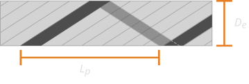

API reference
This page documents the public API and the documented implementation surface of LineCableModels.jl.
Contents
Core utilities
LineCableModels.Commons.TOL — Constant
Default tolerance for floating-point comparisons, TOL = 1e-6.
LineCableModels.Commons.T₀ — Constant
Base temperature for conductor properties, T₀ = 20.0 [°C].
LineCableModels.Commons._CLEANMETHODLIST — Constant
Modified METHODLIST abbreviation with sanitized file paths.
LineCableModels.Commons.f₀ — Constant
Base power system frequency, f₀ = 50.0 [Hz].
LineCableModels.Commons.ΔTmax — Constant
Maximum tolerance for temperature variations, ΔTmax = 150 [°C].
LineCableModels.Commons.ε₀ — Constant
Electric constant (vacuum permittivity), ε₀ = 8.8541878128e-12 [F/m].
LineCableModels.Commons.μ₀ — Constant
Magnetic constant (vacuum permeability), μ₀ = 4π * 1e-7 [H/m].
LineCableModels.Commons.ρ₀ — Constant
Annealed copper reference resistivity, ρ₀ = 1.724e-08 [Ω·m].
LineCableModels.Commons._CleanMethodList — Type
Override DocStringExtensions.format for METHODLIST.
LineCableModels.Commons.domain — Method
Return the domain tag type for objects that carry one.
Fallback returns nothing for domainless objects.
LineCableModels.UnitHandler.QuantityTag — Type
QuantityTag{Q} is a semantic tag for a physical quantity.
Examples of Q (to be extended as needed):
- :freq, :Z, :R, :L, :C, :G, :X, :B
- :angle, :index, :distance, :magnitude...
These tags are used across plotting, exporting, reporting, etc.
LineCableModels.UnitHandler.Unit — Type
A single physical unit with a metric prefix.
name: symbolic unit name, e.g. :ohm, :henry, :farad, :siemens, :meter, :hertz, :degree, :dimensionlessprefix: one of the metric prefix symbols (:base, :kilo, :milli, ...).
LineCableModels.UnitHandler.Units — Type
A composite unit, e.g., "Ω/km".
base: numerator units.per: denominator units.
LineCableModels.UnitHandler.default_unit — Method
Native (storage/computational) unit for a quantity.
Default: dimensionless, must be overridden in domain code where appropriate.
LineCableModels.UnitHandler.display_unit — Method
Default display unit for a quantity.
By default, equal to default_unit(q), but you override this when you want prettier axes/reports.
Example override (outside this module):
default_unit(::QuantityTag{:Z}) = units(:base, :ohm; per = (:base, :meter)) # Ω/m
display_unit(::QuantityTag{:Z}) =
units(:base, :ohm; per = (:kilo, :meter)) # Ω/kmLineCableModels.UnitHandler.get_exp — Method
Return the net base-10 exponent from the prefixes in a composite unit:
exp = (sum prefix exponents over `base`) - (sum over `per`)LineCableModels.UnitHandler.get_label — Method
Render composite Units as a readable string:
- base units concatenated with "."
- per units concatenated with "."
- if more than one per, denominator is shown as "(...)"
- :dimensionless units disappear; all-dimensionless → ""
LineCableModels.UnitHandler.get_label — Method
Render a Unit as a readable string, e.g. "kΩ", "mH", "μF", "Hz".
LineCableModels.UnitHandler.get_label — Method
Human-readable label for the quantity, without units.
Default: String(Q), i.e., :freq → "freq". You override this with more civilized labels.
LineCableModels.UnitHandler.get_symbol — Method
SI symbol label for the quantity.
Default: fall back to the quantity tag name Q as a string. There is no way to guess, so you must override it with meaningful labels.
LineCableModels.UnitHandler.scale_factor — Method
Scale factor to convert from the native unit of quantity q to a target display unit to_unit:
v_display = v_native * scale_factor(q, to_unit)LineCableModels.UnitHandler.scale_factor — Method
Numeric scale factor to convert values from from_unit to to_unit.
If v_raw is expressed in from_unit, then:
v_to = v_raw * scale_factor(from_unit, to_unit)because 1[to] = 10^(expto - expfrom) [from] ⇒ vto = vfrom * 10^(expfrom - expto).
LineCableModels.UnitHandler.scale_factor — Method
Scale factor to convert a raw value expressed in base-prefixed units (e.g. Ω/m, S/m, Hz) to the given Units.
i.e. qdisp = qraw * scale_factor(u)
LineCableModels.UnitHandler.units — Method
Convenience constructor for Units.
Examples:
u1 = units(:base, :ohm) # Ω
u2 = units(:base, :ohm; per = (:kilo, :meter)) # Ω/kmLineCableModels.Utils — Module
LineCableModels.UtilsThe Utils module provides utility functions for the LineCableModels.jl package. This module includes functions for handling measurements, numerical comparisons, and other common tasks.
Overview
- Provides general constants used throughout the package.
- Includes utility functions for numerical comparisons and handling measurements.
- Contains functions to compute uncertainties and bounds for measurements.
Dependencies
BaseDatesLineCableModels.CommonsLinearAlgebraLoggingPrintfStatistics
LineCableModels.Utils._coerce_elt_to_T — Function
Element‑wise coercion kernel. Converts a single leaf value to the target type T while preserving semantics for Measurement, numeric types, and sentinels.
Arguments
x: Input leaf value [dimensionless].::Type{T}: Target type [dimensionless].
Returns
- Value coerced to the target, according to the rules below.
Notes
Number → R<:AbstractFloat: usesconvert(R, x).Number → M<:Measurement: embeds the number as a zero‑uncertainty measurement (i.e.,zero(M) + x).Measurement → M<:Measurement: usesconvert(M, measurement), which preserves the source tag and derivative graph while converting the inner floating-point type.Measurement → R<:AbstractFloat: drops uncertainty and converts the nominal value.nothingandmissingpass through unchanged.Bool,Symbol,String,Function,DataType: passed through unchanged for measurement/real targets.- Fallback: returns
xunchanged.
Examples
using Measurements
_coerce_elt_to_T(1.2, Float32) # 1.2f0
_coerce_elt_to_T(1.2, Measurement{Float64}) # 1.2 ± 0.0
_coerce_elt_to_T(measurement(2.0, 0.1), Float32) # 2.0f0
_coerce_elt_to_T(measurement(2.0, 0.1), Measurement{Float32}) # 2.0 ± 0.1 (Float32 inner)
_coerce_elt_to_T(missing, Float64) # missingMethods
_coerce_elt_to_T(x, _)defined at typecoercion.jl:209.
_coerce_elt_to_T(x, _)defined at typecoercion.jl:210.
_coerce_elt_to_T(m, _)defined at typecoercion.jl:211.
_coerce_elt_to_T(m, _)defined at typecoercion.jl:212.
_coerce_elt_to_T(_, _)defined at typecoercion.jl:215.
_coerce_elt_to_T(_, _)defined at typecoercion.jl:216.
_coerce_elt_to_T(x, _)defined at typecoercion.jl:217.
_coerce_elt_to_T(x, _)defined at typecoercion.jl:218.
_coerce_elt_to_T(x, _)defined at typecoercion.jl:219.
_coerce_elt_to_T(x, _)defined at typecoercion.jl:220.
LineCableModels.Utils._hascomplex_type — Function
Determines whether a Type contains or is a Complex number type somewhere in its structure. The check is recursive over arrays, tuples (including variadic tuples), named tuples, and union types. For concrete struct types, the predicate descends into field types. Guards are present to avoid infinite recursion through known self‑referential types (e.g., Measurements.Measurement).
Arguments
::Type: Type to inspect [dimensionless].
Returns
Boolindicating whether aComplextype occurs anywhere within the type structure.
Notes
- For
AbstractArray{S}, only the element typeSis inspected. - For
TupleandNamedTuple{N,T}, the parameters are traversed. - For
Union, both branches are inspected. - Concrete
Measurementtypes are treated as terminal and are not descended.
Examples
_hascomplex_type(Float64) # false
_hascomplex_type(Complex{Float64}) # true
_hascomplex_type(Vector{ComplexF64}) # true
_hascomplex_type(Tuple{Int, ComplexF64}) # trueMethods
_hascomplex_type(_)defined at typecoercion.jl:82.
_hascomplex_type(_)defined at typecoercion.jl:83.
_hascomplex_type(_)defined at typecoercion.jl:84.
_hascomplex_type(_)defined at typecoercion.jl:85.
_hascomplex_type(_)defined at typecoercion.jl:88.
_hascomplex_type(T)defined at typecoercion.jl:89.
_hascomplex_type(T)defined at typecoercion.jl:90.
_hascomplex_type(_)defined at typecoercion.jl:96.
LineCableModels.Utils._hasmeas_type — Method
_hasmeas_type(_::Type{<:Measurements.Measurement}) -> Bool
Determines whether a Type contains or is a Measurements.Measurement somewhere in its structure. The check is recursive over arrays, tuples (including variadic tuples), named tuples, and union types. For concrete struct types, the predicate descends into field types. Guards are present to avoid infinite recursion through known self‑contained types (e.g., Complex).
Arguments
::Type: Type to inspect [dimensionless].
Returns
Boolindicating whether aMeasurementoccurs anywhere within the type structure.
Notes
- For
AbstractArray{S}, only the element typeSis inspected. - For
TupleandNamedTuple{N,T}, the parameters are traversed. - For
Union, both branches are inspected. - Concrete
Complextypes are treated as terminal and are not descended.
Examples
using Measurements
_hasmeas_type(Float64) # false
_hasmeas_type(Measurement{Float64}) # true
_hasmeas_type(Vector{Measurement{Float64}}) # true
_hasmeas_type(Tuple{Int, Float64}) # false
_hasmeas_type(Union{Int, Measurement{Float64}}) # trueLineCableModels.Utils._meas_inner — Method
_meas_inner(_::Type{Measurements.Measurement{S}}) -> Any
Extracts the real inner type S from Measurement{S}.
Arguments
::Type{Measurement{S}}: Measurement type wrapper [dimensionless].
Returns
- The inner floating‐point type
S[dimensionless].
Examples
using Measurements
S = _meas_inner(Measurement{Float64}) # Float64LineCableModels.Utils.bias_to_uncertain — Method
bias_to_uncertain(
nominal::Float64,
measurements::Vector{<:Measurements.Measurement}
) -> Union{Missing, Measurements.Measurement}
Computes the uncertainty of a measurement by incorporating systematic bias.
Arguments
nominal: The deterministic nominal value (Float64).measurements: A vector ofMeasurementvalues from theMeasurements.jlpackage.
Returns
- A new
Measurementobject representing the mean measurement value with an uncertainty that accounts for both statistical variation and systematic bias.
Notes
- Computes the mean value and its associated uncertainty from the given
measurements. - Determines the bias as the absolute difference between the deterministic
nominalvalue and the mean measurement. - The final uncertainty is the sum of the standard uncertainty (
sigma_mean) and the systematic bias.
Examples
using Measurements
nominal = 10.0
measurements = [10.2 ± 0.1, 9.8 ± 0.2, 10.1 ± 0.15]
result = bias_to_uncertain(nominal, measurements)
println(result) # Output: Measurement with adjusted uncertaintyLineCableModels.Utils.block_transform! — Method
Apply f to every square block of M defined by map, in-place.
M: n×n or n×n×nf (any eltype).map: length-n; equal ids => same block (non-contiguous ok).f: function likef(B::AbstractMatrix, args...) -> k×k Matrix.args...: extra positional args passed tof.slice_positions: positions inargsthat should be indexed asargs[i][idx]per block (useful forphase_map).
Returns M.
LineCableModels.Utils.coerce_to_T — Function
Public coercion API. Converts scalars and containers to a target type T, applying element‑wise coercion recursively. Complex numbers are handled by splitting into real and imaginary parts and coercing each side independently.
Arguments
x: Input value (scalar or container) [dimensionless].::Type{T}: Target type [dimensionless].
Returns
- Value coerced to the target type:
- For
Real → Complex{P}: constructsComplex{P}(coerce_to_T(re, P), coerce_to_T(im, P))(imaginary part from0). - For
Complex → Real: discards the imaginary part and coerces the real part. - For
AbstractArray,Tuple,NamedTuple: coerces each element recursively. - For other types: defers to
_coerce_elt_to_T.
- For
Examples
using Measurements
# Scalar
coerce_to_T(1.2, Float32) # 1.2f0
coerce_to_T(1.2, Measurement{Float64}) # 1.2 ± 0.0
coerce_to_T(1 + 2im, Complex{Float32}) # 1.0f0 + 2.0f0im
coerce_to_T(1 + 2im, Float64) # 1.0
# Containers
coerce_to_T([1.0, 2.0], Measurement{Float64}) # measurement array
coerce_to_T((1.0, 2.0), Float32) # (1.0f0, 2.0f0)
coerce_to_T((; a=1.0, b=2.0), Float32) # (a = 1.0f0, b = 2.0f0)Methods
coerce_to_T(x, _)defined at typecoercion.jl:263.
coerce_to_T(x, _)defined at typecoercion.jl:270.
coerce_to_T(x, _)defined at typecoercion.jl:274.
coerce_to_T(x, _)defined at typecoercion.jl:277.
coerce_to_T(x, _)defined at typecoercion.jl:280.
coerce_to_T(x, _)defined at typecoercion.jl:285.
coerce_to_T(x, _)defined at typecoercion.jl:288.
coerce_to_T(A, _)defined at typecoercion.jl:292.
coerce_to_T(A, _)defined at typecoercion.jl:293.
coerce_to_T(t, _)defined at typecoercion.jl:296.
coerce_to_T(t, _)defined at typecoercion.jl:297.
coerce_to_T(nt, _)defined at typecoercion.jl:301.
coerce_to_T(nt, _)defined at typecoercion.jl:303.
coerce_to_T(x, _)defined at typecoercion.jl:308.
LineCableModels.Utils.is_headless — Method
is_headless() -> Bool
Determines if the current execution environment is headless (without display capability).
Returns
trueif running in a continuous integration environment or without display access.falseotherwise when a display is available.
Examples
if is_headless()
# Use non-graphical backend
gr()
else
# Use interactive backend
plotlyjs()
endLineCableModels.Utils.is_in_testset — Method
is_in_testset() -> Any
Checks if the code is running inside a @testset by checking if Test is loaded in the current session and then calling get_testset_depth().
LineCableModels.Utils.percent_error — Method
percent_error(m::Number) -> Any
Computes the percentage uncertainty of a measurement.
Arguments
m: A numerical value, expected to be of typeMeasurementfrom theMeasurements.jlpackage.
Returns
- The percentage uncertainty, computed as
100 * uncertainty(m) / value(m), ifmis aMeasurement. NaNifmis not aMeasurement.
Examples
using Measurements
m = 10.0 ± 2.0
percent_err = percent_error(m) # Output: 20.0
not_a_measurement = 5.0
percent_err_invalid = percent_error(not_a_measurement) # Output: NaNLineCableModels.Utils.percent_to_uncertain — Method
percent_to_uncertain(
val,
perc
) -> Union{Missing, Measurements.Measurement}
Converts a value to a measurement with uncertainty based on percentage.
Arguments
val: The nominal value.perc: The percentage uncertainty (0 to 100).
Returns
- A
Measurementtype with the given value and calculated uncertainty.
Examples
using Measurements
percent_to_uncertain(100.0, 5) # Output: 100.0 ± 5.0
percent_to_uncertain(10.0, 10) # Output: 10.0 ± 1.0LineCableModels.Utils.resolve_T — Method
resolve_T(args...) -> Type
Resolves the promotion target type to be used by constructors and coercion utilities based on the runtime arguments. The decision uses structure‑aware predicates for Measurement and Complex:
- If any argument contains
Measurementand any containsComplex, returnsComplex{Measurement{BASE_FLOAT}}. - Else if any contains
Measurement, returnsMeasurement{BASE_FLOAT}. - Else if any contains
Complex, returnsComplex{BASE_FLOAT}. - Otherwise returns
BASE_FLOAT.
Arguments
args...: Values whose types will drive the promotion decision [dimensionless].
Returns
- A
Typesuitable for numeric promotion in subsequent coercion.
Examples
using Measurements
T = resolve_T(1.0, 2.0) # BASE_FLOAT
T = resolve_T(1 + 0im, 2.0) # Complex{BASE_FLOAT}
T = resolve_T(measurement(1.0, 0.1), 2.0) # Measurement{BASE_FLOAT}
T = resolve_T(measurement(1.0, 0.1), 2 + 0im) # Complex{Measurement{BASE_FLOAT}}LineCableModels.Utils.to_certain — Method
to_certain(value) -> Any
Converts a measurement to a value with zero uncertainty, retaining the numeric type Measurement.
Arguments
value: Input value that may be aMeasurementtype or another type.
Returns
- If input is a
Measurement, returns the same value with zero uncertainty; otherwise returns the original value unchanged.
Examples
x = 5.0 ± 0.1
result = to_certain(x) # Output: 5.0 ± 0.0
y = 10.0
result = to_certain(y) # Output: 10.0LineCableModels.Utils.to_lower — Method
to_lower(m::Number) -> Any
Computes the lower bound of a measurement value.
Arguments
m: A numerical value, expected to be of typeMeasurementfrom theMeasurements.jlpackage.
Returns
- The lower bound, computed as
value(m) - uncertainty(m)ifmis aMeasurement. NaNifmis not aMeasurement.
Examples
using Measurements
m = 10.0 ± 2.0
lower = to_lower(m) # Output: 8.0
not_a_measurement = 5.0
lower_invalid = to_lower(not_a_measurement) # Output: NaNLineCableModels.Utils.to_nominal — Method
to_nominal(x::Measurements.Measurement) -> AbstractFloat
Returns the nominal (deterministic) value of inputs that may contain Measurements.Measurement numbers, recursively handling Complex and arrays.
Arguments
x: Input value which can be aMeasurementtype or any other type.
Returns
- Measurement → its
value - Complex →
complex(to_nominal(real(z)), to_nominal(imag(z))) - AbstractArray → broadcasts
to_nominalelementwise - Anything else → returned unchanged
Examples
using Measurements
to_nominal(1.0) # Output: 1.0
to_nominal(5.2 ± 0.3) # Output: 5.2LineCableModels.Utils.to_upper — Method
to_upper(m::Number) -> Any
Computes the upper bound of a measurement value.
Arguments
m: A numerical value, expected to be of typeMeasurementfrom theMeasurements.jlpackage.
Returns
- The upper bound of
m, computed asvalue(m) + uncertainty(m)ifmis aMeasurement. NaNifmis not aMeasurement.
Examples
using Measurements
m = 10.0 ± 2.0
upper = to_upper(m) # Output: 12.0
not_a_measurement = 5.0
upper_invalid = to_upper(not_a_measurement) # Output: NaNData model and materials
LineCableModels.Materials — Module
LineCableModels.MaterialsThe Materials module provides functionality for managing and utilizing material properties within the LineCableModels.jl package. This module includes definitions for material properties, a library for storing and retrieving materials, and functions for manipulating material data.
Overview
- Defines the
Materialstruct representing fundamental physical properties of materials. - Provides the
MaterialsLibrarymutable struct for storing a collection of materials. - Includes functions for adding, removing, and retrieving materials from the library.
- Supports loading and saving material data from/to JSON files.
- Contains utility functions for displaying material data.
Dependencies
BaseLineCableModels.CommonsMeasurements
DataFrames.DataFrame — Method
DataFrame(library::MaterialsLibrary) -> DataFrames.DataFrame
Lists the contents of a MaterialsLibrary as a DataFrame.
Arguments
library: Instance ofMaterialsLibraryto be displayed.
Returns
- A
DataFramecontaining the material properties.
Examples
library = MaterialsLibrary()
df = DataFrame(library)LineCableModels.Materials.Material — Type
struct Material{T<:Union{Float64, Measurements.Measurement{Float64}}}Defines electromagnetic and thermal properties of a material used in cable modeling:
rho::Union{Float64, Measurements.Measurement{Float64}}: Electrical resistivity of the material [Ω·m].eps_r::Union{Float64, Measurements.Measurement{Float64}}: Relative permittivity [dimensionless].mu_r::Union{Float64, Measurements.Measurement{Float64}}: Relative permeability [dimensionless].T0::Union{Float64, Measurements.Measurement{Float64}}: Reference temperature for property evaluations [°C].alpha::Union{Float64, Measurements.Measurement{Float64}}: Temperature coefficient of resistivity [1/°C].
LineCableModels.Materials.Material — Method
Material(rho, eps_r, mu_r, T0, alpha) -> Material
Weakly-typed constructor that infers the target scalar type T from the arguments, coerces values to T, and calls the strict numeric kernel.
Arguments
rho: Resistivity [Ω·m].eps_r: Relative permittivity [1].mu_r: Relative permeability [1].T0: Reference temperature [°C].alpha: Temperature coefficient of resistivity [1/°C].
Returns
Material{T}whereT = resolve_T(rho, eps_r, mu_r, T0, alpha).
LineCableModels.Materials.MaterialsLibrary — Type
mutable struct MaterialsLibrary <: AbstractDict{String, Material}Stores a collection of predefined materials for cable modeling, indexed by material name:
data::Dict{String, Material}: Dictionary mapping material names toMaterialobjects.
LineCableModels.Materials.MaterialsLibrary — Method
MaterialsLibrary(; add_defaults) -> MaterialsLibrary
Constructs an empty MaterialsLibrary instance and initializes with default materials.
Arguments
- None.
Returns
- A
MaterialsLibraryobject populated with default materials.
Examples
# Create a new, empty library
library = MaterialsLibrary()Base.delete! — Method
delete!(library::MaterialsLibrary, name::String)
Removes a material from a MaterialsLibrary.
Arguments
library: Instance ofMaterialsLibraryfrom which the material will be removed.name: Name of the material to be removed.
Returns
- The modified instance of
MaterialsLibrarywithout the specified material.
Errors
Throws an error if the material does not exist in the library.
Examples
library = MaterialsLibrary()
delete!(library, "copper")Base.get — Function
get(
library::MaterialsLibrary,
name::String
) -> Union{Nothing, Material}
get(library::MaterialsLibrary, name::String, default) -> Any
Retrieves a material from a MaterialsLibrary by name.
Arguments
library: Instance ofMaterialsLibrarycontaining the materials.name: Name of the material to retrieve.
Returns
- The requested
Materialif found, otherwisenothing.
Examples
library = MaterialsLibrary()
material = get(library, "copper")Base.show — Method
show(
io::IO,
_::MIME{Symbol("text/plain")},
dict::Dict{String, Material}
)
Defines the display representation of a MaterialsLibrary object for REPL or text output.
Arguments
io: Output stream.::MIME"text/plain": MIME type for plain text output.dict: TheMaterialsLibrarycontents to be displayed.
Returns
- Nothing. Modifies
ioby writing text representation of the library.
Base.show — Method
show(
io::IO,
_::MIME{Symbol("text/plain")},
library::MaterialsLibrary
)
Defines the display representation of a MaterialsLibrary object for REPL or text output.
Arguments
io: Output stream.::MIME"text/plain": MIME type for plain text output.library: TheMaterialsLibraryinstance to be displayed.
Returns
- Nothing. Modifies
ioby writing text representation of the library.
Base.show — Method
show(
io::IO,
_::MIME{Symbol("text/plain")},
material::Material
)
Defines the display representation of a Material object for REPL or text output.
Arguments
io: Output stream.::MIME"text/plain": MIME type for plain text output.material: TheMaterialinstance to be displayed.
Returns
- Nothing. Modifies
ioby writing text representation of the material.
LineCableModels.Commons.add! — Method
add!(
library::MaterialsLibrary,
name::AbstractString,
material::Material
) -> MaterialsLibrary
Adds a new material to a MaterialsLibrary.
Arguments
library: Instance ofMaterialsLibrarywhere the material will be added.name: Name of the material.material: Instance ofMaterialcontaining its properties.
Returns
- The modified instance of
MaterialsLibrarywith the new material added.
Errors
Throws an error if a material with the same name already exists in the library.
Examples
library = MaterialsLibrary()
material = Material(1.7241e-8, 1.0, 0.999994, 20.0, 0.00393)
add!(library, "copper", material)LineCableModels.Materials._add_default_materials! — Method
_add_default_materials!(
library::MaterialsLibrary
) -> MaterialsLibrary
Populates a MaterialsLibrary with commonly used materials, assigning predefined electrical and thermal properties.
Arguments
library: Instance ofMaterialsLibraryto be populated.
Returns
- The modified instance of
MaterialsLibrarycontaining the predefined materials.
Examples
library = MaterialsLibrary()
_add_default_materials!(library)LineCableModels.DataModel — Module
LineCableModels.DataModelThe DataModel module provides data structures, constructors and utilities for modeling power cables within the LineCableModels.jl package. This module includes definitions for various cable components, and visualization tools for cable designs.
Overview
- Provides objects for detailed cable modeling with the
CableDesignand supporting types:CircStrands,Strip,Tubular,Semicon, andInsulator. - Includes objects for cable system modeling with the
LineCableSystemtype, and multiple formation patterns like trifoil and flat arrangements. - Contains functions for calculating the base electric properties of all elements within a
CableDesign, namely: resistance, inductance (via GMR), shunt capacitance, and shunt conductance (via loss factor). - Offers visualization tools for previewing cable cross-sections and system layouts.
- Provides a library system for storing and retrieving cable designs.
Dependencies
BaseColorsDataFramesLineCableModels.CommonsLineCableModels.DataModel.BaseParamsLinearAlgebraMeasurements
DataFrames.DataFrame — Type
DataFrame(design::CableDesign; ...) -> DataFrames.DataFrame
DataFrame(
design::CableDesign,
format::Symbol;
S,
rho_e
) -> DataFrames.DataFrame
Extracts and displays data from a CableDesign.
Arguments
design: ACableDesignobject to extract data from.format: Symbol indicating the level of detail::baseparams: Basic RLC parameters with nominal value comparison (default).:components: Component-level equivalent properties.:detailed: Individual cable part properties with layer-by-layer breakdown.
S: Separation distance between cables [m] (only used for:baseparamsformat). Default: outermost cable diameter.rho_e: Resistivity of the earth [Ω·m] (only used for:baseparamsformat). Default: 100.
Returns
- A
DataFramecontaining the requested cable data in the specified format.
Examples
# Get basic RLC parameters
data = DataFrame(design) # Default is :baseparams format
# Get component-level data
comp_data = DataFrame(design, :components)
# Get detailed part-by-part breakdown
detailed_data = DataFrame(design, :detailed)
# Specify earth parameters for core calculations
core_data = DataFrame(design, :baseparams, S=0.5, rho_e=150)DataFrames.DataFrame — Method
DataFrame(library::CablesLibrary) -> DataFrames.DataFrame
Lists the cable designs in a CablesLibrary object as a DataFrame.
Arguments
library: An instance ofCablesLibrarywhose cable designs are to be displayed.
Returns
- A
DataFrameobject with the following columns:cable_id: The unique identifier for each cable design.nominal_data: A string representation of the nominal data for each cable design.components: A comma-separated string listing the components of each cable design.
Examples
library = CablesLibrary()
design1 = CableDesign("example1", nominal_data=NominalData(...), components=Dict("A"=>...))
design2 = CableDesign("example2", nominal_data=NominalData(...), components=Dict("C"=>...))
add!(library, design1)
add!(library, design2)
# Display the library as a DataFrame
df = DataFrame(library)
first(df, 5) # Show the first 5 rows of the DataFrameDataFrames.DataFrame — Method
DataFrame(system::LineCableSystem) -> DataFrames.DataFrame
Generates a summary DataFrame for cable positions and phase mappings within a LineCableSystem.
Arguments
system: ALineCableSystemobject containing the cable definitions and their configurations.
Returns
- A
DataFramecontaining:cable_id: Identifier of each cable design.horz: Horizontal coordinate of each cable [m].vert: Vertical coordinate of each cable [m].phase_mapping: Human-readable string representation mapping each cable component to its assigned phase.
Examples
df = DataFrame(cable_system)
println(df)
# Output:
# │ cable_id │ horz │ vert │ phase_mapping │
# │------------│------│-------│-------------------------│
# │ "Cable1" │ 0.0 │ -0.5 │ core: 1, sheath: 0 │
# │ "Cable2" │ 0.35 │ -1.25 │ core: 2, sheath: 0 │LineCableModels.DataModel.AbstractCablePart — Type
abstract type AbstractCablePart{T}Abstract type representing a generic cable part.
LineCableModels.DataModel.AbstractConductorPart — Type
abstract type AbstractConductorPart{T} <: LineCableModels.DataModel.AbstractCablePart{T}Abstract type representing a conductive part of a cable.
Subtypes implement specific configurations:
LineCableModels.DataModel.AbstractInsulatorPart — Type
abstract type AbstractInsulatorPart{T} <: LineCableModels.DataModel.AbstractCablePart{T}Abstract type representing an insulating part of a cable.
Subtypes implement specific configurations:
LineCableModels.DataModel.AbstractStrandsLayer — Type
abstract type AbstractStrandsLayer{T} <: LineCableModels.DataModel.AbstractConductorPart{T}Abstract type representing all stranded configurations composed of grouped discrete geometric shapes.
Subtypes implement specific configurations:
LineCableModels.DataModel.CableComponent — Type
mutable struct CableComponent{T<:Union{Float64, Measurements.Measurement{Float64}}}Represents a CableComponent, i.e. a group of AbstractCablePart objects, with the equivalent geometric and material properties:
id::String: Cable component identification (e.g. core/sheath/armor).conductor_group::ConductorGroup: The conductor group containing all conductive parts.conductor_props::Material: Effective properties of the equivalent coaxial conductor.insulator_group::InsulatorGroup: The insulator group containing all insulating parts.insulator_props::Material: Effective properties of the equivalent coaxial insulator.
Cable components operate as containers for multiple cable parts, allowing the calculation of effective electromagnetic (EM) properties ($\sigma, \varepsilon, \mu$). This is performed by transforming the physical objects within the CableComponent into one equivalent coaxial homogeneous structure comprised of one conductor and one insulator, each one represented by effective Material types stored in conductor_props and insulator_props fields.
The effective properties approach is widely adopted in EMT-type simulations, and involves locking the internal and external radii of the conductor and insulator parts, respectively, and calculating the equivalent EM properties in order to match the previously determined values of R, L, C and G [4] [14].
In applications, the CableComponent type is mapped to the main cable structures described in manufacturer datasheets, e.g., core, sheath, armor and jacket.
LineCableModels.DataModel.CableComponent — Method
CableComponent(
id::String,
conductor_group::ConductorGroup,
insulator_group::InsulatorGroup
) -> CableComponent
Weakly-typed constructor that infers the scalar type T from the two groups, coerces them if necessary, and calls the strict kernel.
Arguments
id: Cable component identification.conductor_group: The conductor group (anyConductorGroup{S}).insulator_group: The insulator group (anyInsulatorGroup{R}).
Returns
- A
CableComponent{T}whereTis the resolved scalar type.
LineCableModels.DataModel.CableComponent — Method
Initializes a CableComponent object based on its constituent conductor and insulator groups. The constructor performs the following sequence of steps:
- Validate that the conductor and insulator groups have matching radii at their interface.
- Obtain the lumped-parameter values (R, L, C, G) from the conductor and insulator groups, which are computed within their respective constructors.
- Calculate the correction factors and equivalent electromagnetic properties of the conductor and insulator groups:
| Quantity | Symbol | Function |
|---|---|---|
| Resistivity (conductor) | $\rho_{con}$ | calc_equivalent_rho |
| Permeability (conductor) | $\mu_{con}$ | calc_equivalent_mu |
| Resistivity (insulator) | $\rho_{ins}$ | calc_sigma_lossfact |
| Permittivity (insulation) | $\varepsilon_{ins}$ | calc_equivalent_eps |
| Permeability (insulation) | $\mu_{ins}$ | calc_solenoid_correction |
Arguments
id: Cable component identification (e.g. core/sheath/armor).conductor_group: The conductor group containing all conductive parts.insulator_group: The insulator group containing all insulating parts.
Returns
A CableComponent instance with calculated equivalent properties:
id::String: Cable component identification.conductor_group::ConductorGroup{T}: The conductor group containing all conductive parts.conductor_props::Material{T}: Effective properties of the equivalent coaxial conductor.rho: Resistivity [Ω·m].eps_r: Relative permittivity [dimensionless].mu_r: Relative permeability [dimensionless].T0: Reference temperature [°C].alpha: Temperature coefficient of resistivity [1/°C].
insulator_group::InsulatorGroup{T}: The insulator group containing all insulating parts.insulator_props::Material{T}: Effective properties of the equivalent coaxial insulator.rho: Resistivity [Ω·m].eps_r: Relative permittivity [dimensionless].mu_r: Relative permeability [dimensionless].T0: Reference temperature [°C].alpha: Temperature coefficient of resistivity [1/°C].
Examples
conductor_group = ConductorGroup(...)
insulator_group = InsulatorGroup(...)
cable = CableComponent("component_id", conductor_group, insulator_group) # Create cable component with base parameters @ 50 HzLineCableModels.DataModel.CableDesign — Type
mutable struct CableDesign{T<:Union{Float64, Measurements.Measurement{Float64}}}Represents the design of a cable, including its unique identifier, nominal data, and components.
cable_id::String: Unique identifier for the cable design.nominal_data::Union{Nothing, NominalData{T}} where T<:Union{Float64, Measurements.Measurement{Float64}}: Informative reference data.components::Array{CableComponent{T}, 1} where T<:Union{Float64, Measurements.Measurement{Float64}}: Vector of cable components.
LineCableModels.DataModel.CableDesign — Method
CableDesign(
cable_id::String,
component::CableComponent;
nominal_data
) -> CableDesign
Weakly-typed constructor that infers the scalar type from the component (and nominal data if present), coerces values to that type, and calls the typed kernel.
LineCableModels.DataModel.CableDesign — Method
CableDesign(
cable_id::String,
conductor_group::ConductorGroup,
insulator_group::InsulatorGroup;
component_id,
nominal_data
) -> CableDesign
Constructs a CableDesign instance from conductor and insulator groups. Convenience wrapper that builds the component with reduced boilerplate.
LineCableModels.DataModel.CableDesign — Method
CableDesign(
cable_id::String,
component::CableComponent{T<:Union{Float64, Measurements.Measurement{Float64}}};
nominal_data
) -> CableDesign
Strict numeric kernel: constructs a CableDesign{T} from one component (typed) and optional nominal data (typed or nothing). Assumes all inputs are already at scalar type T.
Arguments
cable_id: Unique identifier for the cable design.component: InitialCableComponentfor the design.nominal_data: Reference data for the cable design. Default:NominalData().
Returns
- A
CableDesignobject with the specified properties.
Examples
conductor_group = ConductorGroup(central_conductor)
insulator_group = InsulatorGroup(main_insulator)
component = CableComponent(conductor_group, insulator_group)
design = CableDesign("example", component)LineCableModels.DataModel.CablePosition — Type
CablePosition(
cable::Union{Nothing, CableDesign},
horz::Number,
vert::Number
) -> CablePosition
CablePosition(
cable::Union{Nothing, CableDesign},
horz::Number,
vert::Number,
conn::Union{Nothing, Dict{String, Int64}}
) -> CablePosition
Weakly-typed constructor that infers T from the cable and coordinates, builds/validates the phase mapping, coerces inputs to T, and calls the typed kernel.
LineCableModels.DataModel.CablePosition — Type
struct CablePosition{T<:Union{Float64, Measurements.Measurement{Float64}}}Represents a physically defined cable with position and phase mapping within a system.
design_data::CableDesign: TheCableDesignobject assigned to this cable position.horz::Union{Float64, Measurements.Measurement{Float64}}: Horizontal coordinate [m].vert::Union{Float64, Measurements.Measurement{Float64}}: Vertical coordinate [m].conn::Vector{Int64}: Phase mapping vector (aligned with design_data.components).
LineCableModels.DataModel.CablePosition — Method
Constructs a CablePosition instance with specified cable design, coordinates, and phase mapping.
Arguments
cable: ACableDesignobject defining the cable structure.horz: Horizontal coordinate [m].vert: Vertical coordinate [m].conn: A dictionary mapping component names to phase indices, ornothingfor default mapping.
Returns
- A
CablePositionobject with the assigned cable design, coordinates, and phase mapping.
The conn argument is a Dict that maps the cable components to their respective phases. The values (1, 2, 3) represent the phase numbers (A, B, C) in a three-phase system. Components mapped to phase 0 will be Kron-eliminated (grounded). Components set to the same phase will be bundled into an equivalent phase.
Examples
cable_design = CableDesign("example", nominal_data, components_dict)
xa, ya = 0.0, -1.0 # Coordinates in meters
# With explicit phase mapping
cablepos1 = CablePosition(cable_design, xa, ya, Dict("core" => 1))
# With default phase mapping (first component to phase 1, others to 0)
default_cablepos = CablePosition(cable_design, xa, ya)LineCableModels.DataModel.CablesLibrary — Type
mutable struct CablesLibraryRepresents a library of cable designs stored as a dictionary.
data::Dict{String, CableDesign}: Dictionary mapping cable IDs to the respective CableDesign objects.
LineCableModels.DataModel.CablesLibrary — Method
CablesLibrary() -> CablesLibrary
Constructs an empty CablesLibrary instance.
Arguments
- None.
Returns
- A
CablesLibraryobject with an empty dictionary of cable designs.
Examples
# Create a new, empty library
library = CablesLibrary()LineCableModels.DataModel.CircStrands — Type
struct CircStrands{T<:Union{Float64, Measurements.Measurement{Float64}}, U<:Int64} <: LineCableModels.DataModel.AbstractStrandsLayer{T<:Union{Float64, Measurements.Measurement{Float64}}}Represents an array of wires equally spaced around a circumference of arbitrary radius, with attributes:
r_in::Union{Float64, Measurements.Measurement{Float64}}: Internal radius of the wire array [m].r_ex::Union{Float64, Measurements.Measurement{Float64}}: External radius of the wire array [m].radius_wire::Union{Float64, Measurements.Measurement{Float64}}: Radius of each individual wire [m].num_wires::Int64: Number of wires in the array [dimensionless].lay_ratio::Union{Float64, Measurements.Measurement{Float64}}: Ratio defining the lay length of the wires (twisting factor) [dimensionless].mean_diameter::Union{Float64, Measurements.Measurement{Float64}}: Mean diameter of the wire array [m].pitch_length::Union{Float64, Measurements.Measurement{Float64}}: Pitch length of the wire array [m].lay_direction::Int64: Twisting direction of the strands (1 = unilay, -1 = contralay) [dimensionless].material_props::Material: Material object representing the physical properties of the wire material.temperature::Union{Float64, Measurements.Measurement{Float64}}: Temperature at which the properties are evaluated [°C].cross_section::Union{Float64, Measurements.Measurement{Float64}}: Cross-sectional area of all wires in the array [m²].resistance::Union{Float64, Measurements.Measurement{Float64}}: Electrical resistance per wire in the array [Ω/m].gmr::Union{Float64, Measurements.Measurement{Float64}}: Geometric mean radius of the wire array [m].
LineCableModels.DataModel.CircStrands — Method
CircStrands(
r_in::Union{Float64, Measurements.Measurement{Float64}},
radius_wire::Union{Float64, Measurements.Measurement{Float64}},
num_wires::Int64,
lay_ratio::Union{Float64, Measurements.Measurement{Float64}},
material_props::Material{T<:Union{Float64, Measurements.Measurement{Float64}}},
temperature::Union{Float64, Measurements.Measurement{Float64}},
lay_direction::Int64
) -> LineCableModels.DataModel.CircStrands{T, Int64} where T<:Union{Float64, Measurements.Measurement{Float64}}
Constructs a CircStrands instance based on specified geometric and material parameters.
Arguments
r_in: Internal radius of the wire array [m].radius_wire: Radius of each individual wire [m].num_wires: Number of wires in the array [dimensionless].lay_ratio: Ratio defining the lay length of the wires (twisting factor) [dimensionless].material_props: AMaterialobject representing the material properties.temperature: Temperature at which the properties are evaluated [°C].lay_direction: Twisting direction of the strands (1 = unilay, -1 = contralay) [dimensionless].
Returns
- A
CircStrandsobject with calculated geometric and electrical properties.
Examples
material_props = Material(1.7241e-8, 1.0, 0.999994, 20.0, 0.00393)
circstrands = CircStrands(0.01, Diameter(0.002), 7, 10, material_props, temperature=25)
println(circstrands.mean_diameter) # Outputs mean diameter in m
println(circstrands.resistance) # Outputs resistance in Ω/mLineCableModels.DataModel.ConductorGroup — Method
ConductorGroup(
component::CableComponent{T<:Union{Float64, Measurements.Measurement{Float64}}}
) -> ConductorGroup
Build a ConductorGroup equivalent for a CableComponent, preserving num_turns and num_wires from the original group.
Constructs a single-layer ConductorGroup{T} from the computed equivalent Tubular(component), but carries over bookkeeping fields needed by downstream corrections (e.g., solenoid correction using num_turns).
LineCableModels.DataModel.ConductorGroup — Method
Constructs a ConductorGroup instance initializing with the central conductor part.
Arguments
central_conductor: AnAbstractConductorPartobject located at the center of the conductor group.
Returns
- A
ConductorGroupobject initialized with geometric and electrical properties derived from the central conductor.
LineCableModels.DataModel.Diameter — Type
struct Diameter{T<:Real} <: LineCableModels.DataModel.AbstractRadiusRepresents the diameter of a cable component.
value::Real: Numerical value of the diameter [m].
LineCableModels.DataModel.Insulator — Type
struct Insulator{T<:Union{Float64, Measurements.Measurement{Float64}}} <: LineCableModels.DataModel.AbstractInsulatorPart{T<:Union{Float64, Measurements.Measurement{Float64}}}Represents an insulating layer with defined geometric, material, and electrical properties given by the attributes:
r_in::Union{Float64, Measurements.Measurement{Float64}}: Internal radius of the insulating layer [m].r_ex::Union{Float64, Measurements.Measurement{Float64}}: External radius of the insulating layer [m].material_props::Material: Material properties of the insulator.temperature::Union{Float64, Measurements.Measurement{Float64}}: Operating temperature of the insulator [°C].cross_section::Union{Float64, Measurements.Measurement{Float64}}: Cross-sectional area of the insulating layer [m²].resistance::Union{Float64, Measurements.Measurement{Float64}}: Electrical resistance of the insulating layer [Ω/m].gmr::Union{Float64, Measurements.Measurement{Float64}}: Geometric mean radius of the insulator [m].shunt_capacitance::Union{Float64, Measurements.Measurement{Float64}}: Shunt capacitance per unit length of the insulating layer [F/m].shunt_conductance::Union{Float64, Measurements.Measurement{Float64}}: Shunt conductance per unit length of the insulating layer [S·m].
LineCableModels.DataModel.Insulator — Method
Insulator(
component::CableComponent{T<:Union{Float64, Measurements.Measurement{Float64}}}
) -> Insulator
Constructs the equivalent coaxial insulation as an Insulator directly from a CableComponent, calling the strict positional constructor.
Arguments
component: TheCableComponentproviding geometry and material.
Returns
Insulator{T}with radii fromcomponent.insulator_groupand material fromcomponent.insulator_propsat the group temperature (fallback toT0).
LineCableModels.DataModel.Insulator — Method
Insulator(
r_in::Union{Float64, Measurements.Measurement{Float64}},
r_ex::Union{Float64, Measurements.Measurement{Float64}},
material_props::Material{T<:Union{Float64, Measurements.Measurement{Float64}}},
temperature::Union{Float64, Measurements.Measurement{Float64}}
) -> Insulator
Constructs an Insulator object with specified geometric and material parameters.
Arguments
r_in: Internal radius of the insulating layer [m].r_ex: External radius or thickness of the layer [m].material_props: Material properties of the insulating material.temperature: Operating temperature of the insulator [°C].
Returns
- An
Insulatorobject with calculated electrical properties.
Examples
material_props = Material(1e10, 3.0, 1.0, 20.0, 0.0)
insulator_layer = Insulator(0.01, 0.015, material_props, temperature=25)LineCableModels.DataModel.InsulatorGroup — Type
mutable struct InsulatorGroup{T<:Union{Float64, Measurements.Measurement{Float64}}} <: LineCableModels.DataModel.AbstractInsulatorPart{T<:Union{Float64, Measurements.Measurement{Float64}}}Represents a composite coaxial insulator group assembled from multiple insulating layers.
This structure serves as a container for different AbstractInsulatorPart elements (such as insulators and semiconductors) arranged in concentric layers. The InsulatorGroup aggregates these individual parts and provides equivalent electrical properties that represent the composite behavior of the entire assembly, stored in the attributes:
r_in::Union{Float64, Measurements.Measurement{Float64}}: Inner radius of the insulator group [m].r_ex::Union{Float64, Measurements.Measurement{Float64}}: Outer radius of the insulator group [m].cross_section::Union{Float64, Measurements.Measurement{Float64}}: Cross-sectional area of the entire insulator group [m²].shunt_capacitance::Union{Float64, Measurements.Measurement{Float64}}: Shunt capacitance per unit length of the insulator group [F/m].shunt_conductance::Union{Float64, Measurements.Measurement{Float64}}: Shunt conductance per unit length of the insulator group [S·m].layers::Array{LineCableModels.DataModel.AbstractInsulatorPart{T}, 1} where T<:Union{Float64, Measurements.Measurement{Float64}}: Vector of insulator layer components.
LineCableModels.DataModel.InsulatorGroup — Method
InsulatorGroup(
component::CableComponent{T<:Union{Float64, Measurements.Measurement{Float64}}}
) -> InsulatorGroup
Build an InsulatorGroup equivalent for a CableComponent while maintaining geometric coupling to the equivalent conductor group.
Stacks a single insulating layer of equivalent material and thickness over the new conductor group created from the same component.
LineCableModels.DataModel.InsulatorGroup — Method
Constructs an InsulatorGroup instance initializing with the initial insulator part.
Arguments
initial_insulator: AnAbstractInsulatorPartobject located at the innermost position of the insulator group.
Returns
- An
InsulatorGroupobject initialized with geometric and electrical properties derived from the initial insulator.
Examples
material_props = Material(1e10, 3.0, 1.0, 20.0, 0.0)
initial_insulator = Insulator(0.01, 0.015, material_props)
insulator_group = InsulatorGroup(initial_insulator)
println(insulator_group.layers) # Output: [initial_insulator]
println(insulator_group.shunt_capacitance) # Output: Capacitance in [F/m]LineCableModels.DataModel.LineCableSystem — Type
LineCableSystem(
system_id::String,
line_length::Number,
cable::CableDesign,
horz::Number,
vert::Number
) -> LineCableSystem
LineCableSystem(
system_id::String,
line_length::Number,
cable::CableDesign,
horz::Number,
vert::Number,
conn::Union{Nothing, Dict{String, Int64}}
) -> LineCableSystem
Weakly-typed convenience constructor. Builds a CablePosition from a CableDesign and coordinates, then constructs the system.
LineCableModels.DataModel.LineCableSystem — Type
mutable struct LineCableSystem{T<:Union{Float64, Measurements.Measurement{Float64}}}Represents a cable system configuration, defining the physical structure, cables, and their positions.
system_id::String: Unique identifier for the system.line_length::Union{Float64, Measurements.Measurement{Float64}}: Length of the cable system [m].num_cables::Int64: Number of cables in the system.num_phases::Int64: Number of actual phases in the system.cables::Array{CablePosition{T}, 1} where T<:Union{Float64, Measurements.Measurement{Float64}}: Cross-section cable positions.
LineCableModels.DataModel.LineCableSystem — Method
LineCableSystem(
system_id::String,
line_length::Number,
cable::CablePosition
) -> LineCableSystem
Weakly-typed constructor. Infers scalar type T from line_length and the cable (or its design), coerces as needed, and calls the strict kernel.
LineCableModels.DataModel.LineCableSystem — Method
Strict numeric kernel. Builds a typed LineCableSystem{T} from a vector of CablePosition{T}.
LineCableModels.DataModel.LineCableSystem — Method
Constructs a LineCableSystem with an initial cable position and system parameters.
Arguments
system_id: Identifier for the cable system.line_length: Length of the cable system [m].cable: InitialCablePositionobject defining a cable position and phase mapping.
Returns
- A
LineCableSystemobject initialized with a single cable position.
Examples
cable_design = CableDesign("example", nominal_data, components_dict)
cablepos1 = CablePosition(cable_design, 0.0, 0.0, Dict("core" => 1))
cable_system = LineCableSystem("test_case_1", 1000.0, cablepos1)
println(cable_system.num_phases) # Prints number of unique phase assignmentsLineCableModels.DataModel.NominalData — Type
struct NominalData{T<:Union{Float64, Measurements.Measurement{Float64}}}Stores nominal electrical and geometric parameters for a cable design.
designation_code::Union{Nothing, String}: Cable designation as per DIN VDE 0271/0276.U0::Union{Nothing, T} where T<:Union{Float64, Measurements.Measurement{Float64}}: Rated phase-to-earth voltage [kV].U::Union{Nothing, T} where T<:Union{Float64, Measurements.Measurement{Float64}}: Rated phase-to-phase voltage [kV].conductor_cross_section::Union{Nothing, T} where T<:Union{Float64, Measurements.Measurement{Float64}}: Cross-sectional area of the conductor [mm²].screen_cross_section::Union{Nothing, T} where T<:Union{Float64, Measurements.Measurement{Float64}}: Cross-sectional area of the screen [mm²].armor_cross_section::Union{Nothing, T} where T<:Union{Float64, Measurements.Measurement{Float64}}: Cross-sectional area of the armor [mm²].resistance::Union{Nothing, T} where T<:Union{Float64, Measurements.Measurement{Float64}}: Base (DC) resistance of the cable core [Ω/km].capacitance::Union{Nothing, T} where T<:Union{Float64, Measurements.Measurement{Float64}}: Capacitance of the main insulation [μF/km].inductance::Union{Nothing, T} where T<:Union{Float64, Measurements.Measurement{Float64}}: Inductance of the cable (trifoil formation) [mH/km].
LineCableModels.DataModel.NominalData — Method
NominalData(
;
designation_code,
U0,
U,
conductor_cross_section,
screen_cross_section,
armor_cross_section,
resistance,
capacitance,
inductance
) -> NominalData{Float64}
Weakly-typed constructor that infers the target scalar type T from the provided numeric kwargs (ignoring nothing and the string designation), coerces numerics to T, and calls the strict kernel.
If no numeric kwargs are provided, it defaults to Float64.
LineCableModels.DataModel.RectStrands — Type
struct RectStrands{T<:Union{Float64, Measurements.Measurement{Float64}}, S<:LineCableModels.DataModel.RectStrandsShape} <: LineCableModels.DataModel.AbstractStrandsLayer{T<:Union{Float64, Measurements.Measurement{Float64}}}Represents a concentric layer of rectangular strands with defined geometric, material, and electrical properties:
r_in::Union{Float64, Measurements.Measurement{Float64}}: Internal radial boundary [m].r_ex::Union{Float64, Measurements.Measurement{Float64}}: External radial boundary [m].material_props::Material: Material properties of the conductive strands.temperature::Union{Float64, Measurements.Measurement{Float64}}: Operating temperature of the layer [°C].resistance::Union{Float64, Measurements.Measurement{Float64}}: Equivalent electrical resistance of the layer [Ω/m].gmr::Union{Float64, Measurements.Measurement{Float64}}: Geometric mean radius (GMR) of the layer [m].shape::LineCableModels.DataModel.RectStrandsShape: Shape payload defining the internal geometric layout.
LineCableModels.DataModel.RectStrands — Method
RectStrands(
r_in::Union{Float64, Measurements.Measurement{Float64}},
thickness::Union{Float64, Measurements.Measurement{Float64}},
width::Union{Float64, Measurements.Measurement{Float64}},
num_wires::Int64,
lay_ratio::Union{Float64, Measurements.Measurement{Float64}},
material_props::Material{T<:Union{Float64, Measurements.Measurement{Float64}}},
temperature::Union{Float64, Measurements.Measurement{Float64}},
lay_direction::Int64
) -> LineCableModels.DataModel.RectStrands
Constructs a RectStrands instance.
Arguments
r_in: Internal radius of the layer [m].thickness: Radial thickness of the strands [m].width: Width of the individual rectangular strip [m].num_wires: Number of strands in the layer [dimensionless].lay_ratio: Ratio defining the lay length of the strands [dimensionless].material_props: AMaterialobject containing physical properties.temperature: Operating temperature [°C].lay_direction: Twisting direction (1 = unilay, -1 = contralay) [dimensionless].
Returns
- A
RectStrandsobject with calculated geometric and electrical properties.
Examples
material = Material(1.724e-8, 1.0, 1.0, 20.0, 0.00393)
layer = RectStrands(0.01, 0.002, 0.005, 10, 12.0, material, 25.0, 1)LineCableModels.DataModel.RectStrandsShape — Type
struct RectStrandsShape{T<:Union{Float64, Measurements.Measurement{Float64}}, U<:Int64} <: LineCableModels.DataModel.AbstractShapeGeometryHolds the pure geometric layout for a concentric layer of rectangular/flat strands.
LineCableModels.DataModel.Sector — Type
struct Sector{T<:Union{Float64, Measurements.Measurement{Float64}}} <: LineCableModels.DataModel.AbstractConductorPart{T<:Union{Float64, Measurements.Measurement{Float64}}}Represents a single sector-shaped conductor with defined geometric and material properties.
r_in::Union{Float64, Measurements.Measurement{Float64}}: Inner radius (not applicable, typically 0 for the central point) [m].r_ex::Union{Float64, Measurements.Measurement{Float64}}: Outer radius (equivalent back radius) [m].params::SectorParams: Geometric parameters defining the sector's shape.rotation_angle_deg::Union{Float64, Measurements.Measurement{Float64}}: Rotation angle of this specific sector around the cable's center [degrees].material_props::Material: Material properties of the conductor.temperature::Union{Float64, Measurements.Measurement{Float64}}: Operating temperature of the conductor [°C].cross_section::Union{Float64, Measurements.Measurement{Float64}}: Cross-sectional area of the sector [m²].resistance::Union{Float64, Measurements.Measurement{Float64}}: Electrical resistance of the sector [Ω/m].gmr::Union{Float64, Measurements.Measurement{Float64}}: Geometric mean radius (GMR) of the sector (approximated) [m].vertices::Array{GeometryBasics.Point2{T}, 1} where T<:Union{Float64, Measurements.Measurement{Float64}}: Calculated vertices defining the polygon shape.centroid::GeometryBasics.Point2{T} where T<:Union{Float64, Measurements.Measurement{Float64}}: Geometric centroid of the sector shape.
LineCableModels.DataModel.SectorGeometryValid — Type
struct SectorGeometryValid <: LineCableModels.Validation.RuleRule that enforces specific Sector geometry constraints (discriminant, angle limits, no overlap).
LineCableModels.DataModel.SectorInsulator — Type
struct SectorInsulator{T<:Union{Float64, Measurements.Measurement{Float64}}} <: LineCableModels.DataModel.AbstractInsulatorPart{T<:Union{Float64, Measurements.Measurement{Float64}}}Represents an insulating layer surrounding a sector-shaped conductor.
r_in::Union{Float64, Measurements.Measurement{Float64}}: Inner radius (not applicable, defined by inner sector) [m].r_ex::Union{Float64, Measurements.Measurement{Float64}}: Outer radius (equivalent back radius of outer boundary) [m].inner_sector::Sector: The inner sector conductor that this insulator surrounds.thickness::Union{Float64, Measurements.Measurement{Float64}}: The thickness of the insulating layer [m].material_props::Material: Material properties of the insulator.temperature::Union{Float64, Measurements.Measurement{Float64}}: Operating temperature of the insulator [°C].cross_section::Union{Float64, Measurements.Measurement{Float64}}: Cross-sectional area of the insulating layer [m²].shunt_capacitance::Union{Float64, Measurements.Measurement{Float64}}: Shunt capacitance (approximated) [F/m].shunt_conductance::Union{Float64, Measurements.Measurement{Float64}}: Shunt conductance (approximated) [S·m].outer_vertices::Array{GeometryBasics.Point2{T}, 1} where T<:Union{Float64, Measurements.Measurement{Float64}}: Calculated vertices of the outer boundary polygon.
LineCableModels.DataModel.SectorParams — Type
struct SectorParams{T<:Union{Float64, Measurements.Measurement{Float64}}}Holds the geometric parameters that define the shape of a sector conductor.
n_sectors::Int64: Number of sectors in the full cable (e.g., 3 or 4).r_back::Union{Float64, Measurements.Measurement{Float64}}: Back radius of the sector (outermost curve) [m].d_sector::Union{Float64, Measurements.Measurement{Float64}}: Depth of the sector from the back to the base [m].r_corner::Union{Float64, Measurements.Measurement{Float64}}: Corner radius for rounding sharp edges [m].theta_cond_deg::Union{Float64, Measurements.Measurement{Float64}}: Angular width of the conductor's flat base/sides [degrees].d_insulation::Union{Float64, Measurements.Measurement{Float64}}: Insulation thickness [m].
LineCableModels.DataModel.Semicon — Type
struct Semicon{T<:Union{Float64, Measurements.Measurement{Float64}}} <: LineCableModels.DataModel.AbstractInsulatorPart{T<:Union{Float64, Measurements.Measurement{Float64}}}Represents a semiconducting layer with defined geometric, material, and electrical properties given by the attributes:
r_in::Union{Float64, Measurements.Measurement{Float64}}: Internal radius of the semiconducting layer [m].r_ex::Union{Float64, Measurements.Measurement{Float64}}: External radius of the semiconducting layer [m].material_props::Material: Material properties of the semiconductor.temperature::Union{Float64, Measurements.Measurement{Float64}}: Operating temperature of the semiconductor [°C].cross_section::Union{Float64, Measurements.Measurement{Float64}}: Cross-sectional area of the semiconducting layer [m²].resistance::Union{Float64, Measurements.Measurement{Float64}}: Electrical resistance of the semiconducting layer [Ω/m].gmr::Union{Float64, Measurements.Measurement{Float64}}: Geometric mean radius of the semiconducting layer [m].shunt_capacitance::Union{Float64, Measurements.Measurement{Float64}}: Shunt capacitance per unit length of the semiconducting layer [F/m].shunt_conductance::Union{Float64, Measurements.Measurement{Float64}}: Shunt conductance per unit length of the semiconducting layer [S·m].
LineCableModels.DataModel.Semicon — Method
Semicon(
r_in::Union{Float64, Measurements.Measurement{Float64}},
r_ex::Union{Float64, Measurements.Measurement{Float64}},
material_props::Material{T<:Union{Float64, Measurements.Measurement{Float64}}},
temperature::Union{Float64, Measurements.Measurement{Float64}}
) -> Semicon
Constructs a Semicon instance with calculated electrical and geometric properties.
Arguments
r_in: Internal radius of the semiconducting layer [m].r_ex: External radius or thickness of the layer [m].material_props: Material properties of the semiconducting material.temperature: Operating temperature of the layer [°C] (default: T₀).
Returns
- A
Semiconobject with initialized properties.
Examples
material_props = Material(1e6, 2.3, 1.0, 20.0, 0.00393)
semicon_layer = Semicon(0.01, Thickness(0.002), material_props, temperature=25)
println(semicon_layer.cross_section) # Expected output: ~6.28e-5 [m²]
println(semicon_layer.resistance) # Expected output: Resistance in [Ω/m]
println(semicon_layer.gmr) # Expected output: GMR in [m]
println(semicon_layer.shunt_capacitance) # Expected output: Capacitance in [F/m]
println(semicon_layer.shunt_conductance) # Expected output: Conductance in [S·m]LineCableModels.DataModel.Strip — Type
struct Strip{T<:Union{Float64, Measurements.Measurement{Float64}}} <: LineCableModels.DataModel.AbstractConductorPart{T<:Union{Float64, Measurements.Measurement{Float64}}}Represents a flat conductive strip with defined geometric and material properties given by the attributes:
r_in::Union{Float64, Measurements.Measurement{Float64}}: Internal radius of the strip [m].r_ex::Union{Float64, Measurements.Measurement{Float64}}: External radius of the strip [m].thickness::Union{Float64, Measurements.Measurement{Float64}}: Thickness of the strip [m].width::Union{Float64, Measurements.Measurement{Float64}}: Width of the strip [m].lay_ratio::Union{Float64, Measurements.Measurement{Float64}}: Ratio defining the lay length of the strip (twisting factor) [dimensionless].mean_diameter::Union{Float64, Measurements.Measurement{Float64}}: Mean diameter of the strip's helical path [m].pitch_length::Union{Float64, Measurements.Measurement{Float64}}: Pitch length of the strip's helical path [m].lay_direction::Int64: Twisting direction of the strip (1 = unilay, -1 = contralay) [dimensionless].material_props::Material: Material properties of the strip.temperature::Union{Float64, Measurements.Measurement{Float64}}: Temperature at which the properties are evaluated [°C].cross_section::Union{Float64, Measurements.Measurement{Float64}}: Cross-sectional area of the strip [m²].resistance::Union{Float64, Measurements.Measurement{Float64}}: Electrical resistance of the strip [Ω/m].gmr::Union{Float64, Measurements.Measurement{Float64}}: Geometric mean radius of the strip [m].
LineCableModels.DataModel.Strip — Method
Strip(
r_in::Union{Float64, Measurements.Measurement{Float64}},
r_ex::Union{Float64, Measurements.Measurement{Float64}},
width::Union{Float64, Measurements.Measurement{Float64}},
lay_ratio::Union{Float64, Measurements.Measurement{Float64}},
material_props::Material{T<:Union{Float64, Measurements.Measurement{Float64}}},
temperature::Union{Float64, Measurements.Measurement{Float64}},
lay_direction::Int64
) -> Strip
Constructs a Strip object with specified geometric and material parameters.
Arguments
r_in: Internal radius of the strip [m].r_ex: External radius or thickness of the strip [m].width: Width of the strip [m].lay_ratio: Ratio defining the lay length of the strip [dimensionless].material_props: Material properties of the strip.temperature: Temperature at which the properties are evaluated [°C]. Defaults toT₀.lay_direction: Twisting direction of the strip (1 = unilay, -1 = contralay) [dimensionless]. Defaults to 1.
Returns
- A
Stripobject with calculated geometric and electrical properties.
Examples
material_props = Material(1.7241e-8, 1.0, 0.999994, 20.0, 0.00393)
strip = Strip(0.01, Thickness(0.002), 0.05, 10, material_props, temperature=25)
println(strip.cross_section) # Output: 0.0001 [m²]
println(strip.resistance) # Output: Resistance value [Ω/m]LineCableModels.DataModel.Thickness — Type
struct Thickness{T<:Real} <: LineCableModels.DataModel.AbstractRadiusRepresents the thickness of a cable component.
value::Real: Numerical value of the thickness [m].
LineCableModels.DataModel.Tubular — Type
struct Tubular{T<:Union{Float64, Measurements.Measurement{Float64}}} <: LineCableModels.DataModel.AbstractConductorPart{T<:Union{Float64, Measurements.Measurement{Float64}}}Represents a tubular or solid (r_in=0) conductor with geometric and material properties defined as:
r_in::Union{Float64, Measurements.Measurement{Float64}}: Internal radius of the tubular conductor [m].r_ex::Union{Float64, Measurements.Measurement{Float64}}: External radius of the tubular conductor [m].material_props::Material: AMaterialobject representing the physical properties of the conductor material.temperature::Union{Float64, Measurements.Measurement{Float64}}: Temperature at which the properties are evaluated [°C].cross_section::Union{Float64, Measurements.Measurement{Float64}}: Cross-sectional area of the tubular conductor [m²].resistance::Union{Float64, Measurements.Measurement{Float64}}: Electrical resistance (DC) of the tubular conductor [Ω/m].gmr::Union{Float64, Measurements.Measurement{Float64}}: Geometric mean radius of the tubular conductor [m].
LineCableModels.DataModel.Tubular — Method
Tubular(
component::CableComponent{T<:Union{Float64, Measurements.Measurement{Float64}}}
) -> Tubular
Constructs the equivalent coaxial conductor as a Tubular directly from a CableComponent, reusing the rigorously tested positional constructor.
Arguments
component: TheCableComponentproviding geometry and material.
Returns
Tubular{T}with radii fromcomponent.conductor_groupand material fromcomponent.conductor_propsat the group temperature (fallback toT0).
LineCableModels.DataModel.Tubular — Method
Tubular(
r_in::Union{Float64, Measurements.Measurement{Float64}},
r_ex::Union{Float64, Measurements.Measurement{Float64}},
material_props::Material{T<:Union{Float64, Measurements.Measurement{Float64}}},
temperature::Union{Float64, Measurements.Measurement{Float64}}
) -> Tubular
Initializes a Tubular object with specified geometric and material parameters.
Arguments
r_in: Internal radius of the tubular conductor [m].r_ex: External radius of the tubular conductor [m].material_props: AMaterialobject representing the physical properties of the conductor material.temperature: Temperature at which the properties are evaluated [°C]. Defaults toT₀.
Returns
- An instance of
Tubularinitialized with calculated geometric and electrical properties.
Examples
material_props = Material(1.7241e-8, 1.0, 0.999994, 20.0, 0.00393)
tubular = Tubular(0.01, 0.02, material_props, temperature=25)
println(tubular.cross_section) # Output: 0.000942 [m²]
println(tubular.resistance) # Output: Resistance value [Ω/m]Base.delete! — Method
delete!(library::CablesLibrary, cable_id::String)
Removes a cable design from a CablesLibrary object by its ID.
Arguments
library: An instance ofCablesLibraryfrom which the cable design will be removed.cable_id: The ID of the cable design to remove.
Returns
- Nothing. Modifies the
datafield of theCablesLibraryobject in-place by removing the specified cable design if it exists.
Examples
library = CablesLibrary()
design = CableDesign("example", ...) # Initialize a CableDesign
add!(library, design)
# Remove the cable design
delete!(library, "example")
haskey(library, "example") # Returns falseBase.get — Function
get(
library::CablesLibrary,
cable_id::String
) -> Union{Nothing, CableDesign}
get(
library::CablesLibrary,
cable_id::String,
default
) -> Any
Retrieves a cable design from a CablesLibrary object by its ID.
Arguments
library: An instance ofCablesLibraryfrom which the cable design will be retrieved.cable_id: The ID of the cable design to retrieve.
Returns
- A
CableDesignobject corresponding to the givencable_idif found, otherwisenothing.
Examples
library = CablesLibrary()
design = CableDesign("example", ...) # Initialize a CableDesign
add!(library, design)
# Retrieve the cable design
retrieved_design = get(library, "cable1")
println(retrieved_design.id) # Prints "example"
# Attempt to retrieve a non-existent design
missing_design = get(library, "nonexistent_id")
println(missing_design === nothing) # Prints trueBase.show — Method
show(
io::IO,
_::MIME{Symbol("text/plain")},
component::CableComponent
)
Defines the display representation of a CableComponent object for REPL or text output.
Arguments
io: Output stream.::MIME"text/plain": MIME type for plain text output.component: TheCableComponentobject to be displayed.
Returns
- Nothing. Modifies
ioby writing text representation of the object.
Base.show — Method
show(
io::IO,
_::MIME{Symbol("text/plain")},
design::CableDesign
)
Defines the display representation of a CableDesign object for REPL or text output.
Arguments
io: Output stream.::MIME"text/plain": MIME type for plain text output.design: TheCableDesignobject to be displayed.
Returns
- Nothing. Modifies
ioby writing text representation of the object.
Base.show — Method
show(
io::IO,
_::MIME{Symbol("text/plain")},
group::Union{ConductorGroup, InsulatorGroup}
)
Defines the display representation of a ConductorGroup or InsulatorGroupobjects for REPL or text output.
Arguments
io: Output stream.::MIME"text/plain": MIME type for plain text output.group: TheConductorGrouporInsulatorGroupinstance to be displayed.
Returns
- Nothing. Modifies
ioby writing text representation of the object.
Base.show — Method
show(
io::IO,
_::MIME{Symbol("text/plain")},
part::LineCableModels.DataModel.AbstractCablePart
)
Defines the display representation of an AbstractCablePart object for REPL or text output.
Arguments
io: Output stream.::MIME"text/plain": MIME type for plain text output.part: TheAbstractCablePartinstance to be displayed.
Returns
- Nothing. Modifies
ioby writing text representation of the object.
LineCableModels.Commons.add! — Method
Stores a cable design in a CablesLibrary object.
Arguments
library: An instance ofCablesLibraryto which the cable design will be added.design: ACableDesignobject representing the cable design to be added. This object must have acable_idfield to uniquely identify it.
Returns
- None. Modifies the
datafield of theCablesLibraryobject in-place by adding the new cable design.
Examples
library = CablesLibrary()
design = CableDesign("example", ...) # Initialize CableDesign with required fields
add!(library, design)
println(library) # Prints the updated dictionary containing the new cable designLineCableModels.Commons.add! — Method
add!(
group::ConductorGroup{T},
part_type::Type{C<:LineCableModels.DataModel.AbstractConductorPart},
args...;
kwargs...
) -> ConductorGroup{Tg} where Tg
Add a new conductor part to a ConductorGroup, validating raw inputs, normalizing proxies, and promoting the group’s numeric type if required.
Behavior:
- Apply part-level keyword defaults.
- Default
r_intogroup.r_exif absent. - Compute
Tnew = resolve_T(group, r_in, args..., values(kwargs)...). - If
Tnew === T, mutate in place; elsecoerce_to_T(group, Tnew)then mutate and return the promoted group.
Arguments
group:ConductorGroupobject to which the new part will be added.part_type: Type of conductor part to add (AbstractConductorPart).args...: Positional arguments specific to the constructor of thepart_type(AbstractConductorPart) [various].kwargs...: Named arguments for the constructor including optional values specific to the constructor of thepart_type(AbstractConductorPart) [various].
Returns
- The function modifies the
ConductorGroupinstance in place and does not return a value.
Notes
- Updates
gmr,resistance,alpha,r_ex,cross_section, andnum_wiresto account for the new part. - The
temperatureof the new part defaults to the temperature of the first layer if not specified. - The
r_inof the new part defaults to the external radius of the existing conductor if not specified.
- When an
AbstractCablePartis provided asr_in, the constructor retrieves itsr_exvalue, allowing the new cable part to be placed directly over the existing part in a layered cable design. - For uncertain geometries, the preceding part's outer-radius derivative graph is retained. Adjacent layers therefore share one physical boundary and cumulative-radius covariance is preserved across different part types.
Examples
material_props = Material(1.7241e-8, 1.0, 0.999994, 20.0, 0.00393)
conductor = ConductorGroup(Strip(0.01, 0.002, 0.05, 10, material_props))
add!(conductor, CircStrands, 0.02, 0.002, 7, 15, material_props, temperature = 25)LineCableModels.Commons.add! — Method
add!(
group::InsulatorGroup{T},
part_type::Type{C<:LineCableModels.DataModel.AbstractInsulatorPart},
args...;
f,
kwargs...
) -> InsulatorGroup{Tg} where Tg
Adds a new part to an existing InsulatorGroup object and updates its equivalent electrical parameters.
Behavior:
- Apply part-level keyword defaults (from
Validation.keyword_defaults). - Default
r_intogroup.r_exif absent. - Compute
Tnew = resolve_T(group, r_in, args..., values(kwargs)..., f). - If
Tnew === T, mutate in place; elsecoerce_to_T(group, Tnew)then mutate and return the promoted group.
Arguments
group:InsulatorGroupobject to which the new part will be added.part_type: Type of insulator part to add (AbstractInsulatorPart).args...: Positional arguments specific to the constructor of thepart_type(AbstractInsulatorPart) [various].kwargs...: Named arguments for the constructor including optional values specific to the constructor of thepart_type(AbstractInsulatorPart) [various].
Returns
- The function modifies the
InsulatorGroupinstance in place and does not return a value.
Notes
- Updates
shunt_capacitance,shunt_conductance,r_ex, andcross_sectionto account for the new part. - The
r_inof the new part defaults to the external radius of the existing insulator group if not specified.
- When an
AbstractCablePartis provided asr_in, the constructor retrieves itsr_exvalue, allowing the new cable part to be placed directly over the existing part in a layered cable design. - For uncertain geometries, the preceding part's outer-radius derivative graph is retained. Adjacent layers therefore share one physical boundary and cumulative-radius covariance is preserved across different part types.
Examples
material_props = Material(1e10, 3.0, 1.0, 20.0, 0.0)
insulator_group = InsulatorGroup(Insulator(0.01, 0.015, material_props))
add!(insulator_group, Semicon, 0.015, 0.018, material_props)LineCableModels.Commons.add! — Method
add!(
system::LineCableSystem{T},
cable::CableDesign,
horz::Number,
vert::Number
) -> LineCableSystem{T} where T
add!(
system::LineCableSystem{T},
cable::CableDesign,
horz::Number,
vert::Number,
conn::Union{Nothing, Dict{String, Int64}}
) -> LineCableSystem{T} where T
Convenience add! that accepts a cable design and coordinates (and optional mapping). Builds a CablePosition and forwards to add!(system, pos).
LineCableModels.Commons.add! — Method
add!(
system::LineCableSystem{T},
pos::CablePosition
) -> LineCableSystem{T} where T
Adds a new cable position to an existing LineCableSystem, updating its phase mapping and cable count. If adding the position introduces a different numeric scalar type, the system is promoted and the promoted system is returned. Otherwise, mutation happens in place.
Arguments
system: Instance ofLineCableSystemto which the cable will be added.cable: ACableDesignobject defining the cable structure.horz: Horizontal coordinate [m].vert: Vertical coordinate [m].conn: Dictionary mapping component names to phase indices, ornothingfor automatic assignment.
Returns
- The modified
LineCableSystemobject with the new cable added.
Examples
cable_design = CableDesign("example", nominal_data, components_dict)
# Define coordinates for two cables
xa, ya = 0.0, -1.0
xb, yb = 1.0, -2.0
# Create initial system with one cable
cablepos1 = CablePosition(cable_design, xa, ya, Dict("core" => 1))
cable_system = LineCableSystem("test_case_1", 1000.0, cablepos1)
# Add second cable to system
add!(cable_system, cable_design, xb, yb, Dict("core" => 2))
println(cable_system.num_cables) # Prints: 2LineCableModels.DataModel._coerced_args — Method
_coerced_args(_::Type{C}, ntv, Tp, order::Tuple) -> Tuple
Builds the positional argument tuple to feed the typed core constructor, coercing only the fields returned by coercive_fields(C) to type Tp. Non‑coercive fields (e.g., integer flags) are passed through unchanged. Field order is controlled by order (a tuple of symbols), typically (required_fields(C)..., keyword_fields(C)...).
Arguments
::Type{C}: Component type [dimensionless].ntv: NormalizedNamedTuplereturned byvalidate![dimensionless].Tp: Target element type for numeric coercion [dimensionless].order::Tuple: Field order used to assemble the positional tuple [dimensionless].
Returns
- A
Tupleof arguments in the requested order, with coercions applied where configured.
Examples
args = _coerced_args(Tubular, ntv, Float64, (:r_in, :r_ex, :material_props, :temperature))LineCableModels.DataModel._ctor_materialize — Method
_ctor_materialize(mod, x) -> Any
Utility for the constructor macro to materialize input tuples from either:
- A tuple literal expression (e.g.,
(:a, :b, :c)), or - A bound constant tuple name (e.g.,
_REQ_TUBULAR).
Used to keep macro call sites short while allowing both styles.
Arguments
mod: Module where constants are resolved [dimensionless].x: Expression or symbol representing a tuple [dimensionless].
Returns
- A standard Julia
Tuple(of symbols or defaults).
Errors
ErrorExceptionifxis neither a tuple literal nor a bound constant name.
Examples
syms = _ctor_materialize(@__MODULE__, :( :a, :b ))
syms = _ctor_materialize(@__MODULE__, :_REQ_TUBULAR)LineCableModels.DataModel._do_add! — Method
_do_add!(
group::ConductorGroup{Tg},
C::Type{<:LineCableModels.DataModel.AbstractConductorPart},
args...;
kwargs...
)
Internal, in-place insertion (no promotion logic). Assumes :r_in was materialized. Runs Validation → parsing, then coerces fields to the group’s T and updates equivalent properties and book-keeping.
LineCableModels.DataModel._do_add! — Method
_do_add!(
group::InsulatorGroup{Tg},
C::Type{<:LineCableModels.DataModel.AbstractInsulatorPart},
args...;
f,
kwargs...
)
Do the actual insertion for InsulatorGroup with the group already at the correct scalar type. Validates/parses the part, coerces to the group’s T, constructs the strict numeric core, and updates geometry and admittances at the provided frequency.
Returns the mutated group (same object).
LineCableModels.DataModel._extract_part_properties — Method
_extract_part_properties(part, properties) -> Any
Helper function to extract properties from a part for detailed format.
Arguments
part: An instance ofAbstractCablePartfrom which to extract properties.properties: A vector of symbols indicating which properties to extract (not used in the current implementation).
Returns
- A vector containing the extracted properties in the following order:
type: The lowercase string representation of the part's type.r_in: The inner radius of the part, if it exists, otherwisemissing.r_ex: The outer radius of the part, if it exists, otherwisemissing.diameter_in: The inner diameter of the part (2 * rin), if `rinexists, otherwisemissing`.diameter_ext: The outer diameter of the part (2 * rex), if `rexexists, otherwisemissing`.thickness: The difference betweenr_exandr_in, if both exist, otherwisemissing.cross_section: The cross-sectional area of the part, if it exists, otherwisemissing.num_wires: The number of wires in the part, if it exists, otherwisemissing.resistance: The resistance of the part, if it exists, otherwisemissing.alpha: The temperature coefficient of resistivity of the part or its material, if it exists, otherwisemissing.gmr: The geometric mean radius of the part, if it exists, otherwisemissing.gmr_ratio: The ratio ofgmrtor_ex, if both exist, otherwisemissing.shunt_capacitance: The shunt capacitance of the part, if it exists, otherwisemissing.shunt_conductance: The shunt conductance of the part, if it exists, otherwisemissing.
Notes
This function is used to create a standardized format for displaying detailed information about cable parts.
Examples
part = Conductor(...)
properties = [:r_in, :r_ex, :resistance] # Example of properties to extract
extracted_properties = _extract_part_properties(part, properties)
println(extracted_properties)LineCableModels.DataModel._normalize_radii — Method
_normalize_radii(_::Type{T}, rin, rex) -> Any
Resolves radius parameters for cable components, converting from various input formats to standardized inner radius, outer radius, and thickness values.
This function serves as a high-level interface to the radius resolution system. It processes inputs through a two-stage pipeline:
- First normalizes input parameters to consistent forms using
_parse_radius_operand. - Then delegates to specialized
_do_resolve_radiusimplementations based on the component type.
Arguments
param_in: Inner boundary parameter (defaults to radius) [m]. Can be a number, aDiameter, aThickness, or anAbstractCablePart.param_ext: Outer boundary parameter (defaults to radius) [m]. Can be a number, aDiameter, aThickness, or anAbstractCablePart.object_type: Type associated to the constructor of the newAbstractCablePart.
Returns
r_in: Normalized inner radius [m].r_ex: Normalized outer radius [m].thickness: Computed thickness or specialized dimension depending on the method [m]. ForCircStrandscomponents, this value represents the wire radius instead of thickness.
LineCableModels.DataModel._parse_radius_operand — Function
Parses input values into radius representation based on object type and input type.
Arguments
x: Input value that can be a raw number, aDiameter, aThickness, or other convertible type [m].object_type: Type parameter used for dispatch.
Returns
- Parsed radius value in appropriate units [m].
Examples
radius = _parse_radius_operand(10.0, ...) # Direct radius value
radius = _parse_radius_operand(Diameter(20.0), ...) # From diameter object
radius = _parse_radius_operand(Thickness(5.0), ...) # From thickness objectMethods
_parse_radius_operand(x, _)defined at radii.jl:59.
_parse_radius_operand(d, _)defined at radii.jl:60.
_parse_radius_operand(p, _)defined at radii.jl:61.
_parse_radius_operand(p, _)defined at radii.jl:66.
_parse_radius_operand(x, _)defined at radii.jl:67.
_parse_radius_operand(x, _)defined at radii.jl:72.
LineCableModels.DataModel._print_fields — Method
_print_fields(
io::IO,
obj,
fields_to_show::Vector{Symbol};
sigdigits
) -> Int64
Print the specified fields of an object in a compact format.
Arguments
io: The output stream.obj: The object whose fields will be displayed.fields_to_show: Vector of field names (as Symbols) to display.sigdigits: Number of significant digits for rounding numeric values.
Returns
- Number of fields that were actually displayed.
LineCableModels.DataModel._promotion_T — Method
_promotion_T(_::Type{C}, ntv, _order::Tuple) -> Type
Determines the promoted numeric element type for convenience constructors of component C. The promotion is computed across the values of coercive_fields(C), extracted from the normalized NamedTuple ntv produced by validate!. This ensures all numeric fields that participate in calculations share a common element type (e.g., Float64, Measurement{Float64}).
Arguments
::Type{C}: Component type [dimensionless].ntv: NormalizedNamedTuplereturned byvalidate![dimensionless]._order::Tuple: Ignored by this method; present for arity symmetry with_coerced_args[dimensionless].
Returns
- The promoted numeric element type [dimensionless].
Examples
Tp = _promotion_T(Tubular, (r_in=0.01, r_ex=0.02, material_props=mat, temperature=20.0), ())LineCableModels.DataModel._with_kwdefaults — Method
_with_kwdefaults(
_::Type{C},
kwargs::NamedTuple
) -> NamedTuple
Merge per-part keyword defaults declared via Validation.keyword_defaults with user-provided kwargs and return a NamedTuple suitable for forwarding.
Defaults may be a NamedTuple or a Tuple zipped against Validation.keyword_fields(::Type{C}). User keys always win.
LineCableModels.DataModel.equivalent — Method
equivalent(
original_design::CableDesign;
new_id
) -> CableDesign
Builds a simplified CableDesign by replacing each component with a homogeneous equivalent and leverages shorthand constructors:
ConductorGroup(component::CableComponent{T}) = ConductorGroup(Tubular(component))InsulatorGroup(component::CableComponent{T}) = InsulatorGroup(Insulator(component))
The geometry is preserved from the original component, while materials are derived from the component's effective conductor and insulator properties.
LineCableModels.DataModel.flat_formation — Method
flat_formation(
xc::Union{Float64, Measurements.Measurement{Float64}},
yc::Union{Float64, Measurements.Measurement{Float64}},
s::Union{Float64, Measurements.Measurement{Float64}};
vertical
) -> NTuple{6, Union{Float64, Measurements.Measurement{Float64}}}
Calculates the coordinates of three conductors arranged in a flat (horizontal or vertical) formation.
Arguments
xc: X-coordinate of the reference point [m].yc: Y-coordinate of the reference point [m].s: Spacing between adjacent conductors [m].vertical: Boolean flag indicating whether the formation is vertical.
Returns
- A tuple containing:
xa,ya: Coordinates of the first conductor [m].xb,yb: Coordinates of the second conductor [m].xc,yc: Coordinates of the third conductor [m].
Examples
# Horizontal formation
xa, ya, xb, yb, xc, yc = flat_formation(0.0, 0.0, 0.1)
println((xa, ya)) # First conductor coordinates
println((xb, yb)) # Second conductor coordinates
println((xc, yc)) # Third conductor coordinates
# Vertical formation
xa, ya, xb, yb, xc, yc = flat_formation(0.0, 0.0, 0.1, vertical=true)LineCableModels.DataModel.nonsensify — Method
nonsensify(originaldesign::CableDesign; newid::String="")::CableDesign
Recreates a cable design by bulldozing reality into a "simplified" shape with only the so-called "main" material properties.
Translation: if you wanted physics, you came to the wrong neighborhood.
For each component, this abomination does:
ConductorGroup(Tubular(...))with radii stolen from the first and last conductor layers, and material blindly copied from the first conductor layer. Because high-fidelity is for losers.InsulatorGroup(Insulator(...))spanning from the new conductor outer radius to the original insulator group's outer radius; material is taken from the firstInsulatorlayer available (or whatever warm body it can find).
⚠ WARNING: This is deliberately nonsensical. It laughs in the face of proper equivalent property corrections and just slaps the "main" props on like duct tape. Use only when you don’t give a damn about accuracy and just want something that looks cable-ish, e.g., never.
LineCableModels.DataModel.preview — Function
preview(object; kwargs...)Preview a cable design or cable system with a loaded Makie backend.
Load CairoMakie, GLMakie, or WGLMakie before calling this function.
LineCableModels.DataModel.trifoil_formation — Method
trifoil_formation(
x0::Union{Float64, Measurements.Measurement{Float64}},
y0::Union{Float64, Measurements.Measurement{Float64}},
r_ext::Union{Float64, Measurements.Measurement{Float64}}
) -> NTuple{6, Union{Float64, Measurements.Measurement{Float64}}}
Calculates the coordinates of three cables arranged in a trifoil pattern.
Arguments
x0: X-coordinate of the center point [m].y0: Y-coordinate of the center point [m].r_ext: External radius of the circular layout [m].
Returns
- A tuple containing:
xa,ya: Coordinates of the top cable [m].xb,yb: Coordinates of the bottom-left cable [m].xc,yc: Coordinates of the bottom-right cable [m].
Examples
xa, ya, xb, yb, xc, yc = trifoil_formation(0.0, 0.0, 0.035)
println((xa, ya)) # Coordinates of top cable
println((xb, yb)) # Coordinates of bottom-left cable
println((xc, yc)) # Coordinates of bottom-right cableLineCableModels.DataModel.vdeparse — Method
vdeparse(code::AbstractString) -> Dict{Symbol,String}Parses VDE/DIN 0271/0276 cable codes:
- stub (first non-space token): designation → conductormaterial (default copper) → insulation (default paper) → screen → waterblocking → innersheath → armouring → sheath → grounding
- tail: cores × cross-section (optional screen csa), voltage, conductor type (R/S/O + E/M/H, optional
/V⇒ compact)
Only parsed keys are returned; defaults are materialized when omitted.
LineCableModels.Utils.coerce_to_T — Method
Identity: no allocation when already at T.
LineCableModels.Validation.is_radius_input — Method
is_radius_input(
_::Type{T},
_::Val{:r_ex},
_::LineCableModels.DataModel.AbstractCablePart
) -> Bool
Default policy for outer radius raw inputs (annular shells): reject AbstractCablePart proxies. Outer radius must be numeric or a Thickness wrapper to avoid creating zero‑thickness layers.
Arguments
::Type{T}: Component type [dimensionless].::Val{:r_ex}: Field tag for the outer radius [dimensionless].::AbstractCablePart: Proxy object [dimensionless].
Returns
falsealways.
Examples
Validation.is_radius_input(Tubular, Val(:r_ex), prev_layer) # falseLineCableModels.Validation.is_radius_input — Method
is_radius_input(
_::Type{T},
_::Val{:r_ex},
_::Thickness
) -> Bool
Default policy for outer radius raw inputs (annular shells): accept Thickness as a convenience wrapper. The thickness is expanded to an outer radius during parsing.
Arguments
::Type{T}: Component type [dimensionless].::Val{:r_ex}: Field tag for the outer radius [dimensionless].::Thickness: Thickness wrapper [dimensionless].
Returns
Boolindicating acceptance (true).
Examples
Validation.is_radius_input(Tubular, Val(:r_ex), Thickness(1e-3)) # trueLineCableModels.Validation.is_radius_input — Method
is_radius_input(
_::Type{T},
_::Val{:r_in},
p::LineCableModels.DataModel.AbstractCablePart
) -> Bool
Default policy for inner radius raw inputs: accept proxies that expose an outer radius. This permits stacking by hijacking p.r_ex during parsing.
Arguments
::Type{T}: Component type [dimensionless].::Val{:r_in}: Field tag for the inner radius [dimensionless].p::AbstractCablePart: Proxy object [dimensionless].
Returns
Boolindicating acceptance (trueifhasproperty(p, :r_ex)).
Examples
Validation.is_radius_input(Tubular, Val(:r_in), prev_layer) # true if prev_layer has :r_exLineCableModels.Validation.maxfill — Method
maxfill(_::Type{T}, args...) -> Any
Fallback method for the maxfill interface. Throws an explicit error indicating that the component type T has not implemented its physical capacity limit.
Arguments
::Type{T}: Component type [dimensionless].args...: Geometric parameters required for the calculation [dimensionless].
Returns
- Nothing. Always throws an
ArgumentError.
LineCableModels.DataModel.@construct — Macro
Generates a weakly‑typed convenience constructor for a component T. The generated method:
- Accepts exactly the positional fields listed in
REQ. - Accepts keyword arguments listed in
OPTwith defaultsDEFS. - Calls
validate!(T, ...)forwarding variables (not defaults), - Computes the promotion type via
_promotion_T(T, ntv, order), - Coerces only
coercive_fields(T)via_coerced_args(T, ntv, Tp, order), - Delegates to the numeric core
T(...)with the coerced positional tuple.
REQ, OPT, and DEFS can be provided as tuple literals or as names of bound constant tuples. order is implicitly (REQ..., OPT...).
Arguments
T: Component type (bare name) [dimensionless].REQ: Tuple of required positional field names [dimensionless].OPT: Tuple of optional keyword field names [dimensionless]. Defaults to().DEFS: Tuple of default values matchingOPT[dimensionless]. Defaults to().
Returns
- A method definition for the weakly‑typed constructor.
Examples
const _REQ_TUBULAR = (:r_in, :r_ex, :material_props)
const _OPT_TUBULAR = (:temperature,)
const _DEFS_TUBULAR = (T₀,)
@construct Tubular _REQ_TUBULAR _OPT_TUBULAR _DEFS_TUBULAR
# Expands roughly to:
# function Tubular(r_in, r_ex, material_props; temperature=T₀)
# ntv = validate!(Tubular, r_in, r_ex, material_props; temperature=temperature)
# Tp = _promotion_T(Tubular, ntv, (:r_in, :r_ex, :material_props, :temperature))
# args = _coerced_args(Tubular, ntv, Tp, (:r_in, :r_ex, :material_props, :temperature))
# return Tubular(args...)
# endNotes
- Defaults supplied in
DEFSare escaped into the method signature (evaluated at macro expansion time). - Forwarding into
validate!always uses variables (e.g.,temperature=temperature), never literal defaults. - The macro is hygiene‑aware; identifiers
validate!,_promotion_T,_coerced_args, and the type name are properly escaped.
Errors
ErrorExceptioniflength(OPT) != length(DEFS).
LineCableModels.DataModel.BaseParams — Module
LineCableModels.DataModel.BaseParamsThe BaseParams submodule provides fundamental functions for determining the base electrical parameters (R, L, C, G) of cable components within the LineCableModels.DataModel module. This includes implementations of standard engineering formulas for resistance, inductance, and geometric parameters of various conductor configurations.
Overview
- Implements basic electrical engineering formulas for calculating DC resistance and inductance of different conductor geometries (tubular, strip, wire arrays).
- Implements basic formulas for capacitance and dielectric losses in insulators and semiconductors.
- Provides functions for temperature correction of material properties.
- Calculates geometric mean radii for different conductor configurations.
- Includes functions for determining the effective length for helical wire arrangements.
- Calculates equivalent electrical parameters and correction factors for different geometries and configurations.
Dependencies
BaseLineCableModels.CommonsMeasurements
LineCableModels.DataModel.BaseParams.calc_circstrands_coords — Method
calc_circstrands_coords(
num_wires::Int64,
radius_wire::Union{Float64, Measurements.Measurement{Float64}},
r_in::Union{Float64, Measurements.Measurement{Float64}},
C::Tuple{T<:Union{Float64, Measurements.Measurement{Float64}}, T<:Union{Float64, Measurements.Measurement{Float64}}}
) -> Vector{<:Tuple{Union{Float64, Measurements.Measurement{Float64}}, Union{Float64, Measurements.Measurement{Float64}}}}
Calculates the center coordinates of wires arranged in a circular pattern.
Arguments
num_wires: Number of wires in the circular arrangement [dimensionless].radius_wire: Radius of each individual wire [m].r_in: Inner radius of the wire array (to wire centers) [m].C: Optional tuple representing the center coordinates of the circular arrangement [m]. Default is (0.0, 0.0).
Returns
- Vector of tuples, where each tuple contains the
(x, y)coordinates [m] of the center of a wire.
Notes
For wire index $i = 0, \ldots, N-1$ and layout radius $r_l = r_{in} + r_w$, the implementation uses
\[x_i = C_x + r_l \cos\left(\frac{2\pi i}{N}\right), \qquad y_i = C_y + r_l \sin\left(\frac{2\pi i}{N}\right).\]
For a single wire, $r_l$ is set to zero.
Examples
# Create a 7-wire array with 2mm wire radius and 1cm inner radius
wire_coords = calc_circstrands_coords(7, 0.002, 0.01)
@assert length(wire_coords) == 7
# Create a wire array with custom center position
wire_coords = calc_circstrands_coords(7, 0.002, 0.01, C=(0.5, 0.3))
@assert first(wire_coords)[1] ≈ 0.512
# outputLineCableModels.DataModel.BaseParams.calc_circstrands_gmr — Method
calc_circstrands_gmr(
lay_rad::Union{Float64, Measurements.Measurement{Float64}},
N::Int64,
rad_wire::Union{Float64, Measurements.Measurement{Float64}},
mu_r::Union{Float64, Measurements.Measurement{Float64}}
) -> Union{Float64, Measurements.Measurement{Float64}}
Calculates the geometric mean radius (GMR) of a circular wire array, using formula (62), page 335, of the book by Edward Rosa [15]:
Notes
\[GMR = \sqrt[n] {r n a^{n-1}}\]
where $a$ is the layout radius, $n$ is the number of wires, and $r$ is the radius of each wire.
Arguments
lay_rad: Layout radius of the wire array [m].N: Number of wires in the array [dimensionless].rad_wire: Radius of an individual wire [m].mu_r: Relative permeability of the wire material [dimensionless].
Returns
- Geometric mean radius (GMR) of the wire array [m].
Examples
lay_rad = 0.05
N = 7
rad_wire = 0.002
mu_r = 1.0
gmr = calc_circstrands_gmr(lay_rad, N, rad_wire, mu_r)
@assert gmr > 0
# outputLineCableModels.DataModel.BaseParams.calc_equivalent_alpha — Method
calc_equivalent_alpha(
alpha1::Union{Float64, Measurements.Measurement{Float64}},
R1::Union{Float64, Measurements.Measurement{Float64}},
alpha2::Union{Float64, Measurements.Measurement{Float64}},
R2::Union{Float64, Measurements.Measurement{Float64}}
) -> Union{Float64, Measurements.Measurement{Float64}}
Calculates the equivalent temperature coefficient of resistance (alpha) when two conductors are connected in parallel, by cross-weighted-resistance averaging:
Notes
\[\alpha_{eq} = \frac{\alpha_1 R_2 + \alpha_2 R1}{R_1 + R_2}\]
where $\alpha_1$, $\alpha_2$ are the temperature coefficients of the conductors, and $R_1$, $R_2$ are the respective resistances.
Arguments
alpha1: Temperature coefficient of resistance of the first conductor [1/°C].R1: Resistance of the first conductor [Ω].alpha2: Temperature coefficient of resistance of the second conductor [1/°C].R2: Resistance of the second conductor [Ω].
Returns
- The equivalent temperature coefficient [1/°C] for the parallel combination.
Examples
alpha_conductor = 0.00393 # Copper
alpha_new_part = 0.00403 # Aluminum
R_conductor = 0.5
R_new_part = 1.0
alpha_eq = calc_equivalent_alpha(alpha_conductor, R_conductor, alpha_new_part, R_new_part)
@assert alpha_conductor < alpha_eq < alpha_new_part
# outputLineCableModels.DataModel.BaseParams.calc_equivalent_eps — Method
calc_equivalent_eps(
C_eq::Union{Float64, Measurements.Measurement{Float64}},
r_ex::Union{Float64, Measurements.Measurement{Float64}},
r_in::Union{Float64, Measurements.Measurement{Float64}}
) -> Union{Float64, Measurements.Measurement{Float64}}
Calculates the equivalent permittivity for a coaxial cable insulation, using the formula [4]:
Notes
\[\varepsilon_{eq} = \frac{C_{eq} \log(\frac{r_{ext}}{r_{in}})}{2\pi \varepsilon_0}\]
where $\varepsilon_0$ is the permittivity of free space.
Arguments
C_eq: Equivalent capacitance of the insulation [F/m].r_ex: External radius of the insulation [m].r_in: Internal radius of the insulation [m].
Returns
- Equivalent relative permittivity of the insulation [dimensionless].
Examples
eps_eq = calc_equivalent_eps(1e-10, 0.01, 0.005)
@assert eps_eq > 1
# outputLineCableModels.DataModel.BaseParams.calc_equivalent_gmr — Method
calc_equivalent_gmr(
existing::LineCableModels.DataModel.AbstractCablePart,
new_layer::LineCableModels.DataModel.AbstractCablePart
) -> Any
Calculates the equivalent geometric mean radius (GMR) of a conductor after adding a new layer, by recursive application of the multizone stranded conductor defined as [3]:
Notes
\[GMR_{eq} = {GMR_{i-1}}^{\beta^2} \cdot {GMR_{i}}^{(1-\beta)^2} \cdot {GMD}^{2\beta(1-\beta)}\]
\[\beta = \frac{S_{i-1}}{S_{i-1} + S_{i}}\]
where:
- $S_{i-1}$ is the cumulative cross-sectional area of the existing cable part, $S_{i}$ is the total cross-sectional area after inclusion of the conducting layer ${i}$.
- $GMR_{i-1}$ is the cumulative GMR of the existing cable part, $GMR_{i}$ is the GMR of the conducting layer ${i}$.
- $GMD$ is the geometric mean distance between the existing cable part and the new layer, calculated using
calc_gmd.
Arguments
existing: The existing cable part (AbstractCablePart).new_layer: The new layer being added (AbstractCablePart).
Returns
- Updated equivalent GMR of the combined conductor [m].
LineCableModels.DataModel.BaseParams.calc_equivalent_lossfact — Method
calc_equivalent_lossfact(
G_eq::Union{Float64, Measurements.Measurement{Float64}},
C_eq::Union{Float64, Measurements.Measurement{Float64}},
ω::Union{Float64, Measurements.Measurement{Float64}}
) -> Union{Float64, Measurements.Measurement{Float64}}
Calculates the equivalent loss factor (tangent) of a dielectric material:
Notes
\[\tan \delta = \frac{G_{eq}}{\omega \cdot C_{eq}}\]
where $\tan \delta$ is the loss factor (tangent).
Arguments
G_eq: Equivalent conductance of the material [S·m].C_eq: Equivalent capacitance of the material [F/m].ω: Angular frequency [rad/s].
Returns
- Equivalent loss factor of the dielectric material [dimensionless].
Examples
loss_factor = calc_equivalent_lossfact(1e-8, 1e-10, 2π*50)
@assert loss_factor > 0
# outputLineCableModels.DataModel.BaseParams.calc_equivalent_mu — Method
calc_equivalent_mu(
gmr::Union{Float64, Measurements.Measurement{Float64}},
r_ex::Union{Float64, Measurements.Measurement{Float64}},
r_in::Union{Float64, Measurements.Measurement{Float64}}
) -> Union{Float64, Measurements.Measurement{Float64}}
Calculates the relative permeability (mu_r) based on the geometric mean radius (GMR) and conductor dimensions, by executing the inverse of calc_tubular_gmr, and solving for mu_r:
\[\log GMR = \log r_2 - \mu_r \left[ \frac{r_1^4}{\left(r_2^2 - r_1^2\right)^2} \log\left(\frac{r_2}{r_1}\right) - \frac{3r_1^2 - r_2^2}{4\left(r_2^2 - r_1^2\right)} \right]\]
\[\mu_r = -\frac{\left(\log GMR - \log r_2\right)}{\frac{r_1^4}{\left(r_2^2 - r_1^2\right)^2} \log\left(\frac{r_2}{r_1}\right) - \frac{3r_1^2 - r_2^2}{4\left(r_2^2 - r_1^2\right)}}\]
where $r_1$ is the inner radius and $r_2$ is the outer radius.
Arguments
gmr: Geometric mean radius of the conductor [m].r_ex: External radius of the conductor [m].r_in: Internal radius of the conductor [m].
Returns
- Relative permeability (
mu_r) of the conductor material [dimensionless].
Errors
- Throws
ArgumentErrorifr_exis less thanr_in.
Notes
Assumes a tubular geometry for the conductor, reducing to the solid case if r_in is zero.
Examples
gmr = 0.015
r_ex = 0.02
r_in = 0.01
mu_r = calc_equivalent_mu(gmr, r_ex, r_in)
@assert mu_r > 0
# outputLineCableModels.DataModel.BaseParams.calc_equivalent_rho — Method
calc_equivalent_rho(
R::Union{Float64, Measurements.Measurement{Float64}},
radius_ext_con::Union{Float64, Measurements.Measurement{Float64}},
radius_in_con::Union{Float64, Measurements.Measurement{Float64}}
) -> Union{Float64, Measurements.Measurement{Float64}}
Calculates the equivalent resistivity of a solid tubular conductor, using the formula [4]:
Notes
\[\rho_{eq} = R_{eq} S_{eff} = R_{eq} \pi (r_{ext}^2 - r_{in}^2)\]
where $S_{eff}$ is the effective cross-sectional area of the tubular conductor.
Arguments
R: Resistance of the conductor [Ω].radius_ext_con: External radius of the tubular conductor [m].radius_in_con: Internal radius of the tubular conductor [m].
Returns
- Equivalent resistivity of the tubular conductor [Ω·m].
Examples
rho_eq = calc_equivalent_rho(0.01, 0.02, 0.01)
@assert rho_eq > 0
# outputLineCableModels.DataModel.BaseParams.calc_gmd — Method
calc_gmd(
co1::LineCableModels.DataModel.AbstractCablePart,
co2::LineCableModels.DataModel.AbstractCablePart
) -> Any
Calculates the geometric mean distance (GMD) between two cable parts, by using the definition described in Grover [16]:
\[\log GMD = \left(\frac{\sum_{i=1}^{n_1}\sum_{j=1}^{n_2} (s_1 \cdot s_2) \cdot \log(d_{ij})}{\sum_{i=1}^{n_1}\sum_{j=1}^{n_2} (s_1 \cdot s_2)}\right)\]
where:
- $d_{ij}$ is the Euclidean distance between elements $i$ and $j$.
- $s_1$ and $s_2$ are the cross-sectional areas of the respective elements.
- $n_1$ and $n_2$ are the number of sub-elements in each cable part.
Arguments
co1: First cable part (AbstractCablePart).co2: Second cable part (AbstractCablePart).
Returns
- Geometric mean distance between the cable parts [m].
Notes
For concentric structures, the GMD converges to the external radii of the outermost element.
This implementation uses a weighted sum of logarithms rather than the traditional product formula $\Pi(d_{ij})^{(1/n)}$ found in textbooks. The logarithmic approach prevents numerical underflow/overflow when dealing with many conductors or extreme distance ratios, making it significantly more stable for practical calculations.
LineCableModels.DataModel.BaseParams.calc_helical_params — Method
calc_helical_params(
r_in::Union{Float64, Measurements.Measurement{Float64}},
r_ex::Union{Float64, Measurements.Measurement{Float64}},
lay_ratio::Union{Float64, Measurements.Measurement{Float64}}
) -> Tuple{Union{Float64, Measurements.Measurement{Float64}}, Union{Float64, Measurements.Measurement{Float64}}, Union{Float64, Int64, Measurements.Measurement{Float64}}}
Calculates the mean diameter, pitch length, and overlength based on cable geometry parameters. The lay ratio is defined as the ratio of the pitch length $L_p$ to the external diameter $D_e$:
\[\lambda = \frac{L_p}{D_e}\]
where $D_e$ and $L_p$ are the dimensions represented in the figure.

Arguments
r_in: Inner radius of the cable layer [m].r_ex: Outer radius of the cable layer [m].lay_ratio: Ratio of the pitch (lay) length to the external diameter of the corresponding layer of wires [dimensionless].
Returns
mean_diameter: Mean diameter of the cable layer [m].pitch_length: The length over which the strands complete one full twist [m].overlength: Effective length increase resulting from the helical path [1/m].
Notes
Reference values for lay_ratio are given under standard EN 50182 [12]:
| Conductor type | Steel wires | Aluminum wires | Lay ratio - Steel | Lay ratio - Aluminum |
|---|---|---|---|---|
| AAAC 4 layers | - | 61 (1/6/12/18/24) | - | 15/13.5/12.5/11 |
| ACSR 3 layers | 7 (1/6) | 54 (12/18/24) | 19 | 15/13/11.5 |
| ACSR 2 layers | 7 (1/6) | 26 (10/16) | 19 | 14/11.5 |
| ACSR 1 layer | 7 (1/6) | 10 | 19 | 14 |
| ACCC/TW | - | 36 (8/12/16) | - | 15/13.5/11.5 |
Examples
r_in = 0.01
r_ex = 0.015
lay_ratio = 12
mean_diam, pitch, overlength = calc_helical_params(r_in, r_ex, lay_ratio)
@assert mean_diam ≈ 0.025
@assert pitch ≈ 0.3
@assert overlength > 1.0
# outputLineCableModels.DataModel.BaseParams.calc_inductance_trifoil — Method
calc_inductance_trifoil(
r_in_co::Union{Float64, Measurements.Measurement{Float64}},
r_ext_co::Union{Float64, Measurements.Measurement{Float64}},
rho_co::Union{Float64, Measurements.Measurement{Float64}},
mu_r_co::Union{Float64, Measurements.Measurement{Float64}},
r_in_scr::Union{Float64, Measurements.Measurement{Float64}},
r_ext_scr::Union{Float64, Measurements.Measurement{Float64}},
rho_scr::Union{Float64, Measurements.Measurement{Float64}},
mu_r_scr::Union{Float64, Measurements.Measurement{Float64}},
S::Union{Float64, Measurements.Measurement{Float64}},
rho_e::Union{Float64, Measurements.Measurement{Float64}},
f::Union{Float64, Measurements.Measurement{Float64}}
) -> Union{Float64, Measurements.Measurement{Float64}}
Calculates the positive-sequence inductance of a trifoil-configured cable system composed of core/screen assuming solid bonding, using the formula given under section 4.2.4.3 of CIGRE TB-531:
Notes
\[Z_d = \left[Z_a - Z_x\right] - \frac{\left( Z_m - Z_x \right)^2}{Z_s - Z_x}\]
\[L = \mathfrak{Im}\left(\frac{Z_d}{\omega}\right)\]
where $Z_a$, $Z_s$ are the self impedances of the core conductor and the screen, and $Z_m$, and $Z_x$ are the mutual impedances between core/screen and between cables, respectively, as per sections 4.2.3.4, 4.2.3.5, 4.2.3.6 and 4.2.3.8 of the same document [8].
Arguments
r_in_co: Internal radius of the phase conductor [m].r_ext_co: External radius of the phase conductor [m].rho_co: Electrical resistivity of the phase conductor material [Ω·m].mu_r_co: Relative permeability of the phase conductor material [dimensionless].r_in_scr: Internal radius of the metallic screen [m].r_ext_scr: External radius of the metallic screen [m].rho_scr: Electrical resistivity of the metallic screen material [Ω·m].mu_r_scr: Relative permeability of the screen conductor material [dimensionless].S: Spacing between conductors in trifoil configuration [m].rho_e: Soil resistivity [Ω·m]. Default: 100 Ω·m.f: Frequency [Hz]. Default:f₀.
Returns
- Positive-sequence inductance per unit length of the cable system [H/m].
Examples
L = calc_inductance_trifoil(0.01, 0.015, 1.72e-8, 1.0, 0.02, 0.025, 2.83e-8, 1.0, 0.1; rho_e=50.0, f=50.0)
@assert isfinite(L)
# outputLineCableModels.DataModel.BaseParams.calc_parallel_equivalent — Method
calc_parallel_equivalent(
Z1::Union{Float64, Complex{Measurements.Measurement{Float64}}, Measurements.Measurement{Float64}, ComplexF64},
Z2::Union{Float64, Complex{Measurements.Measurement{Float64}}, Measurements.Measurement{Float64}, ComplexF64}
) -> Any
Calculates the parallel equivalent of two impedances (or series equivalent of two admittances):
Notes
\[Z_{eq} = \frac{Z_1 Z_2}{Z_1 + Z_2}\]
This expression, when applied recursively to LineCableModels.DataModel.CircStrands objects, implements the formula for the hexagonal wiring pattern described in CIGRE TB-345 [1] [17]:
\[\frac{1}{R_{\text{dc}}} = \frac{\pi d^2}{4 \rho} \left( 1 + \sum_{1}^{n} \frac{6n}{k_n} \right)\]
\[k_n = \left[ 1 + \left( \pi \frac{D_n}{\lambda_n} \right)^2 \right]^{1/2}\]
where $R_{\text{dc}}$ is the DC resistance, $d$ is the diameter of each wire, $ho$ is the resistivity, $n$ is the number of layers following the hexagonal pattern, $D_n$ is the diameter of the $n$-th layer, and $\lambda_n$ is the pitch length of the $n$-th layer, obtained using calc_helical_params.
Arguments
Z1: The total impedance of the existing system [Ω].Z2: The impedance of the new layer being added [Ω].
Returns
- The parallel equivalent impedance [Ω].
Examples
Z1 = 5.0
Z2 = 10.0
Req = calc_parallel_equivalent(Z1, Z2)
@assert Req ≈ 10 / 3
# outputLineCableModels.DataModel.BaseParams.calc_shunt_capacitance — Method
calc_shunt_capacitance(
r_in::Union{Float64, Measurements.Measurement{Float64}},
r_ex::Union{Float64, Measurements.Measurement{Float64}},
epsr::Union{Float64, Measurements.Measurement{Float64}}
) -> Union{Float64, Measurements.Measurement{Float64}}
Calculates the shunt capacitance per unit length of a coaxial structure, using the standard formula for the capacitance of a coaxial structure [8] [4] [14]:
Notes
\[C = \frac{2 \pi \varepsilon_0 \varepsilon_r}{\log \left(\frac{r_{ext}}{r_{in}}\right)}\]
where $\varepsilon_0$ is the vacuum permittivity, $\varepsilon_r$ is the relative permittivity of the dielectric material, and $r_{in}$ and $r_{ext}$ are the inner and outer radii of the coaxial structure, respectively.
Arguments
r_in: Internal radius of the coaxial structure [m].r_ex: External radius of the coaxial structure [m].epsr: Relative permittivity of the dielectric material [dimensionless].
Returns
- Shunt capacitance per unit length [F/m].
Examples
r_in = 0.01
r_ex = 0.02
epsr = 2.3
capacitance = calc_shunt_capacitance(r_in, r_ex, epsr)
@assert capacitance > 0
# outputLineCableModels.DataModel.BaseParams.calc_shunt_conductance — Method
calc_shunt_conductance(
r_in::Union{Float64, Measurements.Measurement{Float64}},
r_ex::Union{Float64, Measurements.Measurement{Float64}},
rho::Union{Float64, Measurements.Measurement{Float64}}
) -> Union{Float64, Measurements.Measurement{Float64}}
Calculates the shunt conductance per unit length of a coaxial structure, using the improved model reported in [4] [13] [18]:
Notes
\[G = \frac{2\pi\sigma}{\log(\frac{r_{ext}}{r_{in}})}\]
where $\sigma = \frac{1}{\rho}$ is the conductivity of the dielectric/semiconducting material, $r_{in}$ is the internal radius, and $r_{ext}$ is the external radius of the coaxial structure.
Arguments
r_in: Internal radius of the coaxial structure [m].r_ex: External radius of the coaxial structure [m].rho: Resistivity of the dielectric/semiconducting material [Ω·m].
Returns
- Shunt conductance per unit length [S·m].
Examples
r_in = 0.01
r_ex = 0.02
rho = 1e9
g = calc_shunt_conductance(r_in, r_ex, rho)
@assert g > 0
# outputLineCableModels.DataModel.BaseParams.calc_sigma_lossfact — Method
calc_sigma_lossfact(
G_eq::Union{Float64, Measurements.Measurement{Float64}},
r_in::Union{Float64, Measurements.Measurement{Float64}},
r_ex::Union{Float64, Measurements.Measurement{Float64}}
) -> Union{Float64, Measurements.Measurement{Float64}}
Calculates the effective conductivity of a dielectric material from the known conductance (related to the loss factor $\tan \delta$) via [4] [13] [18]:
Notes
\[\sigma_{eq} = \frac{G_{eq}}{2\pi} \log(\frac{r_{ext}}{r_{in}})\]
where $\sigma_{eq} = \frac{1}{\rho_{eq}}$ is the conductivity of the dielectric/semiconducting material, $G_{eq}$ is the shunt conductance per unit length, $r_{in}$ is the internal radius, and $r_{ext}$ is the external radius of the coaxial structure.
Arguments
G_eq: Equivalent conductance of the material [S·m].r_in: Internal radius of the coaxial structure [m].r_ex: External radius of the coaxial structure [m].
Returns
- Effective material conductivity per unit length [S·m].
Examples
G_eq = 2.7169e-9
r_in = 0.01
r_ex = 0.02
sigma_eq = calc_sigma_lossfact(G_eq, r_in, r_ex)
@assert sigma_eq > 0
# outputLineCableModels.DataModel.BaseParams.calc_solenoid_correction — Method
calc_solenoid_correction(
num_turns::Union{Float64, Measurements.Measurement{Float64}},
radius_ext_con::Union{Float64, Measurements.Measurement{Float64}},
radius_ext_ins::Union{Float64, Measurements.Measurement{Float64}}
) -> Union{Float64, Measurements.Measurement{Float64}}
Calculates the solenoid correction factor for magnetic permeability in insulated cables with helical conductors (CircStrands), using the formula from Gudmundsdottir et al. [5]:
Notes
\[\mu_{r, sol} = 1 + \frac{2 \pi^2 N^2 (r_{ins, ext}^2 - r_{con, ext}^2)}{\log(r_{ins, ext}/r_{con, ext})}\]
where:
- $N$ is the number of turns per unit length.
- $r_{con, ext}$ is the conductor external radius.
- $r_{ins, ext}$ is the insulator external radius.
Arguments
num_turns: Number of turns per unit length [1/m].radius_ext_con: External radius of the conductor [m].radius_ext_ins: External radius of the insulator [m].
Returns
- Correction factor for the insulator magnetic permeability [dimensionless].
Examples
# Cable with 10 turns per meter, conductor radius 5 mm, insulator radius 10 mm
correction = calc_solenoid_correction(10, 0.005, 0.01)
@assert correction > 1.0
# Non-helical cable (straight conductor)
correction = calc_solenoid_correction(NaN, 0.005, 0.01)
@assert correction == 1.0
# outputLineCableModels.DataModel.BaseParams.calc_strip_resistance — Method
calc_strip_resistance(
thickness::Union{Float64, Measurements.Measurement{Float64}},
width::Union{Float64, Measurements.Measurement{Float64}},
rho::Union{Float64, Measurements.Measurement{Float64}},
alpha::Union{Float64, Measurements.Measurement{Float64}},
T0::Union{Float64, Measurements.Measurement{Float64}},
Top::Union{Float64, Measurements.Measurement{Float64}}
) -> Union{Float64, Measurements.Measurement{Float64}}
Calculates the DC resistance of a strip conductor based on its geometric and material properties, using the basic resistance formula in terms of the resistivity and cross-sectional area:
Notes
\[R = \rho \frac{\ell}{W T}\]
where $\ell$ is the length of the strip, $W$ is the width, and $T$ is the thickness. The length is assumed to be infinite in the direction of current flow, so the resistance is calculated per unit length.
Arguments
thickness: Thickness of the strip [m].width: Width of the strip [m].rho: Electrical resistivity of the conductor material [Ω·m].alpha: Temperature coefficient of resistivity [1/°C].T0: Reference temperature for the material properties [°C].Top: Operating temperature of the conductor [°C].
Returns
- DC resistance of the strip conductor [Ω].
Examples
thickness = 0.002
width = 0.05
rho = 1.7241e-8
alpha = 0.00393
T0 = 20
T = 25
resistance = calc_strip_resistance(thickness, width, rho, alpha, T0, T)
@assert resistance > 0
# outputLineCableModels.DataModel.BaseParams.calc_temperature_correction — Method
calc_temperature_correction(
alpha::Union{Float64, Measurements.Measurement{Float64}},
Top::Union{Float64, Measurements.Measurement{Float64}}
) -> Union{Float64, Measurements.Measurement{Float64}}
calc_temperature_correction(
alpha::Union{Float64, Measurements.Measurement{Float64}},
Top::Union{Float64, Measurements.Measurement{Float64}},
T0::Union{Float64, Measurements.Measurement{Float64}}
) -> Union{Float64, Measurements.Measurement{Float64}}
Calculates the temperature correction factor for material properties based on the standard linear temperature model [17]:
Notes
\[k(T) = 1 + \alpha (T - T_0)\]
where $\alpha$ is the temperature coefficient of the material resistivity, $T$ is the operating temperature, and $T_0$ is the reference temperature.
Arguments
alpha: Temperature coefficient of the material property [1/°C].T: Current temperature [°C].T0: Reference temperature at which the base material property was measured [°C]. Defaults to T₀.
Returns
- Temperature correction factor to be applied to the material property [dimensionless].
Examples
# Copper resistivity correction (alpha = 0.00393 [1/°C])
k = calc_temperature_correction(0.00393, 75.0, 20.0)
@assert k ≈ 1.21615
# outputLineCableModels.DataModel.BaseParams.calc_tubular_gmr — Method
calc_tubular_gmr(
r_ex::Union{Float64, Measurements.Measurement{Float64}},
r_in::Union{Float64, Measurements.Measurement{Float64}},
mu_r::Union{Float64, Measurements.Measurement{Float64}}
) -> Union{Float64, Measurements.Measurement{Float64}}
Calculates the geometric mean radius (GMR) of a tubular conductor, using [2]:
Notes
\[\log GMR = \log r_2 - \mu_r \left[ \frac{r_1^4}{\left(r_2^2 - r_1^2\right)^2} \log\left(\frac{r_2}{r_1}\right) - \frac{3r_1^2 - r_2^2}{4\left(r_2^2 - r_1^2\right)} \right]\]
where $\mu_r$ is the material magnetic permeability (relative to free space), $r_1$ and $r_2$ are the inner and outer radii of the tubular conductor, respectively. If $r_2$ is approximately equal to $r_1$ , the tube collapses into a thin shell, and the GMR is equal to $r_2$. If the tube becomes infinitely thick (e.g., $r_2 \gg r_1$), the GMR diverges to infinity.
Arguments
r_ex: External radius of the tubular conductor [m].r_in: Internal radius of the tubular conductor [m].mu_r: Relative permeability of the conductor material [dimensionless].
Returns
- Geometric mean radius (GMR) of the tubular conductor [m].
Errors
- Throws
ArgumentErrorifr_exis less thanr_in.
Examples
r_ex = 0.02
r_in = 0.01
mu_r = 1.0
gmr = calc_tubular_gmr(r_ex, r_in, mu_r)
@assert r_in < gmr < r_ex
# outputLineCableModels.DataModel.BaseParams.calc_tubular_inductance — Method
calc_tubular_inductance(
r_in::Union{Float64, Measurements.Measurement{Float64}},
r_ex::Union{Float64, Measurements.Measurement{Float64}},
mu_r::Union{Float64, Measurements.Measurement{Float64}}
) -> Union{Float64, Measurements.Measurement{Float64}}
Calculates the inductance of a tubular conductor per unit length, disregarding skin-effects (DC approximation) [4] [17] [14]:
Notes
\[L = \frac{\mu_r \mu_0}{2 \pi} \log \left( \frac{r_{ext}}{r_{in}} \right)\]
where $\mu_r$ is the relative permeability of the conductor material, $\mu_0$ is the vacuum permeability, and $r_{in}$ and $r_{ext}$ are the inner and outer radii of the conductor, respectively.
Arguments
r_in: Internal radius of the tubular conductor [m].r_ex: External radius of the tubular conductor [m].mu_r: Relative permeability of the conductor material [dimensionless].
Returns
- Internal inductance of the tubular conductor per unit length [H/m].
Examples
r_in = 0.01
r_ex = 0.02
mu_r = 1.0
L = calc_tubular_inductance(r_in, r_ex, mu_r)
@assert L > 0
# outputLineCableModels.DataModel.BaseParams.calc_tubular_resistance — Method
calc_tubular_resistance(
r_in::Union{Float64, Measurements.Measurement{Float64}},
r_ex::Union{Float64, Measurements.Measurement{Float64}},
rho::Union{Float64, Measurements.Measurement{Float64}},
alpha::Union{Float64, Measurements.Measurement{Float64}},
T0::Union{Float64, Measurements.Measurement{Float64}},
Top::Union{Float64, Measurements.Measurement{Float64}}
) -> Union{Float64, Measurements.Measurement{Float64}}
Calculates the DC resistance of a tubular conductor based on its geometric and material properties, using the resistivity and cross-sectional area of a hollow cylinder with radii $r_{in}$ and $r_{ext}$:
Notes
\[R = \rho \frac{\ell}{\pi (r_{ext}^2 - r_{in}^2)}\]
where $\ell$ is the length of the conductor, $r_{in}$ and $r_{ext}$ are the inner and outer radii, respectively. The length is assumed to be infinite in the direction of current flow, so the resistance is calculated per unit length.
Arguments
r_in: Internal radius of the tubular conductor [m].r_ex: External radius of the tubular conductor [m].rho: Electrical resistivity of the conductor material [Ω·m].alpha: Temperature coefficient of resistivity [1/°C].T0: Reference temperature for the material properties [°C].Top: Operating temperature of the conductor [°C].
Returns
- DC resistance of the tubular conductor [Ω].
Examples
r_in = 0.01
r_ex = 0.02
rho = 1.7241e-8
alpha = 0.00393
T0 = 20
T = 25
resistance = calc_tubular_resistance(r_in, r_ex, rho, alpha, T0, T)
@assert resistance > 0
# outputLineCableModels.EarthProps — Module
LineCableModels.EarthPropsThe EarthProps module provides functionality for modeling and computing earth properties within the LineCableModels.jl package. This module includes definitions for homogeneous and layered earth models, and formulations for frequency-dependent earth properties, to be used in impedance/admittance calculations.
Overview
- Defines the
EarthModelobject for representing horizontally or vertically multi-layered earth models with frequency-dependent properties (ρ, ε, μ). - Provides the
EarthLayertype for representing individual soil layers with electromagnetic properties. - Implements a multi-dispatch framework to allow different formulations of frequency-dependent earth models with
AbstractFDEMFormulation. - Contains utility functions for building complex multi-layered earth models and generating data summaries.
Dependencies
BaseLineCableModels.CommonsMeasurements
DataFrames.DataFrame — Method
DataFrame(earth_model::EarthModel) -> DataFrames.DataFrame
Generates a DataFrame summarizing basic properties of earth layers from an EarthModel.
Arguments
earth_model: Instance ofEarthModelcontaining earth layers.
Returns
- A
DataFramewith columns:rho_g: Base (DC) resistivity of each layer [Ω·m].epsr_g: Base (DC) relative permittivity of each layer [dimensionless].mur_g: Base (DC) relative permeability of each layer [dimensionless].thickness: Thickness of each layer [m].
Examples
df = DataFrame(earth_model)
println(df)LineCableModels.EarthProps.AbstractFDEMFormulation — Type
abstract type AbstractFDEMFormulationAbstract type representing different frequency-dependent earth models (FDEM). Used in the multi-dispatch implementations in modules LineCableModels.EarthProps and LineCableModels.Engine.
Currently available formulations
CPEarth: Constant properties (CP) model.
LineCableModels.EarthProps.CPEarth — Type
struct CPEarth <: LineCableModels.EarthProps.AbstractFDEMFormulationRepresents an earth model with constant properties (CP), i.e. frequency-invariant electromagnetic properties.
LineCableModels.EarthProps.CPEarth — Method
Functor implementation for CPEarth.
Computes frequency-dependent earth properties using the CPEarth formulation, which assumes frequency-invariant values for resistivity, permittivity, and permeability.
Arguments
frequencies: Vector of frequency values [Hz].base_rho_g: Base (DC) electrical resistivity of the soil [Ω·m].base_epsr_g: Base (DC) relative permittivity of the soil [dimensionless].base_mur_g: Base (DC) relative permeability of the soil [dimensionless].formulation: Instance of a subtype ofAbstractFDEMFormulationdefining the computation method.
Returns
rho: Vector of resistivity values [Ω·m] at the given frequencies.epsilon: Vector of permittivity values [F/m] at the given frequencies.mu: Vector of permeability values [H/m] at the given frequencies.
Examples
frequencies = [1e3, 1e4, 1e5]
# Using the CP model
rho, epsilon, mu = CPEarth(frequencies, 100, 10, 1, CPEarth())
println(rho) # Output: [100, 100, 100]
println(epsilon) # Output: [8.854e-11, 8.854e-11, 8.854e-11]
println(mu) # Output: [1.2566e-6, 1.2566e-6, 1.2566e-6]LineCableModels.EarthProps.EarthLayer — Type
struct EarthLayer{T<:Union{Float64, Measurements.Measurement{Float64}}}Represents one single earth layer in an EarthModel object, with base and frequency-dependent properties, and attributes:
base_rho_g::Union{Float64, Measurements.Measurement{Float64}}: Base (DC) electrical resistivity [Ω·m].base_epsr_g::Union{Float64, Measurements.Measurement{Float64}}: Base (DC) relative permittivity [dimensionless].base_mur_g::Union{Float64, Measurements.Measurement{Float64}}: Base (DC) relative permeability [dimensionless].t::Union{Float64, Measurements.Measurement{Float64}}: Thickness of the layer [m].rho_g::Vector{T} where T<:Union{Float64, Measurements.Measurement{Float64}}: Computed resistivity values [Ω·m] at given frequencies.eps_g::Vector{T} where T<:Union{Float64, Measurements.Measurement{Float64}}: Computed permittivity values [F/m] at given frequencies.mu_g::Vector{T} where T<:Union{Float64, Measurements.Measurement{Float64}}: Computed permeability values [H/m] at given frequencies.
LineCableModels.EarthProps.EarthLayer — Method
Constructs an EarthLayer instance with specified base and frequency-dependent properties.
LineCableModels.EarthProps.EarthLayer — Method
EarthLayer(
frequencies::Array{T<:Union{Float64, Measurements.Measurement{Float64}}, 1},
base_rho_g::Union{Float64, Measurements.Measurement{Float64}},
base_epsr_g::Union{Float64, Measurements.Measurement{Float64}},
base_mur_g::Union{Float64, Measurements.Measurement{Float64}},
t::Union{Float64, Measurements.Measurement{Float64}},
freq_dependence::LineCableModels.EarthProps.AbstractFDEMFormulation
) -> LineCableModels.EarthProps.EarthLayer
Constructs an EarthLayer instance with specified base properties and computes its frequency-dependent values.
Arguments
frequencies: Vector of frequency values [Hz].base_rho_g: Base (DC) electrical resistivity of the layer [Ω·m].base_epsr_g: Base (DC) relative permittivity of the layer [dimensionless].base_mur_g: Base (DC) relative permeability of the layer [dimensionless].t: Thickness of the layer [m].freq_dependence: Instance of a subtype ofAbstractFDEMFormulationdefining the computation method for frequency-dependent properties.
Returns
- An
EarthLayerinstance with computed frequency-dependent properties.
Examples
frequencies = [1e3, 1e4, 1e5]
layer = EarthLayer(frequencies, 100, 10, 1, 5, CPEarth())
println(layer.rho_g) # Output: [100, 100, 100]
println(layer.eps_g) # Output: [8.854e-11, 8.854e-11, 8.854e-11]
println(layer.mu_g) # Output: [1.2566e-6, 1.2566e-6, 1.2566e-6]LineCableModels.EarthProps.EarthModel — Type
struct EarthModel{T<:Union{Float64, Measurements.Measurement{Float64}}}Represents a multi-layered earth model with frequency-dependent properties, and attributes:
freq_dependence::LineCableModels.EarthProps.AbstractFDEMFormulation: Selected frequency-dependent formulation for earth properties.vertical_layers::Bool: Boolean flag indicating whether the model is treated as vertically layered.layers::Array{LineCableModels.EarthProps.EarthLayer{T}, 1} where T<:Union{Float64, Measurements.Measurement{Float64}}: Vector ofEarthLayerobjects, starting with an air layer and the specified first earth layer.
LineCableModels.EarthProps.EarthModel — Method
Constructs an EarthModel instance with specified attributes.
LineCableModels.EarthProps.EarthModel — Method
EarthModel(
frequencies::Array{T<:Union{Float64, Measurements.Measurement{Float64}}, 1},
rho_g::Union{Float64, Measurements.Measurement{Float64}},
epsr_g::Union{Float64, Measurements.Measurement{Float64}},
mur_g::Union{Float64, Measurements.Measurement{Float64}};
t,
freq_dependence,
vertical_layers,
air_layer
) -> EarthModel
Constructs an EarthModel instance with a specified first earth layer. A semi-infinite air layer is always added before the first earth layer.
Arguments
frequencies: Vector of frequency values [Hz].rho_g: Base (DC) electrical resistivity of the first earth layer [Ω·m].epsr_g: Base (DC) relative permittivity of the first earth layer [dimensionless].mur_g: Base (DC) relative permeability of the first earth layer [dimensionless].t: Thickness of the first earth layer [m]. For homogeneous earth models (or the bottommost layer), sett = Inf.freq_dependence: Instance of a subtype ofAbstractFDEMFormulationdefining the computation method for frequency-dependent properties (default:CPEarth).vertical_layers: Boolean flag indicating whether the model should be treated as vertically-layered (default:false).air_layer: optionalEarthLayerobject representing the semi-infinite air layer (default:EarthLayer(frequencies, Inf, 1.0, 1.0, Inf, freq_dependence)).
Returns
- An
EarthModelinstance with the specified attributes and computed frequency-dependent properties.
Examples
frequencies = [1e3, 1e4, 1e5]
earth_model = EarthModel(frequencies, 100, 10, 1, t=Inf)
println(length(earth_model.layers)) # Output: 2 (air + top layer)
println(earth_model.rho_eff) # Output: missingBase.show — Method
show(
io::IO,
_::MIME{Symbol("text/plain")},
model::EarthModel
)
Defines the display representation of a EarthModel object for REPL or text output.
Arguments
io: The output stream to write the representation to [IO].mime: The MIME type for plain text output [MIME"text/plain"].model: TheEarthModelinstance to be displayed.
Returns
- Nothing. Modifies
ioto format the output.
LineCableModels.Commons.add! — Method
add!(
model::EarthModel{T<:Union{Float64, Measurements.Measurement{Float64}}},
frequencies::Array{T<:Union{Float64, Measurements.Measurement{Float64}}, 1},
base_rho_g::Union{Float64, Measurements.Measurement{Float64}},
base_epsr_g::Union{Float64, Measurements.Measurement{Float64}},
base_mur_g::Union{Float64, Measurements.Measurement{Float64}};
t
) -> EarthModel
Adds a new earth layer to an existing EarthModel.
Arguments
model: Instance ofEarthModelto which the new layer will be added.frequencies: Vector of frequency values [Hz].base_rho_g: Base electrical resistivity of the new earth layer [Ω·m].base_epsr_g: Base relative permittivity of the new earth layer [dimensionless].base_mur_g: Base relative permeability of the new earth layer [dimensionless].t: Thickness of the new earth layer [m] (default:Inf).
Returns
- Modifies
modelin place by appending a newEarthLayer.
Notes
For horizontal layering (vertical_layers = false):
- Layer 1 (air) is always infinite (
t = Inf). - Layer 2 (first earth layer) can be infinite if modeling a homogeneous half-space.
- If adding a third layer (
length(EarthModel.layers) == 3), it can be infinite only if the previous layer is finite. - No two successive earth layers (
length(EarthModel.layers) > 2) can have infinite thickness.
For vertical layering (vertical_layers = true):
- Layer 1 (air) is always horizontal and infinite at
z > 0. - Layer 2 (first vertical layer) is always infinite in
z < 0andy < 0. The first vertical layer is assumed to always end aty = 0. - Layer 3 (second vertical layer) can be infinite (establishing a vertical interface at
y = 0). - Subsequent layers can be infinite only if the previous is finite.
- No two successive vertical layers (
length(EarthModel.layers) > 3) can both be infinite.
Examples
frequencies = [1e3, 1e4, 1e5]
# Define a horizontal model with finite thickness for the first earth layer
horz_earth_model = EarthModel(frequencies, 100, 10, 1, t=5)
# Add a second horizontal earth layer
add!(horz_earth_model, frequencies, 200, 15, 1, t=10)
println(length(horz_earth_model.layers)) # Output: 3
# The bottom layer should be set to infinite thickness
add!(horz_earth_model, frequencies, 300, 15, 1, t=Inf)
println(length(horz_earth_model.layers)) # Output: 4
# Initialize a vertical-layered model with first interface at y = 0.
vert_earth_model = EarthModel(frequencies, 100, 10, 1, t=Inf, vertical_layers=true)
# Add a second vertical layer at y = 0 (this can also be infinite)
add!(vert_earth_model, frequencies, 150, 12, 1, t=Inf)
println(length(vert_earth_model.layers)) # Output: 3
# Attempt to add a third infinite layer (invalid case)
try
add!(vert_earth_model, frequencies, 120, 12, 1, t=Inf)
catch e
println(e) # Error: Cannot add consecutive vertical layers with infinite thickness.
end
# Fix: Set a finite thickness to the currently rightmost layer
vert_earth_model.layers[end].t = 3
# Add the third layer with infinite thickness now
add!(vert_earth_model, frequencies, 120, 12, 1, t=Inf)
println(length(vert_earth_model.layers)) # Output: 4LineCableModels.Utils.coerce_to_T — Method
coerce_to_T(model::EarthModel, _::Type{T}) -> EarthModel
Converts an EarthModel{S} to EarthModel{T} by reconstructing the model with all layers coerced to the new scalar type T. Layer conversion is delegated to coerce_to_T(::EarthLayer, ::Type), and non-numeric metadata are forwarded unchanged.
Arguments
model: Source Earth model [dimensionless].::Type{T}: Target element type for numeric fields [dimensionless].
Returns
EarthModel{T}rebuilt with each layer and numeric payload converted toT.
Examples
m64 = coerce_to_T(model, Float64)
mM = coerce_to_T(model, Measurement{Float64})LineCableModels.Utils.coerce_to_T — Method
coerce_to_T(
layer::LineCableModels.EarthProps.EarthLayer,
_::Type{T}
) -> LineCableModels.EarthProps.EarthLayer
Converts an EarthLayer{S} to EarthLayer{T} by coercing each stored field to the target element type T and rebuilding the layer via its inner constructor. Scalar and array fields are converted using the generic coerce_to_T machinery.
Arguments
layer: Source Earth layer [dimensionless].::Type{T}: Target element type for numeric fields [dimensionless].
Returns
EarthLayer{T}with all numeric state converted toT.
Examples
ℓ64 = coerce_to_T(layer, Float64)
ℓM = coerce_to_T(layer, Measurement{Float64})Line-parameter engine
LineCableModels.Engine — Module
LineCableModels.EngineThe Engine module provides the main functionalities of the LineCableModels.jl package. This module implements data structures, methods and functions for calculating frequency-dependent electrical parameters (Z/Y matrices) of line and cable systems with uncertainty quantification.
Overview
- Calculation of frequency-dependent series impedance (Z) and shunt admittance (Y) matrices.
- Uncertainty propagation for geometric and material parameters using
Measurements.jl. - Internal impedance computation for solid, tubular and multi-layered coaxial conductors.
- Earth return impedances/admittances for overhead lines and underground cables (valid up to 10 MHz).
- Support for frequency-dependent soil properties.
- Handling of arbitrary polyphase systems with multiple conductors per phase.
- Phase and sequence domain calculations with uncertainty quantification.
- Novel N-layer concentric cable formulation with semiconductor modeling.
Dependencies
BaseForceImportLineCableModels.CommonsLineCableModels.Engine.EHEMLineCableModels.Engine.TransformsLineCableModels.MaterialsLineCableModels.UtilsLinearAlgebraLoggingLoggingExtrasMeasurementsPrintfReexport
DataFrames.DataFrame — Method
DataFrame(LP::LineParameters; mode=:RLCG, coord=:cart,
freq_unit=:base, length_unit=:kilo, quantity_units=nothing,
tol=sqrt(eps(Float64)))Convert LP.Z and LP.Y to per-element, frequency-indexed DataFrames using LP.f as the authoritative frequency vector. Returns (df_z, df_y), each an n×n Matrix{DataFrame}.
DataFrames.DataFrame — Method
DataFrame(Z::SeriesImpedance; freqs=nothing, mode=:RLCG, coord=:cart,
freq_unit=:base, length_unit=:kilo, quantity_units=nothing,
tol=sqrt(eps(Float64)))Convert the entries of a SeriesImpedance object into per-element DataFrames indexed by frequency. Returns an n×n matrix of DataFrames whose rows correspond to conductor indices.
freqs: explicit frequency vector in Hz. Defaults to1:length(freq axis).mode::RLCG(default) or:ZY. For:ZY,coordmay be:cartor:polar.length_unit: metric prefix for per-length units (e.g.:kilo⇒ per km).quantity_units: optional overrides for the quantity metric prefixes used in each column.tol: absolute tolerance used to zero-out tiny numerical noise.
DataFrames.DataFrame — Method
DataFrame(Y::ShuntAdmittance; freqs=nothing, mode=:RLCG, coord=:cart,
freq_unit=:base, length_unit=:kilo, quantity_units=nothing,
tol=sqrt(eps(Float64)))Convert the entries of a ShuntAdmittance object into per-element DataFrames indexed by frequency. Returns an n×n matrix of DataFrames.
Keyword arguments mirror those of DataFrame(::SeriesImpedance).
LineCableModels.Engine.AbstractEHEMFormulation — Type
abstract type AbstractEHEMFormulation <: LineCableModels.Engine.AbstractFormulationSetAbstract type representing different equivalent homogeneous earth models (EHEM). Used in the multi-dispatch implementation of _calc_ehem_properties!.
Currently available formulations
EnforceLayer: Effective parameters defined according to a specific earth layer.
LineCableModels.Engine.EMTFormulation — Type
struct EMTFormulation <: LineCableModels.Engine.AbstractFormulationSetRepresents the electromagnetic transient (EMT) formulation set for cable or line systems, containing all required impedance and admittance models for internal and earth effects.
internal_impedance::LineCableModels.Engine.InternalImpedanceFormulation: Internal impedance formulation.insulation_impedance::LineCableModels.Engine.InsulationImpedanceFormulation: Insulation impedance formulation.earth_impedance::LineCableModels.Engine.EarthImpedanceFormulation: Earth impedance formulation.insulation_admittance::LineCableModels.Engine.InsulationAdmittanceFormulation: Insulation admittance formulation.earth_admittance::LineCableModels.Engine.EarthAdmittanceFormulation: Earth admittance formulation.modal_transform::Union{Nothing, LineCableModels.Engine.AbstractTransformFormulation}: Modal transformation method.equivalent_earth::Union{Nothing, LineCableModels.Engine.AbstractEHEMFormulation}: Equivalent homogeneous earth model (EHEM) formulation.options::LineCableModels.Engine.EMTOptions: Solver options for EMT-type computations.
LineCableModels.Engine.EMTFormulation — Method
EMTFormulation(
;
internal_impedance,
insulation_impedance,
earth_impedance,
insulation_admittance,
earth_admittance,
modal_transform,
equivalent_earth,
options
)
Constructs an EMTFormulation instance.
Arguments
internal_impedance: Internal impedance formulation.insulation_impedance: Insulation impedance formulation.earth_impedance: Earth impedance formulation.insulation_admittance: Insulation admittance formulation.earth_admittance: Earth admittance formulation.modal_transform: Modal transformation method.equivalent_earth: Equivalent homogeneous earth model (EHEM) formulation.options: Solver options for EMT-type computations.
Returns
- An
EMTFormulationobject containing the specified methods.
Examples
emt = EMTFormulation(...)LineCableModels.Engine.EMTWorkspace — Type
struct EMTWorkspace{T<:Union{Float64, Measurements.Measurement{Float64}}}A container for the flattened, type-stable data arrays derived from a LineParametersProblem. This struct serves as the primary data source for all subsequent computational steps.
Fields
freq::Vector{T} where T<:Union{Float64, Measurements.Measurement{Float64}}: Vector of frequency values [Hz].jω::Array{Complex{T}, 1} where T<:Union{Float64, Measurements.Measurement{Float64}}: Vector of complex frequency values cast asσ + jω[rad/s].horz::Vector{T} where T<:Union{Float64, Measurements.Measurement{Float64}}: Vector of horizontal positions [m].horz_sep::Matrix{T} where T<:Union{Float64, Measurements.Measurement{Float64}}: Vector of horizontal separations [m].vert::Vector{T} where T<:Union{Float64, Measurements.Measurement{Float64}}: Vector of vertical positions [m].r_in::Vector{T} where T<:Union{Float64, Measurements.Measurement{Float64}}: Vector of internal conductor radii [m].r_ext::Vector{T} where T<:Union{Float64, Measurements.Measurement{Float64}}: Vector of external conductor radii [m].r_ins_in::Vector{T} where T<:Union{Float64, Measurements.Measurement{Float64}}: Vector of internal insulator radii [m].r_ins_ext::Vector{T} where T<:Union{Float64, Measurements.Measurement{Float64}}: Vector of external insulator radii [m].rho_cond::Vector{T} where T<:Union{Float64, Measurements.Measurement{Float64}}: Vector of conductor resistivities [Ω·m].alpha_cond::Vector{T} where T<:Union{Float64, Measurements.Measurement{Float64}}: Vector of conductor temperature coefficients [1/°C].mu_cond::Vector{T} where T<:Union{Float64, Measurements.Measurement{Float64}}: Vector of conductor relative permeabilities.eps_cond::Vector{T} where T<:Union{Float64, Measurements.Measurement{Float64}}: Vector of conductor relative permittivities.rho_ins::Vector{T} where T<:Union{Float64, Measurements.Measurement{Float64}}: Vector of insulator resistivities [Ω·m].mu_ins::Vector{T} where T<:Union{Float64, Measurements.Measurement{Float64}}: Vector of insulator relative permeabilities.eps_ins::Vector{T} where T<:Union{Float64, Measurements.Measurement{Float64}}: Vector of insulator relative permittivities.tan_ins::Vector{T} where T<:Union{Float64, Measurements.Measurement{Float64}}: Vector of insulator loss tangents.insulator_layer_ranges::Vector{UnitRange{Int64}}: Physical insulation-layer indices for each cable component.r_ins_layer_in::Vector{T} where T<:Union{Float64, Measurements.Measurement{Float64}}: Vector of physical insulation-layer inner radii [m].r_ins_layer_ext::Vector{T} where T<:Union{Float64, Measurements.Measurement{Float64}}: Vector of physical insulation-layer outer radii [m].rho_ins_layer::Vector{T} where T<:Union{Float64, Measurements.Measurement{Float64}}: Vector of physical insulation-layer resistivities [Ω·m].eps_ins_layer::Vector{T} where T<:Union{Float64, Measurements.Measurement{Float64}}: Vector of physical insulation-layer relative permittivities [dimensionless].phase_map::Vector{Int64}: Vector of phase mapping indices.cable_map::Vector{Int64}: Vector of cable mapping indices.rho_g::Matrix{T} where T<:Union{Float64, Measurements.Measurement{Float64}}: Effective earth resistivity (layers × freq).eps_g::Matrix{T} where T<:Union{Float64, Measurements.Measurement{Float64}}: Effective earth permittivity (layers × freq).mu_g::Matrix{T} where T<:Union{Float64, Measurements.Measurement{Float64}}: Effective earth permeability (layers × freq).temp::Union{Float64, Measurements.Measurement{Float64}}: Operating temperature [°C].line_length::Union{Float64, Measurements.Measurement{Float64}}: Line length [m].n_frequencies::Int64: Number of frequency samples.n_phases::Int64: Number of phases in the system.n_cables::Int64: Number of cables in the system.Z::Array{Complex{T}, 3} where T<:Union{Float64, Measurements.Measurement{Float64}}: Full component-based Z matrix (before bundling/reduction).P::Array{Complex{T}, 3} where T<:Union{Float64, Measurements.Measurement{Float64}}: Full component-based P matrix (before bundling/reduction).Zin::Array{Complex{T}, 3} where T<:Union{Float64, Measurements.Measurement{Float64}}: Full internal impedance matrix (before bundling/reduction).Pin::Array{Complex{T}, 3} where T<:Union{Float64, Measurements.Measurement{Float64}}: Full internal potential coefficient matrix (before bundling/reduction).Zg::Array{Complex{T}, 3} where T<:Union{Float64, Measurements.Measurement{Float64}}: Earth impedance matrix (ncables x ncables).Pg::Array{Complex{T}, 3} where T<:Union{Float64, Measurements.Measurement{Float64}}: Earth potential coefficient matrix (ncables x ncables).
LineCableModels.Engine.LineParameters — Type
struct LineParameters{T<:Union{Complex{Measurements.Measurement{Float64}}, ComplexF64}, U<:Union{Float64, Measurements.Measurement{Float64}}, D<:LineCableModels.Commons.LineParamsDomain}Represents the frequency-dependent line parameters (series impedance and shunt admittance matrices) for a cable or line system.
Z::SeriesImpedance{T} where T<:Union{Complex{Measurements.Measurement{Float64}}, ComplexF64}: Series impedance matrices [Ω/m].Y::ShuntAdmittance{T} where T<:Union{Complex{Measurements.Measurement{Float64}}, ComplexF64}: Shunt admittance matrices [S/m].f::Vector{U} where U<:Union{Float64, Measurements.Measurement{Float64}}: Frequencies [Hz].
LineCableModels.Engine.LineParameters — Method
LineParameters(
_::Type{D<:LineCableModels.Commons.LineParamsDomain},
Z::AbstractArray{Tc<:Union{Complex{Measurements.Measurement{Float64}}, ComplexF64}, 3},
Y::AbstractArray{Tc<:Union{Complex{Measurements.Measurement{Float64}}, ComplexF64}, 3},
f::AbstractArray{U<:Union{Float64, Measurements.Measurement{Float64}}, 1}
) -> LineParameters
Construct from 3D arrays and frequency vector. Arrays are wrapped into SeriesImpedance and ShuntAdmittance automatically.
LineCableModels.Engine.LineParameters — Method
LineParameters(
_::Type{D<:LineCableModels.Commons.LineParamsDomain},
Z::SeriesImpedance{T<:Union{Complex{Measurements.Measurement{Float64}}, ComplexF64}},
Y::ShuntAdmittance{T<:Union{Complex{Measurements.Measurement{Float64}}, ComplexF64}},
f::AbstractArray{U<:Union{Float64, Measurements.Measurement{Float64}}, 1}
) -> LineParameters
Constructs a LineParameters instance.
Arguments
Z: Series impedance matrices [Ω/m].Y: Shunt admittance matrices [S/m].f: Frequencies [Hz].
Returns
- A
LineParametersobject with prelocated impedance and admittance matrices for a given frequency range.
Examples
params = LineParameters(Z, Y, f)LineCableModels.Engine.LineParametersProblem — Type
struct LineParametersProblem{T<:Union{Float64, Measurements.Measurement{Float64}}} <: LineCableModels.Engine.ProblemDefinitionRepresents a line parameters computation problem for a given physical cable system.
system::LineCableSystem: The physical cable system to analyze.temperature::Union{Float64, Measurements.Measurement{Float64}}: Operating temperature [°C].earth_props::EarthModel: Earth properties model.frequencies::Vector{T} where T<:Union{Float64, Measurements.Measurement{Float64}}: Frequencies at which to perform the analysis [Hz].
LineCableModels.Engine.LineParametersProblem — Method
LineParametersProblem(
system::LineCableSystem;
temperature,
earth_props,
frequencies
)
Constructs a LineParametersProblem instance.
Arguments
system: The cable system to analyze (LineCableSystem).temperature: Operating temperature [°C]. Default:T₀.earth_props: Earth properties model (EarthModel).frequencies: Frequencies for analysis [Hz]. Default:f₀.
Returns
- A
LineParametersProblemobject with validated cable system, temperature, earth model, and frequency vector.
Examples
prob = LineParametersProblem(system; temperature=25.0, earth_props=earth, frequencies=[50.0, 60.0, 100.0])LineCableModels.Engine.ProblemDefinition — Type
abstract type ProblemDefinitionAbstract base type for all problem definitions in the LineCableModels.jl computation framework.
LineCableModels.Engine.ResultsView — Type
ResultsView: pretty, non-mutating renderer with zero-clipping and units.
mode = AsZY()prints Z [Ω/len], Y [S/len].mode = AsRLCG()prints R [Ω/len], L [mH/len], G [S/len], C [µF/len]; frequency is taken from theLineParameters.fvector of the view.tolclips tiny magnitudes to 0.0 in display only (value & uncertainty).
LineCableModels.Commons.domain — Method
Return the domain tag type for LineParameters objects.
LineCableModels.Engine.FormulationSet — Method
FormulationSet(...)Constructs a specific formulation object based on the provided keyword arguments. The system will infer the correct formulation type.
LineCableModels.Engine._find_common_type — Method
_find_common_type(
problem::LineParametersProblem
) -> Union{Type{Float64}, Type{Measurements.Measurement{Float64}}}
Inspects all numerical data within a LineParametersProblem and determines the common floating-point type. If any value (frequencies, geometric properties, material properties, or earth properties) is a Measurement, the function returns Measurement{Float64}. Otherwise, it returns Float64.
LineCableModels.Engine._get_earth_data — Method
Default method for when no EHEM formulation is provided.
LineCableModels.Engine.init_workspace — Method
init_workspace(
problem::LineParametersProblem{T},
formulation::LineCableModels.Engine.EMTFormulation
) -> LineCableModels.Engine.EMTWorkspace
Initializes and populates the EMTWorkspace by normalizing a LineParametersProblem into flat, type-stable arrays.
LineCableModels.Engine.kronify! — Method
kronify!(M, phase_map, Mred)
Kron's angry little brother (in-place)LineCableModels.Engine.kronify — Method
kronify(M, phase_map)
Kron eliminationLineCableModels.Engine.plot — Function
plot(object; kwargs...)Plot computed line parameters with a loaded Makie backend.
Load CairoMakie, GLMakie, or WGLMakie before calling this function.
LineCableModels.Engine.EarthAdmittance — Module
LineCableModels.Engine.EarthAdmittanceDependencies
BaseLineCableModels.Commons
LineCableModels.Engine.EarthImpedance — Module
LineCableModels.Engine.EarthImpedanceDependencies
BaseLineCableModels.Commons
LineCableModels.Engine.EHEM — Module
LineCableModels.Engine.EHEMDependencies
BaseLineCableModels.CommonsMeasurements
LineCableModels.Engine.EHEM.EnforceLayer — Type
struct EnforceLayer <: LineCableModels.Engine.AbstractEHEMFormulationAn EHEM formulation that creates a homogeneous earth model by enforcing the properties of a single, specified layer from a multi-layer model.
Attributes
layer::Int64: Index of the earth layer to enforce.-1selects the bottommost layer.
LineCableModels.Engine.EHEM.EnforceLayer — Method
EnforceLayer(
;
layer
) -> LineCableModels.Engine.EHEM.EnforceLayer
Constructs an EnforceLayer instance.
Arguments
layer::Int: The index of the layer to enforce.-1(default): Enforces the properties of the bottommost earth layer.2: Enforces the properties of the topmost earth layer (the one directly below the air).> 2: Enforces the properties of a specific layer by its index.
LineCableModels.Engine.EHEM.EnforceLayer — Method
Functor implementation for EnforceLayer.
Builds a 2-layer (air + one enforced earth layer) data pack as three matrices ρ, ε, μ of size (2 × n_freq), already converted to T.
Returns
(ρ, ε, μ) :: (Matrix{T}, Matrix{T}, Matrix{T})with row 1 = air, row 2 = enforced earth layer.
LineCableModels.Engine.FEM — Module
LineCableModels.Engine.FEMProvide the deprecated compatibility facade for the optional finite-element integration. Load Gmsh before constructing or running an FEM formulation.
LineCableModels.Engine.FEM.calc_domain_size — Method
calc_domain_size(earth_model, frequencies; min_radius=5.0, max_radius=5000.0)Estimate the radial FEM domain size from the most resistive finite earth layer.
Arguments
earth_model: Earth model containing frequency-dependent resistivity and permeability.frequencies: FEM frequencies in hertz.
Returns
- Domain radius in metres, clamped to
min_radius:max_radius.
Notes
The implementation evaluates the magnitude of the complex skin depth at the first frequency,
\[\delta = \left|\sqrt{\frac{\rho}{\mathrm{j}\,2\pi f\mu}}\right|,\]
using the finite earth layer with the largest resistivity.
LineCableModels.Engine.InsulationAdmittance — Module
LineCableModels.Engine.InsulationAdmittanceDependencies
BaseLineCableModels.CommonsMeasurements
LineCableModels.Engine.InsulationAdmittance.ParallelRC — Type
ParallelRCRepresent each concentric insulation layer as a frequency-independent shunt conductance in parallel with its capacitance.
Notes
For a layer with inner radius $r_i$ [m], outer radius $r_o$ [m], resistivity $\rho$ [Ω·m], and relative permittivity $\varepsilon_r$ [dimensionless], the per-unit-length layer admittance is
\[y(s) = G + sC, \qquad C = \frac{2\pi\varepsilon_0\varepsilon_r}{\ln(r_o/r_i)}, \qquad G = \frac{2\pi}{\rho\ln(r_o/r_i)}.\]
The EMT solver assembles potential coefficients, so this formulation returns $p(s)=s/y(s)$ for every layer and adds series layer coefficients before matrix assembly. Material uncertainties therefore propagate through the complete admittance calculation.
LineCableModels.Engine.InsulationAdmittance.ParallelRC — Method
(formulation::ParallelRC)(r_in, r_ex, rho, eps_r, s)Calculate the potential coefficient of one concentric lossy dielectric layer.
Arguments
r_in: Inner layer radius [m].r_ex: Outer layer radius [m].rho: Dielectric resistivity [Ω·m].eps_r: Relative dielectric permittivity [dimensionless].s: Complex angular frequency [rad/s].
Returns
- Complex potential coefficient per unit length [m/F].
Notes
This method implements
\[p(s) = \frac{s}{G+sC} = \frac{\ln(r_o/r_i)}{2\pi} \frac{s}{1/\rho+s\varepsilon_0\varepsilon_r}.\]
At infinite resistivity, the result reduces exactly to the lossless potential coefficient $1/C$.
LineCableModels.Engine.InsulationImpedance — Module
LineCableModels.Engine.InsulationImpedanceDependencies
BaseLineCableModels.CommonsMeasurements
LineCableModels.Engine.InternalImpedance — Module
LineCableModels.Engine.InternalImpedanceDependencies
BaseLineCableModels.CommonsLinearAlgebraMeasurements
LineCableModels.Engine.Transforms — Module
LineCableModels.Engine.TransformsDependencies
BaseLineCableModels.CommonsLinearAlgebraMeasurementsNLsolve
LineCableModels.Engine.Transforms.Fortescue — Method
Functor implementation for Fortescue.
LineCableModels.Engine.Transforms.Levenberg — Method
Apply Levenberg–Marquardt modal decomposition to a frequency-dependent LineParameters object. Returns the (frequency-tracked) modal transformation matrices and a modal-domain LineParameters holding the modal per-unit-length impedance/admittance (diagonal per frequency).
Arguments
lp: Phase-domain line parameters (seriesZ, shuntY, andf).f::Levenberg: Functor with solver tolerance.
Returns
Ti: Transformation matricesT(•)as a 3-tensorn×n×nfreq(columns are modes).LineParameters: Modal-domain per-unit-length parameters:- Series impedance
Zm(diagonal per frequency) [Ω/m]. - Shunt admittance
Ym(diagonal per frequency) [S/m].
- Series impedance
Parametric and uncertainty modeling
LineCableModels.ParametricBuilder.CableBuilderSpec — Type
CableBuilderSpec:
- cable_id::String
- parts::Vector{PartSpec} # may interleave conductor/insulator arbitrarily
- nominal::Union{Nothing,DataModel.NominalData}
LineCableModels.ParametricBuilder.MaterialSpec — Type
MaterialSpec: pass specs for fields (value spec + optional %unc)
Example: MaterialSpec(; rho=(2.826e-8, nothing), epsr=(1.0, nothing), mur=(1.0, nothing), T0=(20.0, nothing), alpha=(4.0e-3, nothing))
LineCableModels.ParametricBuilder.PartSpec — Type
PartSpec:
- component::Symbol # e.g. :core, :sheath, :jacket
- part_type::Type # CircStrands, Tubular, Strip, Insulator, Semicon, …
- nlayers::Int # how many stacked layers of this parttype
- dim::Tuple # diameter OR thickness OR radius (spec, pct)
- args::Tuple # specialized ctor positional args
- material::MaterialSpec
LineCableModels.ParametricBuilder._expand_position — Method
_expand_position(position_defs, des)Top-level helper that yields flattened Vector{(x,y,conn)} for every allowed combination of positions/groups.
LineCableModels.ParametricBuilder._materialize — Method
_materialize(g::PositionGroupSpec, des::CableDesign)Lazily expands a grouped formation into concrete (x, y, conn) blocks after the external radius is known (des is the fully materialized design).
Returns a generator of Vector{Tuple{Float64,Float64,Dict{String,Int}}}, one vector per valid spacing choice.
LineCableModels.ParametricBuilder.hflat — Method
hflat(; x0 = 0.0, y0 = 0.0, d, n = 3, phases)Horizontal flat formation: first cable at (x0, y0), remaining n-1 cables at (x0 + k*d, y0) for k = 1, …, n-1.
d accepts the (valuespec, pctspec) grammar.
LineCableModels.ParametricBuilder.iterate — Method
iterate(cbs) -> Channel{DataModel.CableDesign}Lazy stream of CableDesigns built from CableBuilderSpec without allocating all of them. Works with for d in iterate(cbs).
LineCableModels.ParametricBuilder.make_phase_maps — Method
make_phase_maps(phases, n::Int)Unified helper to process phase DSL inputs.
- If
n=1, returns a vector with one Dict (used byat). - If
n>1, distributes values:- Scalars (e.g.
1) are broadcast to allnlegs. - Tuples/Vectors (e.g.
(1,2,3)) are distributed to respective legs.
- Scalars (e.g.
LineCableModels.ParametricBuilder.trifoil — Method
trifoil(; x0 = 0.0, y0, d, phases)Lazily describes a 3-cable trifoil formation. The anchor (x0,y0) is passed to trifoil_formation(x0,y0,d) when the group is materialized.
The spacing d follows the usual (valuespec, pctspec) grammar; it will be expanded lazily and clamped at runtime to avoid overlaps.
LineCableModels.ParametricBuilder.vflat — Method
vflat(; x0 = 0.0, y0 = 0.0, d, n = 3, phases)Vertical flat formation: first cable at (x0, y0), remaining n-1 cables at (x0, y0 - k*d) for k = 1, …, n-1.
d accepts the (valuespec, pctspec) grammar.
LineCableModels.ParametricBuilder.WirePatterns.HexaPattern — Type
struct HexaPatternResult for a single design choice.
Fields:
layers::Int— number of concentric layers (1 = center only).wires::Int— total number of wires, N(L) = 1 + 3L(L-1).wire_diameter_m::Float64— strand diameter [m].total_area_m2::Float64— summed metallic area [m²].awg::String— AWG label from the table (informative).
LineCableModels.ParametricBuilder.WirePatterns.ScreenPattern — Type
struct ScreenPatternScreen wires design.
Fields:
wires::Int— number of wires on the wire array (N).wire_diameter_m::Float64— strand diameter [m].lay_diameter_m::Float64— laying diameter Dm [m].radius_m::Float64— wire array centerline radius = (Dm + d)/2 [m].total_area_m2::Float64— N * π/4 * d^2 [m²].coverage_pct::Float64— 100 * Nd / (πDm*sinα) [%].awg::String— AWG label from the table (informative).
LineCableModels.ParametricBuilder.WirePatterns.awg_sizes — Function
Generate (label, diameter_m) for AWG n in [nmin, nmax].
LineCableModels.ParametricBuilder.WirePatterns.make_screened — Method
make_screened(A_req_m2::Real, Dm_m::Real;
alpha_deg::Real=15.0, coverage_min_pct::Real=85.0,
gap_frac::Real=0.0, min_wires::Int=3, extra_span::Int=8,
nmin::Integer=-3, nmax::Integer=40)Compute screen wire layouts that approximate or meet the target metallic cross-section, imposing:
- CSA: N * (π/4) * d^2 ≥ Areqm2
- Cover: (Nd)/(πDm*sinα) * 100 ≥ coverageminpct
while enforcing no-overlap wire array geometry (with optional clearance gap_frac).
Arguments:
A_req_mm2— required metallic cross-section [mm²].Dm_mm— laying diameter (screen centerline) [mm].alpha_deg— lay angle α in degrees (default 20°).coverage_min_pct— required geometric coverage (default 85%).gap_frac— extra clearance fraction in the no-overlap check (default 0).min_wires— lower bound on N to avoid degenerate “non-wire-array" cases (default 3; set 6 for stronger symmetry).extra_span— consider up to this many extra wires above the minimal requirement for better best_match search.nmin,nmax— AWG range to consider (default 4/0 … 40).
Returns:
min_wires— minimal N (≥ min_wires) that satisfies both CSA & coverage & geometry; tie-break: smaller d, then smaller excess area.min_diam— smallest d that can satisfy both constraints; for it, minimal feasible N; tie-break: smaller excess area.best_match— among all feasible combos, area closest to Areqm2; tie: smaller N, then smaller d.
LineCableModels.ParametricBuilder.WirePatterns.make_stranded — Method
make_stranded(target_area_m2::Real; nmin::Integer=-3, nmax::Integer=40)Compute hexagonal-pattern strand layouts that approximate or meet the target metallic cross-section, imposing allowed total-wire ranges by target area.
Inputs:
target_mm2— target metallic area [mm²].nmin,nmax— AWG range to consider (default 4/0 … 40).
Returns:
best_match— within allowed N(L), minimize |A − target|.min_layers— within allowed N(L) and A ≥ target, minimize layers (tie: smallest excess, then smaller diameter). Fallback: within allowed, pick largest A < target (tie: smaller L, then smaller diameter).min_diam— within allowed N(L) and A ≥ target, minimize diameter, then layers, then excess. Fallback: within allowed, pick smallest diameter with largest A < target (then smallest L).
LineCableModels.ParametricBuilder.WirePatterns.stranded_area_mm2 — Method
Apply a compaction/fill factor to solid area to approximate stranded metallic CSA.
LineCableModels.UQ.LineParametersMC — Type
LineParametersMC{U, D}Store Monte Carlo summaries and a joint moment-matched line-parameter surrogate.
Notes
The measurements field matches the empirical mean and covariance of all R, L, G, and C samples jointly. Normal downstream sampling therefore gives a Gaussian surrogate with those moments. Variance-equivalent uniform sampling also preserves the moments, but neither law reproduces the original nonlinear Monte Carlo distribution. Use samples or pdf when distribution shape is required. When samples are retained, trial and rand reconstruct complete members of the discrete empirical joint distribution.
LineCableModels.UQ.LineParametersPDFSampler — Type
Pre-calculates cumulative probabilities for efficient sampling. This is what sampler should actually be doing.
Base.rand — Method
rand(rng::AbstractRNG, res::LineParametersMC)
rand(res::LineParametersMC)Draw one complete empirical Monte Carlo realization uniformly.
Arguments
rng: Random-number generator used to select the stored trial index.res: Monte Carlo line-parameter result created withreturn_samples=true.
Returns
- A
LineParametersobject reconstructed from one uniformly selected stored trial.
Notes
Exactly one trial index is drawn per returned LineParameters; that index is shared across all matrix entries, R/L/G/C components, and frequencies. The method without rng uses Random.default_rng().
Errors
- Throws
ArgumentErrorwhenresdoes not contain raw samples or contains no stored trials.
Examples
rng = Random.MersenneTwister(42)
lp = rand(rng, result)Distributions.cf — Method
cf(d::LineParametersPDF, t::Real)
Characteristic Function ϕ(t) = E[e^(itX)] = MGF(it)
This is the exact same derivation as the MGF, just substituting t with it.
Distributions.mgf — Method
mgf(d::LineParametersPDF, t::Real)
Moment Generating Function M(t) = E[e^(tX)] = ∫ e^(tx) * f(x) dx = Σ ∫{ei}^{e{i+1}} [di * e^(tx)] dx = Σ di * [e^(tx) / t]{ei}^{e{i+1}} = Σ di/t * (e^(t*e{i+1}) - e^(t*e_i))
This is numerically catastrophic for t -> 0. We rewrite: Termi = di * e^(te_i) * (e^(t(e{i+1}-ei)) - 1) / t Let wi = e{i+1} - ei. Termi = di * e^(t*ei) * wi * (e^(t*wi) - 1) / (twi) Termi = d_i * e^(tei) * wi * exprel(t*w_i)
Base.Math.exprel(x) is the numerically stable (e^x - 1) / x.
LineCableModels.UQ._auto_nbins — Method
Freedman–Diaconis rule to guesstimate number of bins for histogram
For samples x:
IQR = interquartile range = q75 - q25
bin width h = 2 * IQR / N^(1/3) number of bins ~ (max(x) - min(x)) / h
LineCableModels.UQ._binsearch — Method
Finds the index i of the bin [edges[i], edges[i+1]) that x falls into. Returns 0 if x is out of bounds. Handles the right-most edge x == edges[end] correctly.
LineCableModels.UQ._collapse_pair — Method
_collapse_pair(sp::Tuple, distribution::Symbol; domain=nothing, max_tries::Int=10_000)Collapse a (spec, pct) pair into (value, pct_value) by drawing once from the "range-like" spec and pct using _rand_in.
If domain !== nothing, it must be a tuple (lo, hi) where each bound can be Real or nothing. The value draw v is accepted only if:
(lo === nothing || v ≥ lo) && (hi === nothing || v ≤ hi)Otherwise a new draw is attempted, up to max_tries. If no feasible value is found, an error is thrown.
This gives you generic rejection-sampling with minimal code, suitable for enforcing physical domains like (0, Inf) for resistivity, spacing, thickness, etc.
LineCableModels.UQ._raw_moments — Method
Computes raw moments m1...mK in a single pass. Returns a Vector m where m[k] = E[X^k].
LineCableModels.UQ._stable_pow_integral — Method
Computes the stable integral of x^k over [a, b] Returns: (b^(k+1) - a^(k+1)) / (k+1)
LineCableModels.UQ.collapse — Method
collapse(cbs::CableBuilderSpec; distribution::Symbol = :uniform) -> CableBuilderSpecReturn a singleton CableBuilderSpec by collapsing every range-like item (dims, args, and material fields) into one random draw using the chosen distribution.
LineCableModels.UQ.collapse — Method
collapse(sbs::SystemBuilderSpec; distribution::Symbol = :uniform) -> SystemBuilderSpecCollapse ranges in a SystemBuilderSpec using existing helpers.
Rules:
- Anchors
x, yare numbers → pass through unchanged. posare ((nomrange), (uncrange)) →_collapse_position(..., distribution).length,temperature→_collapse_pair(_spec(...), distribution).- Earth fields (
rho,eps_r,mu_r,t) →_collapse_pair(_spec(...), distribution). - Inner
builder→collapse(builder; distribution).
LineCableModels.UQ.mc — Method
mc(cbs::CableBuilderSpec; trials=nothing, distribution=:normal, seed=nothing,
trial_sampler=nothing, conf=0.95, tol=0.02, print_step=1000,
return_samples=false, return_pdf=false, nbins=nothing)Propagate cable-design uncertainty by Monte Carlo sampling.
Arguments
cbs: Cable-builder specification containing the uncertain primitives.trials: Number of trials, ornothingto size the run with the DKW bound.distribution: Primitive sampling law, either:normalor:uniform.seed: Random-number seed, ornothingto preserve the active RNG state.trial_sampler: Optional callback called astrial_sampler(deterministic_spec, trial_index, distribution). It must return a sampled cable design accepted byDataFrame(design, :baseparams).conf: Confidence level used for DKW sizing and mean confidence intervals.tol: DKW absolute CDF tolerance whentrials === nothing.print_step: Number of trials between progress messages.return_samples: Retain the scalar R, L, and C trial arrays whentrue.return_pdf: Construct histogram-based PDFs whentrue.nbins: Histogram bin count, ornothingfor automatic selection.
Returns
- A
CableDesignMCcontaining R, L, and C statistics and Measurements.jl values.
Notes
trial_sampler permits callers to impose shared or correlated primitive draws. The callback receives one-based trial indices and is invoked exactly once per trial. Its result bypasses the package's default independent primitive sampler.
LineCableModels.UQ.mc — Method
mc(sbs::SystemBuilderSpec, F::EMTFormulation; trials=nothing,
distribution=:normal, seed=nothing, trial_sampler=nothing, conf=0.95,
tol=0.02, print_step=1000, return_samples=false, return_pdf=false,
per_length=true, nbins=nothing)Propagate system uncertainty through a frequency-domain EMT formulation.
Arguments
sbs: Cable-system specification containing the uncertain primitives and frequency vector [Hz].F: EMT formulation used to compute the series-impedance and shunt-admittance matrices.trials: Number of trials, ornothingto size the run with the DKW bound.distribution: Primitive sampling law, either:normalor:uniform.seed: Random-number seed, ornothingto preserve the active RNG state.trial_sampler: Optional callback called astrial_sampler(deterministic_spec, trial_index, distribution). It must return a sampled system specification accepted bycompute!.conf: Confidence level used for DKW sizing and mean confidence intervals.tol: DKW absolute CDF tolerance whentrials === nothing.print_step: Number of trials between progress messages.return_samples: Retain R, L, C, and G trial tensors whentrue. Stored samples are required bytrialandrand(::LineParametersMC)for exact empirical joint resampling.return_pdf: Construct histogram-based PDFs whentrue.per_length: Return per-unit-length quantities whentrue; otherwise scale impedance and admittance by the physical line length [m].nbins: Histogram bin count, ornothingfor automatic selection.
Returns
- A
LineParametersMCcontaining entrywise R, L, C, and G statistics, optional samples and PDFs, and a Measurements.jl-valuedLineParametersobject.
Notes
The first sampled problem is solved before tensor allocation, so matrix size is taken from the actual solver result after bundling and reduction. When supplied, trial_sampler is invoked exactly once for every one-based trial index and its result bypasses the package's default independent primitive sampler.
The measurements field is a joint, moment-matched covariance surrogate. All R, L, G, and C coordinates use one shared set of latent standard measurements, so their empirical Monte Carlo means and covariances are retained across matrix entries, complex components, impedance and admittance, and frequencies. Sampling those latent variables normally produces a Gaussian surrogate. Sampling them from variance-equivalent uniform laws preserves the same mean and covariance, but neither surrogate reproduces a nonlinear or non-Gaussian Monte Carlo distribution.
For n > 1 trials, the surrogate uses the complete centered sample factor:
\[x_i = \mu_i + \sum_{t=1}^{n} A_{it}\xi_t, \qquad A_{it} = \frac{X_{it} - \mu_i}{\sqrt{n-1}},\]
where the $\xi_t$ are shared independent zero-mean, unit-variance primitives. For one trial, every output has zero uncertainty.
LineCableModels.UQ.sample — Method
sample(cbs::CableBuilderSpec; distribution::Symbol = :uniform) -> DataModel.CableDesignCollapse ranges in cbs using collapse and build one cable design. Useful for Monte Carlo style sampling where each call yields a new realization.
LineCableModels.UQ.sample — Method
sample(sbs::SystemBuilderSpec; distribution::Symbol = :uniform)Collapse ranges in sbs and produce one LineParametersProblem.
LineCableModels.UQ.trial — Method
trial(res::LineParametersMC, t::Integer)Reconstruct one complete empirical Monte Carlo realization.
Arguments
res: Monte Carlo line-parameter result created withreturn_samples=true.t: Stored one-based trial index.
Returns
- A
LineParametersobject containing the jointly observed series impedance and shunt admittance at every matrix entry and frequency. Values are in [Ω/m] and [S/m] whenreswas computed withper_length=true, or [Ω] and [S] when it was computed withper_length=false.
Notes
The same index t is used for every R, L, G, and C coordinate. The result is therefore one member of the original discrete empirical joint distribution, without independent marginal resampling or covariance approximation.
Errors
- Throws
ArgumentErrorwhenresdoes not contain raw samples. - Throws
BoundsErrorwhentis not a stored trial index. - Throws
DimensionMismatchwhen stored sample tensors or frequencies have inconsistent dimensions.
Examples
result = mc(spec, formulation; trials=100, return_samples=true)
lp = trial(result, 7)StatsBase.entropy — Method
entropy(d::LineParametersPDF, b::Real)
Calculate the differential entropy with a specified base b. Hb(X) = He(X) / log(b)
StatsBase.entropy — Method
entropy(d::LineParametersPDF)
Calculate the differential entropy (base e). H(X) = - ∫ f(x) * log(f(x)) dx = - Σ ∫{ei}^{e{i+1}} [di * log(di)] dx = - Σ [di * log(di) * wi] = - Σ [pi * log(di)] where pi = di * w_i is the probability mass of bin i.
Plot specifications
LineCableModels.PlotBuilder.AxisSpec — Type
AxisSpec is the fully decided axis descriptor used by plot areas (views).
dim: axis dimension (e.g. :x, :y, :z)quantity: semantic quantity tag (from UnitHandler)units: unit system for this axislabel: full label text, including unit symbolscale: :linear or :log10
LineCableModels.PlotBuilder.PageSpec — Type
PageSpecOne logical figure / window.
Fields:
title: optional figure-level title (may be empty)size: (width, height) in pixelslayout: layout spec (:windows, :grid, :tabbed, ...)views: vector of ViewSpec values contained in this figurekwargs: figure-level backend options (e.g. figsize)
LineCableModels.PlotBuilder.RenderSpec — Type
RenderSpec{S}Final product of the grammar pipeline for spec type S.
Carries only:
- the spec type (the grammar definition),
- a vector of PageSpec payloads.
The rendering backend (Makie) should only see RenderSpec values and must never touch domain objects or grammar logic.
LineCableModels.PlotBuilder.SeriesSpec — Type
SeriesSpecSingle plot primitive (one Makie call).
Fields:
kind: plotting primitive kind (:line, :scatter, :hist, :heatmap, ...)xdata: x values [dimensionless or scaled]ydata: y values [dimensionless or scaled]zdata: z values if applicable, otherwisenothinglabel: legend entry for this series, ornothingfor no legend
LineCableModels.PlotBuilder.ViewSpec — Type
ViewSpecOne plot view / axis system.
All SeriesSpec inside a ViewSpec share the same x/y(/z) axes. The key field encodes the semantic facet this area represents (e.g. (i,j), quantity, frequency).
Fields:
xaxis: x AxisSpec ornothingif unusedyaxis: y AxisSpec ornothingif unusedzaxis: z AxisSpec ornothingif unusedtitle: view titleseries: vector of SeriesSpeckey: NamedTuple identifying the facet, or emptyNamedTupleif none
LineCableModels.PlotBuilder.axis_label — Method
Build the final axis label from quantity + units.
Default pattern: "Label [symbol]" if units are non-empty. Uses get_label(q::QuantityTag) and get_label(u::Units) from UnitHandler.
LineCableModels.PlotBuilder.axis_quantity — Method
axis_quantity(::Type{S}, ::Val{dim}) where {S<:AbstractPlotSpec, dim}Return the default semantic quantity for axis dim in spec S, when it does not depend on which data source is selected.
axis_quantity(::Type{S}, ::Val{dim}, ::Val{datakey})Higher-ranked variant: given a data selector datakey (e.g. :f, :R, :L, :Z), return the semantic quantity for axis dim.
The datakey is a symbol describing where data comes from in the container; it is not necessarily equal to the quantity name used in QuantityTag{Q}.
LineCableModels.PlotBuilder.axis_slice — Method
axis_slice(::Type{S}, nt, axis::AxisSpec, ::Val{dim}) where {S<:AbstractPlotSpec}Return a 1D slice for axis dim using the grammar:
- Use
data_container(S, Val(dim))and the axis selectornt.<dim>(e.g.nt.x,nt.y) to locate the raw storage innt.obj. - Apply indices
i, jif present innt, assuming the sample dimension is the last array dimension. - Optionally unwrap child fields using
select_field(S, Val(dim))if it is non-nothingand elements are NamedTuples.
No unit scaling and no numeric check happen here; those are handled by axis_transform and make_series.
LineCableModels.PlotBuilder.axis_transform — Method
axis_transform(::Type{S}, ::Val{dim}, ::Val{datakey}, nt, axis::AxisSpec, data) where {S,dim,datakey}Per-spec hook to post-process the sliced axis data before unit scaling.
dim: :x, :y, or :zdatakey: axis selector symbol (e.g. :f, :R, :Z, ...)nt: resolved input NamedTuple fromresolve_inputaxis: AxisSpec for this dimension (quantity + units + label + scale)data: 1D numeric array returned byaxis_slice
Default is identity; in case of complex quantities defined by the trait has_complex_qty, the selector as defines what to extract: real, imaginary, magnitude, or phase components.
LineCableModels.PlotBuilder.axis_unit — Method
Spec-level hook: unit for specific spec + axis dim.
By default, delegates to display_unit(quantity), since plotting is a display concern. Specs can override for special cases if needed or to honour user overrides.
LineCableModels.PlotBuilder.data_container — Method
Root container inside obj for the data of axis dim.
Default: nothing → use obj itself.
For example, if obj.stats is a NamedTuple of tensors and y-axis data comes from there, define:
data_container(::Type{MySpec}, ::Val{:y}) = :statsLineCableModels.PlotBuilder.default_figsize — Method
Default figure size for this spec type, in pixels.
This removes hard-coded consts in PlotUIComponents and pushes that decision into the grammar layer.
LineCableModels.PlotBuilder.default_title — Method
default_title(::Type{S}, nt) where {S<:AbstractPlotSpec}Return the default plot title for this spec, given the resolved input nt. nt is the output of resolve_input(S, ...), so its structure is spec-defined.
LineCableModels.PlotBuilder.dispatch_on — Method
Domain/container type this spec expects to dispatch on.
Example:
dispatch_on(::Type{MyRPlotSpec}) = LineParametersLineCableModels.PlotBuilder.enable_logscale — Method
Axes that can be toggled to log-scale at the UI level.
Returns a tuple of axis dims, e.g.:
enable_logscale(::Type{MySpec}) = (:x,) # only x can log
enable_logscale(::Type{OtherSpec}) = (:x,:y) # x and yLineCableModels.PlotBuilder.figure_layout — Method
How to render figures into Makie windows. Options: :single -> one view per window; :grid -> all views in a single window, arranged in a grid; :tabs -> TBD: all views in a single window, arranged in tabs.
LineCableModels.PlotBuilder.geom_axes — Method
geom_axes(::Type{S}) where {S<:AbstractPlotSpec}Geometric axes used by this spec, in order. Default is 2D (:x, :y). If your spec is 3D, override to return (:x, :y, :z).
LineCableModels.PlotBuilder.grouping_mode — Method
How to group dataseries into figures. Options: :auto -> let the machinery decide; :single -> one dataseries in one plot area (view), same axis; :overlayij -> one plot area (view), overlay all (i,j) on the same axis - target/leaf resolved to one field; :overlayfields -> one plot area (view), overlay all fields on the same axis - data container resolved to one pair (i,j). :perijoverlay_fields -> multiple plot areas (views), one per (i,j), overlay all fields.
LineCableModels.PlotBuilder.index_keys — Method
index_keys(::Type{S}) where {S<:AbstractPlotSpec}Semantic index parameters this spec uses to address elements of its underlying tensors (e.g. (:i, :j) for matrix-like data, (:i, :j, :k) for 3D, etc.).
By default, no index keys are assumed. Specs that work on per-element data over frequencies should typically override this to (:i, :j).
LineCableModels.PlotBuilder.index_pairs — Method
index_pairs(::Type{S}, nt) where {S<:AbstractPlotSpec}Return the list of ((i,j)) index pairs that this spec should materialize for the given resolved input nt.
Semantics:
Phase-like domain (default, or
domain(nt.obj) === nothing):- If :i is in
index_keys(S):- If
ntpinsi, use only that value. - Otherwise, use
1:NiwhereNiis inferred frommatrix_size(S, nt).
- If
- If :j is in
index_keys(S):- Same, using
nj/Nj.
- Same, using
Result: full rectangular coverage over the active ranges.
- If :i is in
ModalDomain AND both :i and :j are in
index_keys(S)AND neither is pinned innt:- Let
(Ni, Nj) = matrix_size(S, nt)andN = min(Ni, Nj). - Return only diagonal pairs:
(1,1), (2,2), ..., (N,N).
- Let
If the user pins
iand/orj, user intent takes precedence regardless of domain tag.
LineCableModels.PlotBuilder.input_defaults — Method
input_defaults(::Type{S}, obj) where {S<:AbstractPlotSpec}Defaults for semantic kwargs declared in input_kwargs(S).
May depend on the dispatched object obj (e.g. pick default :quantity from obj contents).
LineCableModels.PlotBuilder.input_kwargs — Method
input_kwargs(::Type{S}) where {S<:AbstractPlotSpec}Plot-level semantic kwargs understood by this spec.
These describe what is plotted or how the data is selected/sliced (e.g. :quantity, :stat, :i, :j, :k, :values_expr, ...).
LineCableModels.PlotBuilder.is_modal — Method
is_modal(obj)Return true iff domain(obj) is a modal-like tag.
LineCableModels.PlotBuilder.legend_labels — Method
legend_labels(::Type{S}, nt) where {S<:AbstractPlotSpec}Return the legend entry labels for this spec, given the resolved input nt. Length of the returned vector must match the number of primitives produced by make_series(S, nt).
LineCableModels.PlotBuilder.make_axes — Method
make_axes(::Type{S}, nt::NamedTuple) where {S<:AbstractPlotSpec}Build axes for spec S using quantity tags stored in nt as fields x_quantity, y_quantity, z_quantity (when applicable).
Returns: (xaxis = AxisSpec or nothing, yaxis = AxisSpec or nothing, zaxis = AxisSpec or nothing)
LineCableModels.PlotBuilder.make_axis — Method
Build a AxisSpec for spec S, axis dim dim, quantity q, units u.
LineCableModels.PlotBuilder.make_pages — Method
make_pages(::Type{S}, nt, views) where {S<:AbstractPlotSpec}Packs ViewSpec values into PageSpec payloads.
Default behavior:
- a single PageSpec is created for this spec call,
layoutis chosen based onfigure_layout(S)trait.
Specs that want multiple OS windows or more complex layout policies may override this method.
LineCableModels.PlotBuilder.make_pages — Method
make_pages(::Type{S}, nt) where {S<:AbstractPlotSpec}Top-level figure builder for spec S.
Decides a high-level figure mode based on:
- whether the leaf behaves as scalar or NamedTuple (via select_field traits),
- whether index selectors :i and :j are present in
index_keys(S), - whether :i and :j are defined or free in the resolved input
nt.
It then delegates to make_pages(::Type{S}, ::Val{mode}, nt, axes) where mode is one of:
- :single → single atom, no i/j or field expansion
- :overlay_ij → scalar leaf, some of :i/:j free → overlay all (i,j)
- :overlay_fields → NamedTuple leaf, fixed (i,j) → overlay all fields
- :perijoverlay_fields → NamedTuple leaf, some of :i/:j free → one ViewSpec per (i,j), overlaying all fields in each view.
LineCableModels.PlotBuilder.make_series — Method
make_series(::Type{S}, nt, axes) where {S<:AbstractPlotSpec}Builds the vector of SeriesSpec for the given spec and resolved input nt.
Defaults to a single SeriesSpec corresponding to the primary primitive of this spec, using the axis data computed by axis_data. Specs that need multiple traces (overlays, histogram + CDF, etc.) should override this method and typically still call axis_data under the hood.
LineCableModels.PlotBuilder.make_views — Method
make_views(::Type{S}, nt, axes, series) where {S<:AbstractPlotSpec}Groups SeriesSpec into ViewSpec values.
Default behavior:
- all series share the same axes
axes.xaxis,axes.yaxis,axes.zaxis, - one ViewSpec is created,
titleis taken fromdefault_title(S, nt),keyis the empty NamedTuple(; )(no faceting semantics).
Specs that require multiple views (e.g. grids over indices or frequencies) should override this method and partition series accordingly, setting a meaningful key for each ViewSpec.
LineCableModels.PlotBuilder.parse_kwargs — Method
parse_kwargs(::Type{S}, obj, kwargs::NamedTuple) where {S<:AbstractPlotSpec}Grammar-level normalization phase.
Responsibilities:
- Decide which kwargs matter for this spec (
input_kwargs,renderer_kwargs,index_keys,geom_axes) and partition user kwargs into semantic vs renderer. - Merge user kwargs with
input_defaults(S, obj)andrenderer_defaults(S, obj). - Normalize indices (
index_keys(S)/ranged_keys(S)) to the allowed types and fill in defaults. - Ensure axis data keys (
x,y, ...) exist and areSymbols. - Run grammar-level structural checks:
- data sources exist under
objaccording todata_container, - indices are in bounds,
- all active axes have compatible sample lengths.
- data sources exist under
Returns a canonical NamedTuple:
(; obj = obj, spec = spec_nt, backend = backend_nt)to be consumed by resolve_input.
LineCableModels.PlotBuilder.plot_kind — Method
Kind of plotting primitive this spec corresponds to.
Typical values: :line, :heatmap, :hist, :bar, :surface, ...
LineCableModels.PlotBuilder.ranged_keys — Method
ranged_keys(::Type{S}) where {S<:AbstractPlotSpec}Index keys among index_keys(S) that may also be specified as ranges.
A ranged index may be:
• Int → single position (e.g. k = 5) • AbstractUnitRange{<:Int} → slice (e.g. k = 1:10, k = 3:2:99) • : → full range
Default: empty tuple (no ranged indices).
LineCableModels.PlotBuilder.renderer_defaults — Method
renderer_defaults(::Type{S}, obj) where {S<:AbstractPlotSpec}Defaults for figure kwargs declared in renderer_kwargs(S).
This is where a spec declares its default color/linestyle/whatever, possibly depending on obj (e.g. per-phase colors).
LineCableModels.PlotBuilder.renderer_kwargs — Method
renderer_kwargs(::Type{S}) where {S<:AbstractPlotSpec}Figure kwargs that are simply forwarded to the renderer that will be processed by the backend (Makie today, whatever tomorrow).
LineCableModels.PlotBuilder.resolve_input — Method
Resolve raw inputs into a normalized NamedTuple understood by make_pages.
This is where a spec implements its own mini-grammar:
- parse
values_expr/ijk, - pick matrix indices/slices,
- decide which quantities (R/L/C/G etc.) and which kind (:hist, :heatmap, ...).
Default is identity; spec types are expected to override.
LineCableModels.PlotBuilder.BackendHandler — Module
LineCableModels.PlotBuilder.BackendHandlerCoordinate optional Makie backends without loading them from the core package.
LineCableModels.PlotBuilder.BackendHandler.backend_available — Method
Return whether backend has been explicitly loaded.
LineCableModels.PlotBuilder.BackendHandler.current_backend_symbol — Method
Return the active Makie backend as :cairo, :gl, :wgl, :unknown, or :none.
LineCableModels.PlotBuilder.BackendHandler.ensure_backend! — Function
Ensure that an explicitly loaded backend is active.
LineCableModels.PlotBuilder.BackendHandler.make_screen — Method
Create a backend-specific screen when supported.
LineCableModels.PlotBuilder.BackendHandler.renderfig — Method
Display a Makie figure through the loaded plotting extension.
LineCableModels.PlotBuilder.BackendHandler.set_backend! — Method
set_backend!(backend; force=false)Activate an explicitly loaded Makie backend.
force is retained for source compatibility and has no effect.
LineCableModels.PlotBuilder.BackendHandler.with_backend — Method
Run f with an explicitly loaded backend and restore the previous backend.
Import and export
LineCableModels.ImportExport — Module
LineCableModels.ImportExportThe ImportExport module provides methods for serializing and deserializing data structures in LineCableModels.jl, and data exchange with external programs.
Overview
This module provides functionality for:
- Saving and loading cable designs and material libraries to/from JSON and other formats.
- Exporting cable system models to PSCAD and ATP formats.
- Serializing custom types with special handling for measurements and complex numbers.
The module implements a generic serialization framework with automatic type reconstruction and proper handling of Julia-specific types like Measurement objects and Inf/NaN values.
Dependencies
BaseDataFramesDatesEzXMLJSON3LineCableModels.CommonsLinearAlgebraMeasurementsPrintfSerializationTablesXLSX
LineCableModels.ImportExport._deserialize_obj — Method
_deserialize_obj(dict::Dict, _::Type{T}) -> Any
Deserializes a dictionary (parsed from JSON) into a Julia object of type T. Attempts keyword constructor first, then falls back to positional constructor if the keyword attempt fails with a specific MethodError.
Arguments
dict: Dictionary containing the serialized object data. Keys should match field names.T: The target JuliaTypeto instantiate.
Returns
- An instance of type
T.
Throws
Errorif construction fails by both methods.
LineCableModels.ImportExport._deserialize_value — Method
_deserialize_value(value) -> Any
Deserializes a value from its JSON representation back into a Julia value. Handles special type markers for Measurements, Inf/NaN, and custom structs identified by __julia_type__. Ensures plain dictionaries use Symbol keys.
Arguments
value: The JSON-parsed value (Dict, Vector, Number, String, Bool, Nothing).
Returns
- The deserialized Julia value.
LineCableModels.ImportExport._extract_tralin_frequencies — Method
extract_tralin_frequencies(file_or_lines) -> Vector{Float64}Parses the list of operating frequencies from the FREQUENCY OF HARMONIC CURRENT: section up to the next page header. Returns a Vector{Float64} in [Hz].
Accepts either a filename (AbstractString) or a preloaded Vector{String} with file lines.
LineCableModels.ImportExport._load_cableslibrary_jls! — Method
_load_cableslibrary_jls!(
library::CablesLibrary,
file_name::String
)
Loads cable designs from a Julia binary serialization file (.jls) into the provided library object.
Arguments
library: TheCablesLibraryinstance to modify.file_name: The path to the.jlsfile.
Returns
- Nothing. Modifies
libraryin-place.
LineCableModels.ImportExport._load_cableslibrary_json! — Method
_load_cableslibrary_json!(
library::CablesLibrary,
file_name::String
)
Loads cable designs from a JSON file into the provided library object using the detailed, sequential reconstruction logic.
Arguments
library: TheCablesLibraryinstance to modify.file_name: The path to the.jsonfile.
Returns
- Nothing. Modifies
libraryin-place.
LineCableModels.ImportExport._load_materialslibrary_json! — Method
_load_materialslibrary_json!(
library::MaterialsLibrary,
file_name::String
)
Internal function to load materials from JSON into the library.
Arguments
library: TheMaterialsLibraryinstance to modify.file_name: The path to the JSON file.
Returns
- Nothing. Modifies
libraryin-place.
LineCableModels.ImportExport._reconstruct_cabledesign — Method
_reconstruct_cabledesign(
cable_id::String,
design_data::Dict
) -> CableDesign
Reconstructs a complete CableDesign object from its dictionary representation (parsed from JSON). This function handles the sequential process of building cable designs:
- Deserialize
NominalData. - Iterate through components.
- For each component:
a. Reconstruct the first layer of the conductor group. b. Create the ConductorGroup with the first layer. c. Add subsequent conductor layers using add!. d. Repeat a-c for the InsulatorGroup. e. Create the CableComponent.
- Create the
CableDesignwith the first component. - Add subsequent components using
add!.
Arguments
cable_id: The identifier string for the cable design.design_data: Dictionary containing the data for the cable design.
Returns
- A fully reconstructed
CableDesignobject.
Throws
- Error if reconstruction fails at any step.
LineCableModels.ImportExport._reconstruct_partsgroup — Method
_reconstruct_partsgroup(layer_data::Dict) -> Any
Helper function to reconstruct a ConductorGroup or InsulatorGroup object with the first layer of the respective AbstractCablePart. Subsequent layers are added using add! methods.
Arguments
layer_data: Dictionary containing the data for the first layer, parsed from JSON.
Returns
- A reconstructed
ConductorGroupobject with the initialAbstractCablePart.
Throws
- Error if essential data is missing or the layer type is unsupported.
LineCableModels.ImportExport._resolve_type — Method
_resolve_type(type_str::String) -> Any
Resolves a fully qualified type name string (e.g., "Module.Type") into a Julia Type object.
Resolution order:
- If fully-qualified (contains '.') and not parametric, walk modules (no eval).
- If bare name (no '.' and not parametric), search candidate modules.
- Fallback: parse + eval in
Main(handles parametric types likeVector{Float64}).
Arguments
type_str: The string representation of the type.
Returns
- The corresponding Julia
Typeobject.
Throws
Errorif the type cannot be resolved.
LineCableModels.ImportExport._save_cableslibrary_jls — Method
_save_cableslibrary_jls(
library::CablesLibrary,
file_name::String
) -> String
Saves the CablesLibrary using Julia native binary serialization. This format is generally not portable across Julia versions or machine architectures but can be faster and preserves exact types.
Arguments
library: TheCablesLibraryinstance.file_name: The output file path (should end in.jls).
Returns
- The absolute path of the saved file.
LineCableModels.ImportExport._save_cableslibrary_json — Method
_save_cableslibrary_json(
library::CablesLibrary,
file_name::String
) -> String
Saves the CablesLibrary to a JSON file using the custom serialization logic.
Arguments
library: TheCablesLibraryinstance.file_name: The output file path (should end in.json).
Returns
- The absolute path of the saved file.
LineCableModels.ImportExport._save_materialslibrary_json — Method
_save_materialslibrary_json(
library::MaterialsLibrary,
file_name::String
) -> String
Internal function to save the MaterialsLibrary to JSON.
Arguments
library: TheMaterialsLibraryinstance.file_name: The output file path.
Returns
- The absolute path of the saved file.
LineCableModels.ImportExport._serializable_fields — Function
Defines which fields of a given object should be serialized to JSON. This function acts as a trait. Specific types should overload this method to customize which fields are needed for reconstruction.
Arguments
obj: The object whose serializable fields are to be determined.
Returns
- A tuple of symbols representing the fields of
objthat should be serialized.
Methods
_serializable_fields(obj)defined at serialize.jl:24.
_serializable_fields(_)defined at serialize.jl:31.
_serializable_fields(_)defined at serialize.jl:32.
_serializable_fields(_)defined at serialize.jl:47.
_serializable_fields(_)defined at serialize.jl:60.
_serializable_fields(_)defined at serialize.jl:73.
_serializable_fields(_)defined at serialize.jl:79.
_serializable_fields(_)defined at serialize.jl:92.
_serializable_fields(_)defined at serialize.jl:98.
_serializable_fields(_)defined at serialize.jl:106.
_serializable_fields(_)defined at serialize.jl:107.
_serializable_fields(_)defined at serialize.jl:110.
_serializable_fields(_)defined at serialize.jl:112.
_serializable_fields(_)defined at serialize.jl:115.
_serializable_fields(_)defined at serialize.jl:116.
LineCableModels.ImportExport._serialize_obj — Method
_serialize_obj(obj) -> Dict{String, Any}
Serializes a Julia value into a JSON-compatible representation. Handles special types like Measurements, Inf/NaN, Symbols, and custom structs using the _serializable_fields trait.
Arguments
value: The Julia value to serialize.
Returns
- A JSON-compatible representation (Dict, Vector, Number, String, Bool, Nothing).
LineCableModels.ImportExport.clean_variable_list — Method
clean_variable_list(variable_list_number, order)Cleans and arranges extracted list into a proper matrix format.
LineCableModels.ImportExport.export_data — Method
export_data(
::Val{:atp},
cable_system::LineCableSystem,
earth_props::EarthModel;
base_freq,
file_name
) -> Union{Nothing, String}
Export a LineCableSystem to an ATPDraw‑compatible XML file (LCC component with input data).
This routine serializes the cable system geometry (positions and outer radii) and the already‑computed, frequency‑specific equivalent parameters of each cable component to the ATPDraw XML schema. The result is written to disk and the absolute file path is returned on success.
Arguments
::Val{:atp}: Backend selector for the ATP/ATPDraw exporter.cable_system::LineCableSystem: The system to export. Each entry incable_system.cablesprovides one phase position and its associatedCableDesign. The number of phases exported equalslength(cable_system.cables).earth_props::EarthModel: Ground model used to populate ATP soil parameters. The exporter
uses the last layer’s base resistivity as Grnd resis.
base_freq::Number = f₀[Hz]: System frequency written to ATP (SysFreq) and stored in component metadata. *This exporter does not recompute R/L/C/G; it writes the values as
present in the groups/components at the time of export.*
file_name::String = "*_export.xml": Output file name or path. If a relative path is given, it is resolved against the exporter’s source directory. The absolute path of the saved file is returned.
Behavior
Create the ATPDraw
<project>root and header and insert a single LCC component withNumPhases = length(cable_system.cables).For each
LineCableModels.DataModel.CablePositionincable_system.cables:Write a
<cable>element with:NumCond= number ofCableComponents in the design,Rout= outermost radius of the design (m),PosX,PosY= cable coordinates (m).
For each
CableComponentinside a cable:Write one
<conductor>element with fields (all per unit length):Rin,Rout— from the component’s conductor group,rho— conductor equivalence viaLineCableModels.DataModel.BaseParams.calc_equivalent_rho,muC— conductor relative permeability viaLineCableModels.DataModel.BaseParams.calc_equivalent_mu,muI— insulator relative permeability (taken from the first insulating layer’s material),epsI— insulation relative permittivity viaLineCableModels.DataModel.BaseParams.calc_equivalent_eps,Cext,Gext— shunt capacitance and conductance from the component’s insulator group.
Soil resistivity is written as Grnd resis using
earth_props.layers[end].base_rho_g.The XML is pretty‑printed and written to
file_name. On I/O error, the function logs an error and returnsnothing.
Units
Units are printed in the XML file according to the ATPDraw specifications:
- Radii (
Rin,Rout,Routof cable): [m] - Coordinates (
PosX,PosY): [m] - Length (
Lengthtag): [m] - Frequency (
SysFreq/Freq): [Hz] - Resistivity (
rho, Grnd resis): [Ω·m] - Relative permittivity (
epsI) / permeability (muC,muI): [dimensionless] - Shunt capacitance (
Cext): [F/m] - Shunt conductance (
Gext): [S/m]
Notes
- The exporter assumes each component’s equivalent parameters (R/G/C and derived ρ/ε/μ) were already computed by the design/group constructors at the operating conditions of interest.
- Mixed numeric types are supported; values are stringified for XML output. When using uncertainty types (e.g.,
Measurements.Measurement), the uncertainty is removed. - Overlap checks between cables are enforced when building the system, not during export.
Examples
# Build or load a system `sys` and an earth model `earth`
file = export_data(Val(:atp), sys, earth; base_freq = 50.0,
file_name = "system_id_export.xml")
println("Exported to: ", file)LineCableModels.ImportExport.export_data — Method
export_data(
::Val{:atp},
line_params::LineParameters;
file_name,
cable_system
) -> Union{Nothing, String}
Export calculated LineParameters (series impedance Z and shunt admittance Y) to an compliant ZY XML file.
This routine writes the complex Z and Y matrices versus frequency into a compact XML structure understood by external tools. Rows are emitted as comma‑separated complex entries (R+Xi / G+Bi) with one <Z>/<Y> block per frequency sample.
Arguments
::Val{:atp}: Backend selector for the ATP/ATPDraw ZY exporter.line_params::LineParameters: Object holding the frequency‑dependent matricesZ[:,:,k],Y[:,:,k], andf[k]inline_params.f.file_name::String = "ZY_export.xml": Output file name or path. If relative, it is resolved against the exporter’s source directory. The absolute path of the saved file is returned.cable_system::Union{LineCableSystem,Nothing} = nothing: Optional system used only to derive a default name. When provided andfile_nameis not overridden, the exporter uses"$(cable_system.system_id)_ZY_export.xml".
Behavior
The root tag
<ZY>includesNumPhases,Length(fixed to1.0), and format attributesZFmt="R+Xi",YFmt="G+Bi".For each frequency
fᵏ = line_params.f[k]:- Emit a
<Z Freq=...>block withnum_phaseslines, each line thek‑th slice of rowiformatted asreal(Z[i,j,k]) + imag(Z[i,j,k])i. - Emit a
<Y Freq=...>block in the same fashion (defaultG+Bi).
- Emit a
Close the
</ZY>element and write to disk. On I/O error the function logs and returnsnothing.
Units
Units are printed in the XML file according to the ATPDraw specifications:
freq(XMLFreqattribute): [Hz]Zentries: [Ω/km] (per unit length)Yentries: [S/km] (per unit length) whenYFmt = "G+Bi"- XML
Lengthattribute: [m]
Notes
- The exporter assumes
size(line_params.Z, 1) == size(line_params.Z, 2) == size(line_params.Y, 1) == size(line_params.Y, 2)andlength(line_params.f) == size(Z,3) == size(Y,3). - Numeric types are stringified; mixed numeric backends (e.g., with uncertainties) are acceptable as long as they can be printed via
@sprintf. - This exporter does not modify or recompute matrices; it serializes exactly what is in
line_params.
Examples
# Z, Y, f have already been computed into `lp::LineParameters`
file = export_data(:atp, lp; file_name = "ZY_export.xml")
println("Exported ZY to: ", file)
# Naming based on a cable system
file2 = export_data(:atp, lp; cable_system = sys)
println("Exported ZY to: ", file2) # => "$(sys.system_id)_ZY_export.xml"LineCableModels.ImportExport.export_data — Method
export_data(
::Val{:pscad},
cable_system::LineCableSystem,
earth_props::EarthModel;
base_freq,
file_name
) -> Union{Nothing, String}
Exports a LineCableSystem to a PSCAD-compatible file format.
Arguments
cable_system: ALineCableSystemobject representing the cable system to be exported.earth_props: AnEarthModelobject containing the earth properties.base_freq: The base frequency [Hz] used for the PSCAD export.file_name: The path to the output file (default: "*_export.pscx")
Returns
- The absolute path of the saved file, or
nothingon failure.
Examples
cable_system = LineCableSystem(...)
earth_model = EarthModel(...)
export_data(cable_system, earth_model, base_freq=50)LineCableModels.ImportExport.extract_tralin_variable — Method
extract_tralin_variable(fileLines, order, str_init, str_final)Extracts matrix data between specified headers in fileLines, handling complex formatting.
LineCableModels.ImportExport.get_as — Method
get_as(
d::AbstractDict,
key::Union{AbstractString, Symbol},
default,
_::Type{T}
) -> Any
Retrieves a value from a dictionary by key, deserializes it, and coerces it to the specified type T. Returns a default value if the key is missing or the value is missing.
Arguments
d: The dictionary to query.key: The key to look up (symbol or string).default: The value to return if the key is not present.T: The target type for coercion.
Returns
- The value associated with
keyind, deserialized and coerced to typeT, ordefaultif the key is missing or the value ismissing.
Examples
result = get_as(Dict(:a => 1), :a, 0, Int) # Returns 1
result = get_as(Dict(), :b, 42, Int) # Returns 42LineCableModels.ImportExport.load! — Method
load!(library::CablesLibrary; file_name) -> CablesLibrary
Loads cable designs from a file into an existing CablesLibrary object. Modifies the library in-place. The format is determined by the file extension:
.json: Loads using the custom JSON deserialization and reconstruction..jls: Loads using Julia's native binary deserialization.
Arguments
library: TheCablesLibraryinstance to populate (modified in-place).file_name: Path to the file to load (default: "cables_library.json").
Returns
- The modified
CablesLibraryinstance.
LineCableModels.ImportExport.load! — Method
load!(
library::MaterialsLibrary;
file_name
) -> MaterialsLibrary
Loads materials from a JSON file into an existing MaterialsLibrary object. Modifies the library in-place.
Arguments
library: TheMaterialsLibraryinstance to populate (modified in-place).file_name: Path to the JSON file to load (default: "materials_library.json").
Returns
- The modified
MaterialsLibraryinstance.
LineCableModels.ImportExport.parse_tralin_file — Method
parse_tralin_file(filename)Parse a TRALIN file and extract impedance, admittance, and potential coefficient matrices for multiple frequency samples.
LineCableModels.ImportExport.save — Method
save(
library::CablesLibrary;
file_name
) -> Union{Nothing, String}
Saves a CablesLibrary to a file. The format is determined by the file extension:
.json: Saves using the custom JSON serialization..jls: Saves using Julia native binary serialization.
Arguments
library: TheCablesLibraryinstance to save.file_name: The path to the output file (default: "cables_library.json").
Returns
- The absolute path of the saved file, or
nothingon failure.
LineCableModels.ImportExport.save — Method
save(
library::MaterialsLibrary;
file_name
) -> Union{Nothing, String}
Saves a MaterialsLibrary to a JSON file.
Arguments
library: TheMaterialsLibraryinstance to save.file_name: The path to the output JSON file (default: "materials_library.json").
Returns
- The absolute path of the saved file, or
nothingon failure.
LineCableModels.ImportExport.take_complex_list — Method
take_complex_list(s)Parses a string to identify real and complex numbers, with conditional scaling for scientific notation.
Uncertainty-aware Bessel functions
LineCableModels.UncertainBessels — Module
LineCableModels.UncertainBesselsUncertainty-aware wrappers for Bessel functions.
UncertainBessels lifts selected functions from SpecialFunctions so they accept Measurement and Complex{Measurement} inputs. The wrapper evaluates the underlying function at the nominal complex argument and propagates uncertainty via first-order finite differences using the four partial derivatives $\frac{\partial \mathrm{Re} \, f}{\partial x}, \frac{\partial \mathrm{Re} \, f}{\partial y}, \frac{\partial \mathrm{Im} \, f}{\partial x}, \frac{\partial \mathrm{Im} \, f}{\partial y}$ with $x = \mathrm{Re}(z)$ and $y = \mathrm{Im}(z)$. No new Bessel algorithms are implemented: for plain numeric inputs, results and numerical behaviour are those of SpecialFunctions.
Numerical scaling (as defined by SpecialFunctions) is supported for the “x” variants (e.g. besselix, besselkx, besseljx, …) to improve stability for large or complex arguments. In particular, the modified functions use exponential factors to temper growth along $\mathrm{Re}(z)$ (e.g. $I_\nu$ and $K_\nu$); other scaled variants follow conventions in SpecialFunctions and DLMF guidance for complex arguments. See [19] and [20].
Overview
- Thin, uncertainty-aware wrappers around
SpecialFunctions(besselj,bessely,besseli,besselk,besselh) and their scaled counterparts (…x). - For
Complex{Measurement}inputs, uncertainty is propagated using the 4-component gradient with respect to $\mathrm{Re}(z)$ and $\mathrm{Im}(z)$. - For
Measurement(real) inputs, a 1-D finite-difference derivative is used. - No change in semantics for
Real/Complexinputs: calls delegate toSpecialFunctions.
Dependencies
BaseLineCableModels.Commons
Exports
Usage
# do not import SpecialFunctions directly
using LineCableModels.UncertainBessels
z = complex(1.0, 1.0 ± 0.5)
J0_cpl = besselj(0, z) # Complex{Measurement}
J0_nom = besselj(0, value(z)) # nominal comparison
I1 = besselix(1, z) # scaled I1 with uncertaintyNumerical notes
- Scaled modified Bessels remove large exponential factors along $\mathrm{Re}(z)$ (e.g., $I_\nu$ and $K_\nu$ are scaled by opposite signs of $|\mathrm{Re}(z)|$), improving conditioning. Scaled forms for the other families follow the definitions in
SpecialFunctionsand DLMF. - Uncertainty propagation is first order (linearization at the nominal point). Large uncertainties or strong nonlinearity may reduce accuracy.
LineCableModels.UncertainBessels.besselh — Function
besselh(ν, z)Evaluate the Bessel-family function of order ν at z, with uncertainty propagation when z is a Measurement or Complex{Measurement}.
Arguments
ν: Bessel-function order.z: Real or complex argument, optionally containing measurement uncertainty.
Returns
- The function value, with first-order propagated uncertainty when applicable.
Notes
Uses the unscaled convention defined by SpecialFunctions. Plain numeric inputs delegate directly to SpecialFunctions. Measurement inputs are linearized at their nominal value using numerical derivatives.
LineCableModels.UncertainBessels.besselhx — Function
besselhx(ν, z)Evaluate the Bessel-family function of order ν at z, with uncertainty propagation when z is a Measurement or Complex{Measurement}.
Arguments
ν: Bessel-function order.z: Real or complex argument, optionally containing measurement uncertainty.
Returns
- The function value, with first-order propagated uncertainty when applicable.
Notes
Uses the scaled convention defined by SpecialFunctions to improve numerical stability. Plain numeric inputs delegate directly to SpecialFunctions. Measurement inputs are linearized at their nominal value using numerical derivatives.
LineCableModels.UncertainBessels.besseli — Function
besseli(ν, z)Evaluate the Bessel-family function of order ν at z, with uncertainty propagation when z is a Measurement or Complex{Measurement}.
Arguments
ν: Bessel-function order.z: Real or complex argument, optionally containing measurement uncertainty.
Returns
- The function value, with first-order propagated uncertainty when applicable.
Notes
Uses the unscaled convention defined by SpecialFunctions. Plain numeric inputs delegate directly to SpecialFunctions. Measurement inputs are linearized at their nominal value using numerical derivatives.
LineCableModels.UncertainBessels.besselix — Function
besselix(ν, z)Evaluate the Bessel-family function of order ν at z, with uncertainty propagation when z is a Measurement or Complex{Measurement}.
Arguments
ν: Bessel-function order.z: Real or complex argument, optionally containing measurement uncertainty.
Returns
- The function value, with first-order propagated uncertainty when applicable.
Notes
Uses the scaled convention defined by SpecialFunctions to improve numerical stability. Plain numeric inputs delegate directly to SpecialFunctions. Measurement inputs are linearized at their nominal value using numerical derivatives.
LineCableModels.UncertainBessels.besselj — Function
besselj(ν, z)Evaluate the Bessel-family function of order ν at z, with uncertainty propagation when z is a Measurement or Complex{Measurement}.
Arguments
ν: Bessel-function order.z: Real or complex argument, optionally containing measurement uncertainty.
Returns
- The function value, with first-order propagated uncertainty when applicable.
Notes
Uses the unscaled convention defined by SpecialFunctions. Plain numeric inputs delegate directly to SpecialFunctions. Measurement inputs are linearized at their nominal value using numerical derivatives.
LineCableModels.UncertainBessels.besseljx — Function
besseljx(ν, z)Evaluate the Bessel-family function of order ν at z, with uncertainty propagation when z is a Measurement or Complex{Measurement}.
Arguments
ν: Bessel-function order.z: Real or complex argument, optionally containing measurement uncertainty.
Returns
- The function value, with first-order propagated uncertainty when applicable.
Notes
Uses the scaled convention defined by SpecialFunctions to improve numerical stability. Plain numeric inputs delegate directly to SpecialFunctions. Measurement inputs are linearized at their nominal value using numerical derivatives.
LineCableModels.UncertainBessels.besselk — Function
besselk(ν, z)Evaluate the Bessel-family function of order ν at z, with uncertainty propagation when z is a Measurement or Complex{Measurement}.
Arguments
ν: Bessel-function order.z: Real or complex argument, optionally containing measurement uncertainty.
Returns
- The function value, with first-order propagated uncertainty when applicable.
Notes
Uses the unscaled convention defined by SpecialFunctions. Plain numeric inputs delegate directly to SpecialFunctions. Measurement inputs are linearized at their nominal value using numerical derivatives.
LineCableModels.UncertainBessels.besselkx — Function
besselkx(ν, z)Evaluate the Bessel-family function of order ν at z, with uncertainty propagation when z is a Measurement or Complex{Measurement}.
Arguments
ν: Bessel-function order.z: Real or complex argument, optionally containing measurement uncertainty.
Returns
- The function value, with first-order propagated uncertainty when applicable.
Notes
Uses the scaled convention defined by SpecialFunctions to improve numerical stability. Plain numeric inputs delegate directly to SpecialFunctions. Measurement inputs are linearized at their nominal value using numerical derivatives.
LineCableModels.UncertainBessels.bessely — Function
bessely(ν, z)Evaluate the Bessel-family function of order ν at z, with uncertainty propagation when z is a Measurement or Complex{Measurement}.
Arguments
ν: Bessel-function order.z: Real or complex argument, optionally containing measurement uncertainty.
Returns
- The function value, with first-order propagated uncertainty when applicable.
Notes
Uses the unscaled convention defined by SpecialFunctions. Plain numeric inputs delegate directly to SpecialFunctions. Measurement inputs are linearized at their nominal value using numerical derivatives.
LineCableModels.UncertainBessels.besselyx — Function
besselyx(ν, z)Evaluate the Bessel-family function of order ν at z, with uncertainty propagation when z is a Measurement or Complex{Measurement}.
Arguments
ν: Bessel-function order.z: Real or complex argument, optionally containing measurement uncertainty.
Returns
- The function value, with first-order propagated uncertainty when applicable.
Notes
Uses the scaled convention defined by SpecialFunctions to improve numerical stability. Plain numeric inputs delegate directly to SpecialFunctions. Measurement inputs are linearized at their nominal value using numerical derivatives.
Index
LineCableModels.DataModelLineCableModels.DataModel.BaseParamsLineCableModels.EarthPropsLineCableModels.EngineLineCableModels.Engine.EHEMLineCableModels.Engine.EarthAdmittanceLineCableModels.Engine.EarthImpedanceLineCableModels.Engine.FEMLineCableModels.Engine.InsulationAdmittanceLineCableModels.Engine.InsulationImpedanceLineCableModels.Engine.InternalImpedanceLineCableModels.Engine.TransformsLineCableModels.ImportExportLineCableModels.MaterialsLineCableModels.PlotBuilder.BackendHandlerLineCableModels.UncertainBesselsLineCableModels.UtilsLineCableModels.Commons.TOLLineCableModels.Commons.T₀LineCableModels.Commons._CLEANMETHODLISTLineCableModels.Commons.f₀LineCableModels.Commons.ΔTmaxLineCableModels.Commons.ε₀LineCableModels.Commons.μ₀LineCableModels.Commons.ρ₀DataFrames.DataFrameDataFrames.DataFrameDataFrames.DataFrameDataFrames.DataFrameDataFrames.DataFrameDataFrames.DataFrameDataFrames.DataFrameDataFrames.DataFrameLineCableModels.Commons._CleanMethodListLineCableModels.DataModel.AbstractCablePartLineCableModels.DataModel.AbstractConductorPartLineCableModels.DataModel.AbstractInsulatorPartLineCableModels.DataModel.AbstractStrandsLayerLineCableModels.DataModel.CableComponentLineCableModels.DataModel.CableComponentLineCableModels.DataModel.CableComponentLineCableModels.DataModel.CableDesignLineCableModels.DataModel.CableDesignLineCableModels.DataModel.CableDesignLineCableModels.DataModel.CableDesignLineCableModels.DataModel.CablePositionLineCableModels.DataModel.CablePositionLineCableModels.DataModel.CablePositionLineCableModels.DataModel.CablesLibraryLineCableModels.DataModel.CablesLibraryLineCableModels.DataModel.CircStrandsLineCableModels.DataModel.CircStrandsLineCableModels.DataModel.ConductorGroupLineCableModels.DataModel.ConductorGroupLineCableModels.DataModel.DiameterLineCableModels.DataModel.InsulatorLineCableModels.DataModel.InsulatorLineCableModels.DataModel.InsulatorLineCableModels.DataModel.InsulatorGroupLineCableModels.DataModel.InsulatorGroupLineCableModels.DataModel.InsulatorGroupLineCableModels.DataModel.LineCableSystemLineCableModels.DataModel.LineCableSystemLineCableModels.DataModel.LineCableSystemLineCableModels.DataModel.LineCableSystemLineCableModels.DataModel.LineCableSystemLineCableModels.DataModel.NominalDataLineCableModels.DataModel.NominalDataLineCableModels.DataModel.RectStrandsLineCableModels.DataModel.RectStrandsLineCableModels.DataModel.RectStrandsShapeLineCableModels.DataModel.SectorLineCableModels.DataModel.SectorGeometryValidLineCableModels.DataModel.SectorInsulatorLineCableModels.DataModel.SectorParamsLineCableModels.DataModel.SemiconLineCableModels.DataModel.SemiconLineCableModels.DataModel.StripLineCableModels.DataModel.StripLineCableModels.DataModel.ThicknessLineCableModels.DataModel.TubularLineCableModels.DataModel.TubularLineCableModels.DataModel.TubularLineCableModels.EarthProps.AbstractFDEMFormulationLineCableModels.EarthProps.CPEarthLineCableModels.EarthProps.CPEarthLineCableModels.EarthProps.EarthLayerLineCableModels.EarthProps.EarthLayerLineCableModels.EarthProps.EarthLayerLineCableModels.EarthProps.EarthModelLineCableModels.EarthProps.EarthModelLineCableModels.EarthProps.EarthModelLineCableModels.Engine.AbstractEHEMFormulationLineCableModels.Engine.EHEM.EnforceLayerLineCableModels.Engine.EHEM.EnforceLayerLineCableModels.Engine.EHEM.EnforceLayerLineCableModels.Engine.EMTFormulationLineCableModels.Engine.EMTFormulationLineCableModels.Engine.EMTWorkspaceLineCableModels.Engine.InsulationAdmittance.ParallelRCLineCableModels.Engine.InsulationAdmittance.ParallelRCLineCableModels.Engine.LineParametersLineCableModels.Engine.LineParametersLineCableModels.Engine.LineParametersLineCableModels.Engine.LineParametersProblemLineCableModels.Engine.LineParametersProblemLineCableModels.Engine.ProblemDefinitionLineCableModels.Engine.ResultsViewLineCableModels.Engine.Transforms.FortescueLineCableModels.Engine.Transforms.LevenbergLineCableModels.Materials.MaterialLineCableModels.Materials.MaterialLineCableModels.Materials.MaterialsLibraryLineCableModels.Materials.MaterialsLibraryLineCableModels.ParametricBuilder.CableBuilderSpecLineCableModels.ParametricBuilder.MaterialSpecLineCableModels.ParametricBuilder.PartSpecLineCableModels.ParametricBuilder.WirePatterns.HexaPatternLineCableModels.ParametricBuilder.WirePatterns.ScreenPatternLineCableModels.PlotBuilder.AxisSpecLineCableModels.PlotBuilder.PageSpecLineCableModels.PlotBuilder.RenderSpecLineCableModels.PlotBuilder.SeriesSpecLineCableModels.PlotBuilder.ViewSpecLineCableModels.UQ.LineParametersMCLineCableModels.UQ.LineParametersPDFSamplerLineCableModels.UnitHandler.QuantityTagLineCableModels.UnitHandler.UnitLineCableModels.UnitHandler.UnitsBase.delete!Base.delete!Base.getBase.getBase.randBase.showBase.showBase.showBase.showBase.showBase.showBase.showBase.showDistributions.cfDistributions.mgfLineCableModels.Commons.add!LineCableModels.Commons.add!LineCableModels.Commons.add!LineCableModels.Commons.add!LineCableModels.Commons.add!LineCableModels.Commons.add!LineCableModels.Commons.add!LineCableModels.Commons.domainLineCableModels.Commons.domainLineCableModels.DataModel.BaseParams.calc_circstrands_coordsLineCableModels.DataModel.BaseParams.calc_circstrands_gmrLineCableModels.DataModel.BaseParams.calc_equivalent_alphaLineCableModels.DataModel.BaseParams.calc_equivalent_epsLineCableModels.DataModel.BaseParams.calc_equivalent_gmrLineCableModels.DataModel.BaseParams.calc_equivalent_lossfactLineCableModels.DataModel.BaseParams.calc_equivalent_muLineCableModels.DataModel.BaseParams.calc_equivalent_rhoLineCableModels.DataModel.BaseParams.calc_gmdLineCableModels.DataModel.BaseParams.calc_helical_paramsLineCableModels.DataModel.BaseParams.calc_inductance_trifoilLineCableModels.DataModel.BaseParams.calc_parallel_equivalentLineCableModels.DataModel.BaseParams.calc_shunt_capacitanceLineCableModels.DataModel.BaseParams.calc_shunt_conductanceLineCableModels.DataModel.BaseParams.calc_sigma_lossfactLineCableModels.DataModel.BaseParams.calc_solenoid_correctionLineCableModels.DataModel.BaseParams.calc_strip_resistanceLineCableModels.DataModel.BaseParams.calc_temperature_correctionLineCableModels.DataModel.BaseParams.calc_tubular_gmrLineCableModels.DataModel.BaseParams.calc_tubular_inductanceLineCableModels.DataModel.BaseParams.calc_tubular_resistanceLineCableModels.DataModel._coerced_argsLineCableModels.DataModel._ctor_materializeLineCableModels.DataModel._do_add!LineCableModels.DataModel._do_add!LineCableModels.DataModel._extract_part_propertiesLineCableModels.DataModel._normalize_radiiLineCableModels.DataModel._parse_radius_operandLineCableModels.DataModel._print_fieldsLineCableModels.DataModel._promotion_TLineCableModels.DataModel._with_kwdefaultsLineCableModels.DataModel.equivalentLineCableModels.DataModel.flat_formationLineCableModels.DataModel.nonsensifyLineCableModels.DataModel.previewLineCableModels.DataModel.trifoil_formationLineCableModels.DataModel.vdeparseLineCableModels.Engine.FEM.calc_domain_sizeLineCableModels.Engine.FormulationSetLineCableModels.Engine._find_common_typeLineCableModels.Engine._get_earth_dataLineCableModels.Engine.init_workspaceLineCableModels.Engine.kronifyLineCableModels.Engine.kronify!LineCableModels.Engine.plotLineCableModels.ImportExport._deserialize_objLineCableModels.ImportExport._deserialize_valueLineCableModels.ImportExport._extract_tralin_frequenciesLineCableModels.ImportExport._load_cableslibrary_jls!LineCableModels.ImportExport._load_cableslibrary_json!LineCableModels.ImportExport._load_materialslibrary_json!LineCableModels.ImportExport._reconstruct_cabledesignLineCableModels.ImportExport._reconstruct_partsgroupLineCableModels.ImportExport._resolve_typeLineCableModels.ImportExport._save_cableslibrary_jlsLineCableModels.ImportExport._save_cableslibrary_jsonLineCableModels.ImportExport._save_materialslibrary_jsonLineCableModels.ImportExport._serializable_fieldsLineCableModels.ImportExport._serialize_objLineCableModels.ImportExport.clean_variable_listLineCableModels.ImportExport.export_dataLineCableModels.ImportExport.export_dataLineCableModels.ImportExport.export_dataLineCableModels.ImportExport.extract_tralin_variableLineCableModels.ImportExport.get_asLineCableModels.ImportExport.load!LineCableModels.ImportExport.load!LineCableModels.ImportExport.parse_tralin_fileLineCableModels.ImportExport.saveLineCableModels.ImportExport.saveLineCableModels.ImportExport.take_complex_listLineCableModels.Materials._add_default_materials!LineCableModels.ParametricBuilder.WirePatterns.awg_sizesLineCableModels.ParametricBuilder.WirePatterns.make_screenedLineCableModels.ParametricBuilder.WirePatterns.make_strandedLineCableModels.ParametricBuilder.WirePatterns.stranded_area_mm2LineCableModels.ParametricBuilder._expand_positionLineCableModels.ParametricBuilder._materializeLineCableModels.ParametricBuilder.hflatLineCableModels.ParametricBuilder.iterateLineCableModels.ParametricBuilder.make_phase_mapsLineCableModels.ParametricBuilder.trifoilLineCableModels.ParametricBuilder.vflatLineCableModels.PlotBuilder.BackendHandler.backend_availableLineCableModels.PlotBuilder.BackendHandler.current_backend_symbolLineCableModels.PlotBuilder.BackendHandler.ensure_backend!LineCableModels.PlotBuilder.BackendHandler.make_screenLineCableModels.PlotBuilder.BackendHandler.renderfigLineCableModels.PlotBuilder.BackendHandler.set_backend!LineCableModels.PlotBuilder.BackendHandler.with_backendLineCableModels.PlotBuilder.axis_labelLineCableModels.PlotBuilder.axis_quantityLineCableModels.PlotBuilder.axis_sliceLineCableModels.PlotBuilder.axis_transformLineCableModels.PlotBuilder.axis_unitLineCableModels.PlotBuilder.data_containerLineCableModels.PlotBuilder.default_figsizeLineCableModels.PlotBuilder.default_titleLineCableModels.PlotBuilder.dispatch_onLineCableModels.PlotBuilder.enable_logscaleLineCableModels.PlotBuilder.figure_layoutLineCableModels.PlotBuilder.geom_axesLineCableModels.PlotBuilder.grouping_modeLineCableModels.PlotBuilder.index_keysLineCableModels.PlotBuilder.index_pairsLineCableModels.PlotBuilder.input_defaultsLineCableModels.PlotBuilder.input_kwargsLineCableModels.PlotBuilder.is_modalLineCableModels.PlotBuilder.legend_labelsLineCableModels.PlotBuilder.make_axesLineCableModels.PlotBuilder.make_axisLineCableModels.PlotBuilder.make_pagesLineCableModels.PlotBuilder.make_pagesLineCableModels.PlotBuilder.make_seriesLineCableModels.PlotBuilder.make_viewsLineCableModels.PlotBuilder.parse_kwargsLineCableModels.PlotBuilder.plot_kindLineCableModels.PlotBuilder.ranged_keysLineCableModels.PlotBuilder.renderer_defaultsLineCableModels.PlotBuilder.renderer_kwargsLineCableModels.PlotBuilder.resolve_inputLineCableModels.UQ._auto_nbinsLineCableModels.UQ._binsearchLineCableModels.UQ._collapse_pairLineCableModels.UQ._raw_momentsLineCableModels.UQ._stable_pow_integralLineCableModels.UQ.collapseLineCableModels.UQ.collapseLineCableModels.UQ.mcLineCableModels.UQ.mcLineCableModels.UQ.sampleLineCableModels.UQ.sampleLineCableModels.UQ.trialLineCableModels.UncertainBessels.besselhLineCableModels.UncertainBessels.besselhxLineCableModels.UncertainBessels.besseliLineCableModels.UncertainBessels.besselixLineCableModels.UncertainBessels.besseljLineCableModels.UncertainBessels.besseljxLineCableModels.UncertainBessels.besselkLineCableModels.UncertainBessels.besselkxLineCableModels.UncertainBessels.besselyLineCableModels.UncertainBessels.besselyxLineCableModels.UnitHandler.default_unitLineCableModels.UnitHandler.display_unitLineCableModels.UnitHandler.get_expLineCableModels.UnitHandler.get_labelLineCableModels.UnitHandler.get_labelLineCableModels.UnitHandler.get_labelLineCableModels.UnitHandler.get_symbolLineCableModels.UnitHandler.scale_factorLineCableModels.UnitHandler.scale_factorLineCableModels.UnitHandler.scale_factorLineCableModels.UnitHandler.unitsLineCableModels.Utils._coerce_elt_to_TLineCableModels.Utils._hascomplex_typeLineCableModels.Utils._hasmeas_typeLineCableModels.Utils._meas_innerLineCableModels.Utils.bias_to_uncertainLineCableModels.Utils.block_transform!LineCableModels.Utils.coerce_to_TLineCableModels.Utils.coerce_to_TLineCableModels.Utils.coerce_to_TLineCableModels.Utils.coerce_to_TLineCableModels.Utils.is_headlessLineCableModels.Utils.is_in_testsetLineCableModels.Utils.percent_errorLineCableModels.Utils.percent_to_uncertainLineCableModels.Utils.resolve_TLineCableModels.Utils.to_certainLineCableModels.Utils.to_lowerLineCableModels.Utils.to_nominalLineCableModels.Utils.to_upperLineCableModels.Validation.is_radius_inputLineCableModels.Validation.is_radius_inputLineCableModels.Validation.is_radius_inputLineCableModels.Validation.maxfillStatsBase.entropyStatsBase.entropyLineCableModels.DataModel.@construct